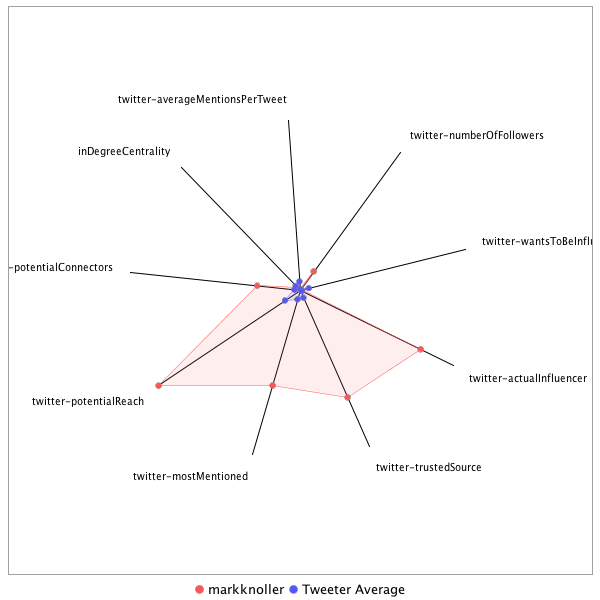

This tweeter has been identified as an influencer. Its target audience and hashtag and word usage are analyzed below.
Basic Statistics
Number of direct followers 292960 The peak number of followers that the tweeter had during any time period. Number of retweeters 210 Number of agents that retweeted the key influencer. Number of secondary followers 131149272 The sum of the followers of those who retweeted the key influencer.
Measure Values of Other Influencers node versus Tweeter Average
This compares the measure values of the key influencer with the average values across all tweeters. For each measure line, the center-point means zero and the end-point means the maximum score across all tweeters.

Where was the influencer?
The agent is not recorded as being in any locations. Either he tweeted without geo-tags or we have no information about the tweets he sent.
The agent and retweeters were in 48 different locations.

What hashtags did the influencer use?
This displays the top ranked hashtags that the influencer and its retweeters used.
Rank hashtag Count 1 AHCA 750 2 Comey 649 3 Russia 622 4 pharma 593 5 BREAKING 533 6 Trump 521 7 TrumpCare 439 8 Obamacare 422 9 biotech 383 10 FDA 366 11 SCOTUS 342 12 ACA 335 13 CNNsotu 324 14 ParisAgreement 316 15 mtal 311 16 GA06 293 17 TheLead 290 18 ComeyHearing 244 19 ISIS 243 20 MemorialDayWeekend 242 21 NIH 232 22 adopt 220 23 Manchester 213 24 drugprices 176 25 AdoptDontShop 170 26 MemorialDay 170 27 dog 169 28 Syria 166 29 healthcare 155 30 VAGov 153 31 Qatar 151 32 ge2017 147 33 Iran 142 34 ComeyFiring 137 35 LondonBridge 133 36 ForTheRecord 132 37 JamesComey 130 38 ComeyTestimony 118 39 NAFTA 117 40 ParisAccord 117 41 China 116 42 TrumpBudget 116 43 NBC4DC 115 44 covfefe 109 45 ksleg 105 46 cat 103 47 CongressionalBaseballGame 98 48 NYC 98 49 FBI 95 50 NorthKorea 95 51 ThisIsGoingWell 95 52 Afghanistan 94 53 CDC 92 54 Nats 90 55 potusabroad 89 56 climatechange 88 57 drugpricing 88 58 rescue 88 59 SessionsHearing 87 60 DPRK 86 61 Medicaid 84 62 fakenews 84 63 omnibus 84 64 ComeyDay 83 65 London 81 66 Opioids 81 67 foster 79 68 TheBachelorette 78 69 FBIDirector 77 70 Israel 77 71 txlege 75 72 Sessions 74 73 wmata 73 74 NATO 72 75 CR 71 76 travelban 71 77 science 70 78 FF 69 79 climate 69 80 Venezuela 68 81 US 66 82 travel 66 83 MTP 64 84 MTpol 64 85 Tillerson 64 86 ThisWeek 63 87 Alexandria 62 88 snl 62 89 Turkey 60 90 trumprussia 60 91 CATS 59 92 MAGA 55 93 FTN 54 94 MTPDaily 54 95 OTD 54 96 SpecialReport 54 97 TBT 54 98 CA 53 99 MOLeg 53 100 alexandriashooting 53
Tweet List
This displays all of the tweets of the influencer ordered from earliest to latest. Click on a tweet to see its status in Twitter.
Number Tweet ID Date Message 1 859112493154750465 2017-05-01 14:29:14-04 "I don’t see this happening anytime soon," says Spicer of a Trump meeting with Kim Jong-Un. The right circumstances "do not exist now." 2 859487873015451648 2017-05-02 15:20:52-04 Further, the Russian statement says Trump & Putin agreed to a joint effort to pursue diplomatic solutions of the North Korean situation. 3 859485455120781312 2017-05-02 15:11:15-04 A WH statement says Trump and Putin discussed establishment of "safe" or "de-escalation" zones in Syria to protect civilians. 4 859213225619009536 2017-05-01 21:09:31-04 WH says Pres Trump to confer by phone Tuesday with Russia's Pres Putin.They last spoke April 3 after bombing in St. Petersburg. 5 859108582935146496 2017-05-01 14:13:42-04 Spicer says NK would have to "show signs of good faith," for Trump meeting with Kim. "Clearly the conditions are not there right now." 6 859018574610001921 2017-05-01 08:16:02-04 Since his charge that his campaign/offices were subject to surveillance, Pres Trump says he's had "no relationship" with former Pres Obama. https://t.co/3ZlQcTgqXd 7 859019122310565889 2017-05-01 08:18:13-04 Pres Trump stands by his surveillance charge. Told @jdickerson "it should be #1" in finding out what was going on. Wouldn't elaborate. 8 859494941550161922 2017-05-02 15:48:57-04 Pence says Pres Trump "giving serious consideration" to moving US Embassy in Tel-Aviv to the Israeli capital of Jerusalem. 9 859797884522418177 2017-05-03 11:52:44-04 At West Wing Portico, Pres Trump welcomes Palestinian Pres Mahmoud Abbas to the WH. https://t.co/tLoXRlqgKr 10 860203141685555200 2017-05-04 14:43:05-04 WH so anxious for a legislative victory, it's celebrating the House vote on health care bill when Senate action in doubt. 11 862065783702245377 2017-05-09 18:04:33-04 In a letter to Comey, Pres Trump says he concurs that "you are not able to effectively lead the Bureau." https://t.co/F1kadYx4aZ 12 862286546149548036 2017-05-10 08:41:47-04 "Was he fired? Was he fired? You're kidding? You're kidding," says Russian FM Lavrov in mock disbelief about Comey firing. https://t.co/pWSU0ds93P 13 860206838771535872 2017-05-04 14:57:46-04 Through the trees at WH, House Republicans can be seen arriving on a bus from the Capitol to attend health care vote event with @POTUS. https://t.co/zTlkq4A5Yn 14 862369081084837888 2017-05-10 14:09:45-04 WH doesn't think special prosecutor is necessary to investigate Russia connections and intrustions, says @SHSanders45. 15 862334974258802688 2017-05-10 11:54:13-04 "Had a very good meeting with Lavrov," said Pres Trump. "I thought it was very, very good." Expressed optimism about Syria. https://t.co/y57tR0vMry 16 862312182192771073 2017-05-10 10:23:39-04 Russian FM Lavrov arrives West Exec entrance of WH. Low protocol for highest ranking Russian official yet received at Trump WH. https://t.co/wcunA1IR1v 17 862314590788624385 2017-05-10 10:33:14-04 At Sen Judiciary hearing, @SenFeinstein calls Comey firing "beyond suprising" and calls for special prosecutor to oversee FBI Russia probe. https://t.co/ht8pS89REu 18 862112406306258944 2017-05-09 21:09:49-04 Deputy FBI Dir Andrew McCabe was informed he was now Acting Director just minutes before WH announcement of Comey firing. 19 862069775656157184 2017-05-09 18:20:25-04 On his 2nd full day in office, Pres Trump accorded Comey a special attaboy at a WH event for law enforcement. https://t.co/fBSboYNb7E 20 860307554093629440 2017-05-04 21:37:59-04 Pres Trump followed at lectern by John Travolta, also hailing bonds of friendship between US and Australia. https://t.co/RKxQafLnuJ 21 860462121523580929 2017-05-05 07:52:11-04 Was 1115p last night when Pres Trump got to his golf club in Bedminster NJ. No events today but needs to sign the spending bill by midnight. 22 860468215910199296 2017-05-05 08:16:24-04 By my count, it's Pres Trump's 23rd visit since taking office to one of his eponymous golf clubs in FL, VA and NJ. Has played golf 18 times. 23 860299427533262850 2017-05-04 21:05:41-04 Pres Trump kids about phone call last Jan. with Turnbull. "We had a very good phone call," he says, but adds, "it got a little bit testy." https://t.co/RTaNjwKuQB 24 860270971340632065 2017-05-04 19:12:37-04 The Trump meeting with Turnbull comes 3 months after a testy phone call and dispute over Obama promise to accept some 1,250 refugees. 25 860272252616683523 2017-05-04 19:17:42-04 VP Pence's Australia visit last month was meant to put relations right before tonight's Trump/Turnbull meeting. Got close-up with a Koala. https://t.co/FIM5A6Qd5f 26 860286191299682304 2017-05-04 20:13:06-04 Smiles and handshakes for Pres Trump and Australian PM Turnbull. Say dispute over refugees was "an exaggeration...little bit of fake news." https://t.co/Rp71ypxjUw 27 860286571727269888 2017-05-04 20:14:36-04 "That's all worked out," says Pres Trump about US accepting some refugees held by Australia. "Been worked out for a long time." https://t.co/MgztBUgY6v 28 860158708407570434 2017-05-04 11:46:31-04 Pres Trump says his visit to Saudi Arabia will include a gathering of leaders from "across the Muslim world" to unite against extremism. 29 860481740493787136 2017-05-05 09:10:08-04 WH bringing $1.1-trillion spending bill to Pres Trump at his NJ golf club for signing this afternoon well before midnight shutdown deadline. 30 862370208199180301 2017-05-10 14:14:14-04 If @HillaryClinton had won, "she would have fired Comey immediately," says Sanders. Says Dem response now "“purest form of hypocrisy.” 31 862367589623889927 2017-05-10 14:03:50-04 WH wants FBI Russia probe to be completed: "Let's put it behind us," says Sanders. "Let’s move on.” 32 862366350538395649 2017-05-10 13:58:54-04 Sanders says Trump's praise for Comey as a candidate, different than his responsibilities he has as president. 33 862365718884614148 2017-05-10 13:56:24-04 At WH Briefing, @SHSanders45 says Pres Trump lost confidence in Comey and had been considering letting him go since the day he was elected. https://t.co/8RQbaOpNgn 34 862360151420022784 2017-05-10 13:34:16-04 Dressed to play hockey, Putin tells CBS' @elizapalmer "we have nothing to do with that," asked about Comey firing. "Don't be angy with me." https://t.co/6qlUMPfORH 35 862356777999970305 2017-05-10 13:20:52-04 Acting FBI Director Andrew McCabe added to witness list tomorrow at Senate Intelligence Committee hearing on worldwide threats. 36 862354684438249472 2017-05-10 13:12:33-04 Deputy @SHSanders45 has the WH briefing duty today at 130pm/ET. @PressSec on Navy Reserve duty again today at Pentagon. https://t.co/y2DPBxu54t 37 862342882451238913 2017-05-10 12:25:39-04 At Russian Embassy news conf, FM Lavrov said Presidents Trump & Putin still expected to meet on sidelines of G20 Summit in Germany in July. 38 862335490481061888 2017-05-10 11:56:17-04 On Syria: "I think things are happening that are really, really, really positive. We're going to stop the killing & the death," said @POTUS. 39 862333902018531332 2017-05-10 11:49:58-04 Pres Trump made the brief remark on why he fired Comey during Oval Office photo op with former SecState Henry Kissinger. https://t.co/ALSYDBAp3C 40 862329760952856577 2017-05-10 11:33:30-04 In first press comment on his firing of Dir Comey, Pres Trump says "He wasn't doing a good job. Very simply. He was not doing a good job." 41 862327013994094593 2017-05-10 11:22:36-04 WH not worried about Russian Govt photographer asking Pres Trump questions about his firing of FBI Dir Comey. https://t.co/BbUgdBqAyO 42 862326648502444032 2017-05-10 11:21:08-04 No WH press photo op, but Russian Ministry of Foreign Affairs posted its own pic of Trump-Lavrov greeting in the Oval Office this morning. https://t.co/BbUgdBqAyO 43 862326023337246721 2017-05-10 11:18:39-04 Pence said Pres Trump was already at work this morning evaluating possible nominees to serve as FBI Director. Mentioned no names. 44 862325564774002689 2017-05-10 11:16:50-04 I counted at least five times that @VP used the phrase "strong and decisive leadership" to describe Pres Trump's decision to fire Comey. 45 862325200955854848 2017-05-10 11:15:23-04 At the Capitol, Pence said Comey "had lost the confidence of the American people" and "it was time for a fresh start at the FBI." 46 862324512360194048 2017-05-10 11:12:39-04 "That's not what this was about," says VP Pence about FBI Russia probe being a factor in Comey firing. 47 862315394220077057 2017-05-10 10:36:25-04 Feinstein made remarks on Comey at start of confirmation hearing for Noel Francisco to be Solicitor General, #3 post at DOJ. https://t.co/OmuR8WxDx7 48 862287233948286977 2017-05-10 08:44:31-04 In 60 second photo op, Secretary of State Tillerson thanks Lavrov for continuing their dialogue "on a very broad range of topics." https://t.co/2WMTCqJTlu 49 862275422750474240 2017-05-10 07:57:35-04 Conway also denies suggestion that Pres Trump ever asked Comey if he was under FBI investigation. 50 862274488435712000 2017-05-10 07:53:52-04 On @cnn, Conway says Pres Trump wants an FBI Dir who is impartial, not politicized, and has trust of Pres & AG. Says Comey "lost that." 51 862274073300279296 2017-05-10 07:52:14-04 Again this morning, @KellyannePolls disputes Comey fired because of Russia investigation, rather than mishandling Clinton email probe. 52 862271090558685184 2017-05-10 07:40:22-04 In two more tweets, Pres Trump says Comey's replacement will do a "far better job," and Dems & GOPs "will be thanking me." 53 862268923701587969 2017-05-10 07:31:46-04 "Right now, we’re not getting along with Russia at all," said Pres Trump on April 12. "We're going to see how that all works out." 54 862268375061467137 2017-05-10 07:29:35-04 The meeting with Lavrov comes less than a month after Pres Trump said US relations with Russia "may be at an all-time low." 55 862266827489112064 2017-05-10 07:23:26-04 For 3rd day, no press events on Pres Trump's schedule - though he meets this morning for 1st time with Russian FM Lavrov. 56 862265744058449920 2017-05-10 07:19:08-04 Pres Trump slamming Dems for playacting concern about Comey firing. Last night, reminded @SenSchumer he said he lacked confidence in Comey. https://t.co/lfcj0HUGBy 57 862109669300547584 2017-05-09 20:58:57-04 Former DNI James Clapper: "I have immense respect & admiration for James Comey. This is a tremendous loss for both the FBI and the nation." 58 862106680007565312 2017-05-09 20:47:04-04 On @cnn. @KellyannePolls says Pres Trump's firing of Comey "has zero to do": with FBI probe of Russian intrusion/collusion in 2016 campaign. 59 862100098217635840 2017-05-09 20:20:55-04 Only 2nd time an FBI Dir fired. Text of Pres Clinton statement dismissing FBI Dir Willian Sessions July 19, 1993. https://t.co/JPsSYg79Eh 60 862094681374695424 2017-05-09 19:59:23-04 But @SenatorBurr, GOP Chmn of Senate Intelligence, is raising concerns about Comey's ouster:. https://t.co/jM4EucctX0 61 862093356737990656 2017-05-09 19:54:07-04 Another official says Pres Trump's letter was conveyed to Comey at FBI in Los Angeles, where he was giving previously scheduled speech. 62 862092262083371008 2017-05-09 19:49:46-04 WH Official confirms that Keith Schiller, Pres Trump’s longtime personal aide, hand-delivered @POTUS letter firing Comey to FBI HQ. 63 862089314699751424 2017-05-09 19:38:04-04 Knocks WH debut of Pence family rabbit Marlon Bundo off tomorrow's front pages. https://t.co/kGT0gbTFsR 64 862084080858533889 2017-05-09 19:17:16-04 .@SenBobCorker says Comey's removal "will raise questions." Says "essential" that investigations continue "free of political interference." 65 862082773326147589 2017-05-09 19:12:04-04 In Memorandum to AG Sessions, Deputy AG Rod Rosenstein recommended that Comey be replaced: https://t.co/xsS37OwSTA 66 862081647759552516 2017-05-09 19:07:36-04 In statement, @LindseyGrahamSC says "a fresh start will serve the FBI and the nation well." 67 862077100542615552 2017-05-09 18:49:32-04 In memorandum to AG Sessions, Deputy AG Rosenstein cites "universal judgment" that Comey mishandled the Clinton email matter. 68 862076139845636097 2017-05-09 18:45:42-04 "This is Nixonian," says @SenBobCasey of Comey firing. Also calls for special counsel "to continue the Trump/Russia investigation." 69 862074622996611073 2017-05-09 18:39:41-04 .@SenMarkey says US "careening ever closer to a Constitutional crisis." Calls for special prosecutor to probe Trump/Russia dealings. 70 862067185753219072 2017-05-09 18:10:08-04 And in a letter to Pres Trump, Atty Gen Sessions wrote " a fresh start is needed at the leadership of the FBI." https://t.co/9lGMkT80cR 71 862066047574310912 2017-05-09 18:05:36-04 In a letter, Pres Trump tells Comey "it is essential that we find new leadership for the FBI that restores public trust and confidence." 72 862062077841727493 2017-05-09 17:49:50-04 WH says a search for a new FBI Director will begin immediately. Pres Trump calls it "a new beginning for our crown jewel of law enforcement" 73 862061552794513411 2017-05-09 17:47:45-04 WH statement says Trump has removed Comey from office based on the "clear recommendations" of AG Sessions & Deputy AG Rosenstein. 74 862061156399292416 2017-05-09 17:46:10-04 BREAKING: Pres Trump fires FBI Director James Comey. 75 862016159440359425 2017-05-09 14:47:22-04 WH congratulates and looks forward to working with South Korean Pres-elect Moon Jae-in to deepen "friendship and partnership." 76 862014947034890240 2017-05-09 14:42:33-04 On Afghanistan, Spicer says Pres Trump & advisors reviewing "entire strategy" and then deciding on additional troop strength. 77 862011037779886081 2017-05-09 14:27:01-04 On @LindseyGrahamSC call for investigation, Spicer says Pres Trump "has no business with Russia…has no connections to Russia." 78 862010116853432320 2017-05-09 14:23:21-04 Don't want to re-litigate Flynn matter, says Spicer: "The President made the right decision and we’ve moved on," he says. 79 862008719181262849 2017-05-09 14:17:48-04 Spicer says Pres Trump wants more time to come to a decision on what's best for the US: staying in or withdrawing from Paris Agreement. https://t.co/WXKPRvBK2q 80 862007620709888002 2017-05-09 14:13:26-04 No WH decision on Paris Climate Agreement, until after Pres Trump returns from G7 Summit at the end of the month, Spicer announces. 81 861971051739328513 2017-05-09 11:48:08-04 Pres Trump also extending national emergency re: the Central African Republic for another year. 82 861970147459948545 2017-05-09 11:44:32-04 Pres Trump extends national emergency re: Syria for another year. Keeps sanctions in place. First declared by GWBush in 2004. 83 861917591274749954 2017-05-09 08:15:42-04 FAA posts notice of possible VIP movement at Camp David. Pres Trump has yet to visit. At same point, Pres GWBush was there 8 times/24 days. 84 861915144938500096 2017-05-09 08:05:58-04 VP Pence also hosting event to honor military & families pegged to Military Appreciation Month & Military Spouse Appreciation Day. 85 861913793932259329 2017-05-09 08:00:36-04 No events or press appearances by Pres Trump again today, as of this writing. @VP has talks on Cap Hill including Senate GOP Policy Lunch. 86 861736840998604805 2017-05-08 20:17:27-04 Pres Trump slams news coverage of Yates/Clapper testimony today - which focused on warnings to him about Gen Flynn. https://t.co/znn7pslGmO 87 861736066075832320 2017-05-08 20:14:23-04 Pres Trump extends national emergency with respect to Yemen for another year; keeps US sanctions in place against some members of its Govt. 88 861734398298816512 2017-05-08 20:07:45-04 Pres Trump submits slate of judicial nominees to Senate. Larsen and Stras from were potential SCOTUS nominees. Has 120 vacancies to fill. https://t.co/wMoe3cGNWV 89 861710741656752130 2017-05-08 18:33:45-04 Leading all the network evening newscasts: Obama reportedly warned Trump about Gen Flynn; Yates describes her warning to WH. 90 861690874983567361 2017-05-08 17:14:48-04 "Yes, I was fired," said former Acting AG Sally Yates, of her dismissal. WH statement from Jan 30 said she was "relieved of her duties:" https://t.co/6p10O98kN7 91 861684328568324096 2017-05-08 16:48:47-04 Exposition bill sponsored by 7 House members from Minnesota, which is seeking to host a World's Fair in 2023. 92 861683887063408640 2017-05-08 16:47:02-04 Pres Trump signs bill authorizing US to rejoin Bureau of International Expositions to promote US diplomacy, global branding & tourism. 93 861660135336312832 2017-05-08 15:12:39-04 WH says Pres Trump and Macron agreed to have a meeting while both attend the NATO Summit in Brussels May 25th. 94 861659881660612613 2017-05-08 15:11:39-04 In phone call with French Pres-elect Macron, Pres Trump "emphasized his desire to work closely...in confronting shared challenges," says WH. 95 861658003317108738 2017-05-08 15:04:11-04 And in 1974, Charles Templeton wrote "The Kidnapping of the President." Became a William Shatner movie in 1980. 96 861656880925507584 2017-05-08 14:59:43-04 In 1966, Robert Serling wrote "The President's Plane is Missing." Became a 1973 TV movie. 97 861655830780928000 2017-05-08 14:55:33-04 First place one might look for a missing president - including Bill Clinton - is the golf course club house. 98 861654383821455360 2017-05-08 14:49:48-04 "A unique amalgam of intrigue, suspense and behind-the-scenes global drama" is promised in novel next year. Note the authors: https://t.co/0cmvWmdl8f 99 861648327196200960 2017-05-08 14:25:44-04 “You are the best of us," @VP tells veterans, and on behalf of Pres Trump, "I’m here to say thanks and salute your service.” https://t.co/YIKlKNv0Ot 100 861647713775083520 2017-05-08 14:23:18-04 VP Pence marks 72nd anniv of V-E Day, thanking Honor Flight veterans at WH ceremony during National Military Appreciation Month. https://t.co/eEr45aHus7 101 861642578592182272 2017-05-08 14:02:53-04 On Gen Flynn, Spicer says Flynn was critical of Pres Obama's policies, "so the fact that Obama didn’t like the guy isn’t very shocking.” 102 861641938583388160 2017-05-08 14:00:21-04 North Korea's detentions of Americans seen as attempt to secure bargaining chips for its dealings with the US. 103 861641014821490688 2017-05-08 13:56:41-04 WH says North Korea's detention of a 4th American is "concerning." US pursuing the matter working the issue through the Embassy of Sweden. 104 861633612814450696 2017-05-08 13:27:16-04 Spicer says Pres Trump took decisive action to fire Gen Flynn as Natl Security Advisor and stands by that action today. https://t.co/fXqGxGx83j 105 861633239345229824 2017-05-08 13:25:47-04 Spicer again questions why, if Obama Admin had concerns about Gen Flynn, it renewed his security clearance. 106 861631244328632320 2017-05-08 13:17:51-04 Spicer says Pres Trump spoke today with French Pres-elect Macron to offer congratulations. Only issued tweet yesterday. 107 861567617470955520 2017-05-08 09:05:01-04 Great front page. https://t.co/T2YN51g5v3 108 861565115228991488 2017-05-08 08:55:05-04 Today at the WH. Pres Trump has meetings with McMaster and Tillerson. Also lunch with the @VP. No press coverage on any. So far. 109 861555955762376706 2017-05-08 08:18:41-04 And Pres Trump suggesting questions Senate Judiciary should put to the former Acting AG Sally Yates he let go. https://t.co/Uo2LSKVdQg 110 861552584707985412 2017-05-08 08:05:17-04 Pres Trump weighing in on Gen Flynn in advance of Senate hearing at 230pm on Flynn contacts with Russia. https://t.co/NGiSmA4nje 111 861545412099964928 2017-05-08 07:36:47-04 Pres Trump offers golf congrats this morning: WH wouldn't disclose @POTUS golf outings during his NJ golf club weekend. https://t.co/pJphp2wbkW 112 861544078869180416 2017-05-08 07:31:29-04 At the same time, @CondoleezzaRice agrees with Pres Trump that Kim is "a smart cookie" for having survived this long politically. 113 861543844529278976 2017-05-08 07:30:33-04 Asked about NKorea's detention of another American, Rice thinks Kim pursuing an image of power & strength to make US suffer. 114 861543502051717120 2017-05-08 07:29:12-04 "I think he is reckless and maybe even a little unhinged," says @CondoleezzaRice this morning of North Korean leader Kim Jong Un. https://t.co/9KTXWlgDfg 115 861400986690236416 2017-05-07 22:02:53-04 Pres Trump lost no time stepping off Marine One on return to the WH, but didn't respond when asked why the delay on Air Force One. https://t.co/H02zXERXfI 116 861395742920978433 2017-05-07 21:42:03-04 WH official later explained Pres Trump was finishing up a meeting to explain his 45-min stay on Air Force One after landing. https://t.co/pCAvY7XB7g 117 861394307105923073 2017-05-07 21:36:21-04 Asked why @POTUS on board so long, son-in-law & advisor Jared Kushner told press pool he was "working on something," but didn't elaborate. 118 861392548597727234 2017-05-07 21:29:22-04 Though Air Force One landed at @JBA_NAFW at 840pm, Pres Trump didn't disembark until 925pm. No explanation given. https://t.co/oWKWPZJMYL 119 861372185407086592 2017-05-07 20:08:27-04 Pres Trump aboard Air Force One wheels up from Morristown, NJ heading back to DC. 120 861341453095751680 2017-05-07 18:06:20-04 Golf runs long. Again. So does basketball. Delays or pre-empts evening news. Seems like on purpose. 121 861229944386588672 2017-05-07 10:43:14-04 Pres Trump spending 3rd day at his NJ golf club. He's opining on Twitter. WH won't say if he golfs. He returns to DC tonight. 122 860922771089608704 2017-05-06 14:22:38-04 WH Natl Security Advisor McMaster meets with Venezuelan lawmaker about political turmoil there & need for "free & democratic elections." https://t.co/hmTJlYXbDL 123 860918568208171009 2017-05-06 14:05:56-04 Per routine practice, aides won't say if Pres Trump playing golf. He told Fox last week, "I don't want to be known as a person who relaxes." 124 860908073476665344 2017-05-06 13:24:14-04 At his NJ golf club, Pres Trump is said to be holding meetings and making calls, including one with Pres Kuczynski of Peru. 125 860631133557489664 2017-05-05 19:03:46-04 Weekend Visits to Camp David at same point in presidencies: TRUMP - None OBAMA - 4 (9 days) GW BUSH – 7 (21 days) CLINTON – 2 (4 days) 126 860627176844124160 2017-05-05 18:48:03-04 Pres Trump to spend weekend at his Bedminster, NJ Golf Club. Brings weekend scoreboard to: Golf Clubs (FL/NJ) - 8 WH - 8 Camp David - 0 127 860592519758966784 2017-05-05 16:30:20-04 At @StateDept, a Moment of Silence at Memorial Plaque for 248 fallen Foreign Service Officers.. No names being added to the for past year. https://t.co/9Taa1GwwLY 128 860586795028946944 2017-05-05 16:07:35-04 Earlier in the day @SenDuckworth said Mark Green "not fit" to Army Secretary, citing his attitude towards Muslims & LGBT Americans. 129 860586278601068552 2017-05-05 16:05:32-04 RT @MajorCBS: News: Have it on very reliable authority Army Secretary nominee Dr. Mark Green will withdraw nomination today. 130 860583951940845570 2017-05-05 15:56:17-04 And Pres Trump tells Congress he will implement the spending bill "consistently with my constitutional authority as Commander in Chief." 131 860583561509949440 2017-05-05 15:54:44-04 Like his predecessors, Pres Trump today told Congress that some provisions in the spending bill "unconstitutionally limit" his authority. 132 860580413458313216 2017-05-05 15:42:14-04 A bit of sarcasm in @POTUS Weekly Address about the bill he wants to repeal & replace: "It’s called ObamaCare, perhaps you’ve heard of it." 133 860554863146651650 2017-05-05 14:00:42-04 Explaining Pres Trump's praise for Australia's health care system, "what works for Australia, may not work in the US," says @SHSanders45. 134 860554270772523008 2017-05-05 13:58:21-04 In NJ, Pres Trump has signed $1.1-trillion spending bill to fund government for remainder of the fiscal year and avert midnight shutdown. 135 860550599976333313 2017-05-05 13:43:45-04 At WH Briefing, @SHSanders45 says WH expects some changes in healthcare bill in Senate, but "main pillars" will remain the same. https://t.co/zqRSRIPxp1 136 860485759027077120 2017-05-05 09:26:06-04 But he also doesn't want people to think he's having fun when at his golf clubs: "I'm not having fun. When I go to a club, I'm working." 137 860484940399554560 2017-05-05 09:22:51-04 In Fox interview last month, Pres Trump said he feels guilty visiting NYC "because I hate to see the New Yorkers with the streets closed." 138 860482061102174208 2017-05-05 09:11:25-04 Pres Trump says he's saving taxpayers money and NYC traffic hassles by working at his NJ golf club. https://t.co/Q3h1AYZpno 139 860474072509161472 2017-05-05 08:39:40-04 At 4.4%, it's the lowest national unemployment rate since May 2007. https://t.co/3cmqNQgyNi 140 860473365198405632 2017-05-05 08:36:51-04 New jobs report: @BLS_gov reports 211,000 new payroll jobs in April, and national unemployment rate down a tenth to 4.4%. 141 860327600383823872 2017-05-04 22:57:38-04 Pres Trump has arrived in Bedminster, NJ via Marine One. He's spending a long weekend at his Trump National Golf Club. 142 860303795833720832 2017-05-04 21:23:03-04 Pres Trump ends speech saying US renews its friendship with Australia and "pledges our everlasting partnership" for peace & prosperity. https://t.co/Zd1TuNcQSC 143 860300922139938819 2017-05-04 21:11:38-04 "Americans have no better friends than the Australians," says Pres Trump, thanking Australia for support in Syria, Iran, Afghanistan. https://t.co/UYPdyzlxir 144 860300389597491204 2017-05-04 21:09:31-04 Commemorating Battle of Coral Sea, Pres Trump says "America and Australia are old friends and really natural partners" & will remain so. 145 860298972660891648 2017-05-04 21:03:53-04 Media mogul Rupert Murdoch introduces "my friend," Pres Trump. "There's only one Rupert." says @POTUS. https://t.co/M9oku6rWFO 146 860297822465396736 2017-05-04 20:59:19-04 On North Korea, Iraq & Afghanistan, PM Turnbull said Australians and Americans "stand shoulder to shoulder defending our freedoms." 147 860295697001836544 2017-05-04 20:50:52-04 PM Turnbull congratulates Pres Trump on House vote on health care bill. Says its especially great to win a vote you were expected to lose. https://t.co/zZm7GA6yB9 148 860289441138692096 2017-05-04 20:26:00-04 By my count, PM Turnbull is the 19th foreign leader to meet with Pres Trump since he took office. https://t.co/C1mdTb3ykN 149 860288300174778368 2017-05-04 20:21:28-04 Asked about Senate prospects for the health care bill, "I think we'll get it through," said Pres Trump. 150 860287810544259076 2017-05-04 20:19:32-04 "We've been allies for 99 years and never had a bad time," said Pres Trump of US relations with Australia. Said he'll be visiting. 151 860287402455203840 2017-05-04 20:17:54-04 "We get along great. Always have," the president said of dealings with PM Turnbull, adding, "I love Australia. Always have." https://t.co/o8tdVpGJEr 152 860286920617865217 2017-05-04 20:15:59-04 As for the report of a testy phone call with Turnbull in January, Pres Trump told press: "You guys exaggerated that...we had a great call." 153 860270088166965248 2017-05-04 19:09:06-04 Pres Trump arrives at the @ussintrepid. Now meets Australian PM @TurnbullMalcolm before dinner marking 75th anniv of the Battle of Coral Sea 154 860260632280657920 2017-05-04 18:31:32-04 Pres Trump's health care victory in the House leads the network evening newscasts across-the-board tonight. 155 860258987912175616 2017-05-04 18:25:00-04 Boarded Air Force One in suit and tie, gets off in a tuxedo. https://t.co/1YOtbq47eT 156 860255630225022976 2017-05-04 18:11:39-04 “What President Trump did today was merely provide a faux sop to religious conservatives," says @ACLU in a statement on the Exec Order. 157 860255377568526336 2017-05-04 18:10:39-04 After reviewing Pres Trump's Exec Order on religious freedom, the @ACLU announces no need to challenge it in court "at this time." 158 860254261652992001 2017-05-04 18:06:13-04 Air Force One comes in for landing at @JFKairport. https://t.co/005ncRymcv 159 860250749300854784 2017-05-04 17:52:15-04 .@VP pays tribute to Mexican-Americans and Hispanic-Americans as "one of the most vibrant threads" in America. 160 860249552032595968 2017-05-04 17:47:30-04 “The president has made the Latino community a priority," says VP Pence, hosting event on eve of Cinco de Mayo. https://t.co/njXCc0LqXv 161 860245305895378948 2017-05-04 17:30:38-04 Then wheels up at 529pm/ET. https://t.co/0rj3CGJDrf 162 860243215148097536 2017-05-04 17:22:19-04 Never takes a bad picture. About to taxi. https://t.co/CG7wOqpRdG 163 860242821806272512 2017-05-04 17:20:45-04 Then at @JBA_NAFW, boards Air Force One for his first flight back to NYC since taking office. Will meet tonight with @TurnbullMalcolm. https://t.co/pMvxcQSJF7 164 860241797859209216 2017-05-04 17:16:41-04 Pres Trump smiles at the media as he walks from the Oval to Marine One across the South Lawn. https://t.co/tLJrxGzvdb 165 860221143902556160 2017-05-04 15:54:37-04 Pres Trump in such a good mood over House health care vote, he says, "I even want to thank the media." https://t.co/msp3EMYCxK 166 860218996968353796 2017-05-04 15:46:05-04 Today also a "giant step" toward tax reform, says @RepKevinBrady, "and we intend to deliver on that promise too." https://t.co/Vz01wa9PXs 167 860214983703113729 2017-05-04 15:30:08-04 House GOP members laugh when @SpeakerRyan says friends in the Senate eager to get to work" on the healthcare bill. "They are," he insists. https://t.co/DsCVLJsV4O 168 860213671246667776 2017-05-04 15:24:55-04 "This has really brought the Republican Party together," says Pres Trump of the House vote today on health care bill. https://t.co/yEBNlYaTTb 169 860212928158601216 2017-05-04 15:21:58-04 "We're gonna get this passed through the Senate," says Pres Trump. "I feel so confident," sharing stage with @SpeakerRyan & others. https://t.co/4ZXCPOo6KY 170 860212311180664832 2017-05-04 15:19:31-04 "Welcome to the beginning of the end of ObamaCare," says VP Pence. https://t.co/eqLSN3P425 171 860211056504963072 2017-05-04 15:14:32-04 House Republicans await Pres Trump in Rose Garden to celebrate vote passing AHCA in House. https://t.co/m7hRTJfpFo 172 860207493057740801 2017-05-04 15:00:22-04 "Nowhere fast." That's where @SenSchumer says the GOP health care bill is going in the Senate. Urges Senate GOP not to follow House lead. 173 860204939083231232 2017-05-04 14:50:13-04 WH setting up Rose Garden for 330pm/ET event by Pres Trump and GOP House members on passage of health care bill. https://t.co/FQnjVPU9fh 174 860198042791792641 2017-05-04 14:22:49-04 Health care bill now goes to the Senate where it faces even tougher sledding. 175 860197404078989312 2017-05-04 14:20:17-04 House votes 217-213 passing bill to repeal and replace ObamaCare. https://t.co/i4MKBvbAIU 176 860195215650557952 2017-05-04 14:11:35-04 Pres planning victory event for House vote on health care bill. https://t.co/zxUHdRMjaV 177 860193250933690369 2017-05-04 14:03:47-04 Text of Pres Trump's Executive Order today promoting religious liberty. https://t.co/7Kpsr2R4xp 178 860182322347376640 2017-05-04 13:20:21-04 .@SHSanders45 says passage of health care bill "critical" because "Obamacare is collapsing under itself & simply not sustainable.” 179 860181920851910656 2017-05-04 13:18:45-04 Pres Trump delaying departure for NYC to remain in DC for House vote on bill to repeal and replace ObamaCare. 180 860175701810573314 2017-05-04 12:54:03-04 @G_enevieve Pastor Paula White of Florida’s New Destiny Christian Center, Pastor Jack Graham, Cardinal Donald Wuerl, and Rabbi Marvi Hier. 181 860174130318069761 2017-05-04 12:47:48-04 WH says Pres Trump will also meet again with Palestinian Pres Abbas while in the Mideast later this month. Precise venue not mentioned. 182 860170447664680961 2017-05-04 12:33:10-04 Pres Trump to host WH talks with Pres Juan Manuel Santos of Colombia on May 18 to reinforce "strong ties," WH announces. 183 860166866161082369 2017-05-04 12:18:56-04 Former Pres Obama taking sides in French Election issuing statement of support for centrist Emmanuel Macron. https://t.co/U5H7lqDHsS 184 860164471494463488 2017-05-04 12:09:25-04 Pres signs National Day of Prayer Proclamation and Executive Order Promoting Free Speech and Religious Liberty. https://t.co/yThoqMREAQ 185 860163560256700416 2017-05-04 12:05:48-04 With eye on Congress, Pres Trump hopes for "a wonderful vote" on health care bill: to take care of people and "their health care needs.” 186 860161234792067072 2017-05-04 11:56:34-04 The Vatican confirms Pres Trump will meet with @Pontifex on May 24. 187 860160472208814082 2017-05-04 11:53:32-04 Says his Exec Order makes clear the federal govt will never ever penalize anyone "for their protected political beliefs." 188 860159678822666240 2017-05-04 11:50:23-04 Pres Trump says his Exec Order directs the IRS not to unfairly target churches and religious orgs for political speech. 189 860159265348227074 2017-05-04 11:48:44-04 "No American should be forced to choose between the dictates of the federal govt and the tenets of their faith," declares Pres Trump. https://t.co/uC1cPtPrRt 190 860158246304313346 2017-05-04 11:44:41-04 Pres Trump just formally announced that his first foreign trip this month will begin with visits to Saudi Arabia, Israel and Rome. 191 860157647881986050 2017-05-04 11:42:18-04 "We’re a nation of believers,” says Pres Trump at Day of Prayer event. "Faith is deeply embedded into the history of our country." https://t.co/QyJyz3pld5 192 860155045706444800 2017-05-04 11:31:58-04 National Day of Prayer service underway in Rose Garden in advance of Pres Trump signing Exec Order on religious freedom. https://t.co/tWQr4V42OR 193 860147115724611586 2017-05-04 11:00:27-04 Pres Trump adding stops in Israel, Saudi Arabia and the Vatican to NATO/Brussels & G7 Summit/Sicily at end of May, confirms senior official. 194 860104326840287232 2017-05-04 08:10:26-04 Pres Trump also watching as House votes today on bill to repeal and replace ObamaCare. Vote scrubbed Mar 24 for lack of votes. 195 860102641027829760 2017-05-04 08:03:44-04 This evening, both @realDonaldTrump and @TurnbullMalcolm attend commemoration of the 1942 Battle of Coral Sea aboard @ussintrepid. 196 860102216702730242 2017-05-04 08:02:03-04 Later today, Pres Trump returns to NYC for 1st time as pres: will meet with Australian PM @TurnbullMalcolm. 197 860101787436666880 2017-05-04 08:00:20-04 WH official also says the E.O. "provides regulatory relief" to religious objectors to some ObamaCare mandates - as cited in Hobby Lobby case 198 860101173830971392 2017-05-04 07:57:54-04 Today's E.O. directs the IRS to "exercise maximum enforcement restraint" on tax exempt church orgs when clergy talk politics on the pulpit. 199 860098599593672705 2017-05-04 07:47:40-04 Pres Trump today also uses a Day of Prayer event to sign an Executive Order billed as promoting free speech & religious liberty. 200 860098101952032768 2017-05-04 07:45:42-04 Pres Trump marks the Day of Prayer, meeting this morning with Catholic Cardinals and other religious leaders. 201 860097588963553280 2017-05-04 07:43:39-04 By Act of Congress dating back to 1952, the first Thursday in May - today - is designated a National Day of Prayer. https://t.co/9xXIi6sZUm 202 860095758665732097 2017-05-04 07:36:23-04 Pres Trump also exasperates on Twitter this morning about the press. https://t.co/UPgtyTTVbw 203 860095379475488770 2017-05-04 07:34:52-04 "Not good," says Pres Trump in double-tweet today about Susan Rice decision not to testify at Senate hearing on Russian political intrusions 204 859940118815272966 2017-05-03 21:17:55-04 WH official says Pres Trump Exec Order will direct IRS "to exercise maximum enforcement discretion" on political remarks from the pulpit. 205 859936615451553792 2017-05-03 21:04:00-04 WH official also says Thursday's Exec Order provides regulatory relief for religious objectors to ObamaCare mandates as in Hobby Lobby case. 206 859936234910744576 2017-05-03 21:02:29-04 Exec Order Thursday directs IRS to go easy on tax exempt religious orgs when their leaders discuss politics/candidates from the pulpit. 207 859921308347494400 2017-05-03 20:03:11-04 The @ACLU has already served notice it will challenge religious freedom Exec Order in court on grounds it facilitates discrimination. 208 859920493989810176 2017-05-03 19:59:56-04 Also on Thursday, Pres Trump to observe National Day of Prayer, and sign controversial Executive Order on religious freedom. 209 859918591566766080 2017-05-03 19:52:23-04 Thursday: Pres Trump makes first 1st NYC visit home. Meets with @TurnbullMalcolm at Battle of Coral Sea event aboard @ussintrepid. 210 859898507322433537 2017-05-03 18:32:34-04 Leading the evening news: CBS: Deadly flooding in Arkansas; ABC/NBC: FBI's Comey explains controversial pre-election letter. 211 859893923472343040 2017-05-03 18:14:22-04 @NixonLibrary Are they available online? 212 859891030904250368 2017-05-03 18:02:52-04 When in doubt, look it up. https://t.co/MUmOMdmX6S 213 859844538311069696 2017-05-03 14:58:07-04 RT @margbrennan: "The man is different," @PressSec on what makes @POTUS Trump's Mideast peace bid different from past failed presidential a… 214 859840199702044672 2017-05-03 14:40:53-04 Pres tomorrow observes National Day of Prayer, says Spicer, but won't say if @POTUS will sign controversial Exec Order on religious freedom. 215 859839426989629440 2017-05-03 14:37:49-04 Spicer says Pres Trump "on the phone constantly" to get votes for health care bill, but will leave it to House GOP Leaders to schedule vote. 216 859839085615095808 2017-05-03 14:36:27-04 "I think it's somewhat sad we’re still debating why the pres won," says Spicer, asked about Clinton's comments yesterday on why she lost. 217 859838528552935428 2017-05-03 14:34:14-04 Spicer says Pres Trump "has confidence" in FBI Dir Comey, but tweeted yesterday in response to Hillary Clinton on Comey actions. https://t.co/wkqV4KgVoA 218 859831889334607872 2017-05-03 14:07:51-04 Knew about Nixon-Elvis. Haven't seen this photo before. https://t.co/q5We4Kg8mr 219 859823982920519685 2017-05-03 13:36:26-04 Pres Trump walks Pres Abbas to his limo at the West Wing portico and bids farewell. https://t.co/eqv3eLL2aD 220 859815406835466240 2017-05-03 13:02:22-04 Pres Trump says maybe a Mideast peace deal "not as difficult as people have thought. "If both sides are willing, "we’re gonna make a deal." https://t.co/5QRfu2O3Qq 221 859814125156933632 2017-05-03 12:57:16-04 Working lunch in the Cabinet Room for US officials and the Palestinian delegation. Presidents Trump and Abbas seated opposite one another. https://t.co/S3A5i9AeV0 222 859811484515356673 2017-05-03 12:46:47-04 "Its been a long long time," said Pres Trump of the mideast peace process. "Maybe we can end that journey and start a much better journey." https://t.co/OEt5NTAckB 223 859810987427463169 2017-05-03 12:44:48-04 Earlier in the Oval Office, Pres Trump said "hopefully something terrific can come out between the Palestinians and Israel." https://t.co/7bPMcsHGxv 224 859809433601363968 2017-05-03 12:38:38-04 Pres Trump said he always heard that an Israeli/Palestinian peace deal is perhaps the toughest: "let's see if we can prove them wrong." https://t.co/mNYlPZb18e 225 859808892909387776 2017-05-03 12:36:29-04 Responding to Abbas, Pres Trump says he hopes to start a process "which hopefully will lead to peace over the course of my lifetime." 226 859808144570167296 2017-05-03 12:33:30-04 Abbas says he believes "we can be true partners and bring about an historic peace treaty." 227 859806996555608064 2017-05-03 12:28:57-04 Speaking Arabic, Abbas says he brings a "message of the suffering of my people" and of their "hope and aspirations." 228 859806544757739521 2017-05-03 12:27:09-04 "It's about time for Israel to end its occupation of our people and our land," says Abbas in statement to Pres Trump. https://t.co/dSIgPXwmwv 229 859805693305606144 2017-05-03 12:23:46-04 Pres Abbas says he seeks a two-state solution, with East Jerusalem serving as the capital of a Palestinian state. https://t.co/iZWRxO6nog 230 859805033805877249 2017-05-03 12:21:09-04 Pres Trump says US willing to act as mediator, arbitrator and/or facilitator for Israeli/Palestinian peace talks. https://t.co/OXhp0t4Dyc 231 859804591269064704 2017-05-03 12:19:23-04 Pres Trump says he's committed to work with Israel and the Palestinians on a negotiated peace agreement - not imposed by anyone. https://t.co/NNAz6m4Yru 232 859801357737504768 2017-05-03 12:06:32-04 American and Palestinian flags flank portrait of Teddy Roosevelt in the Roosevelt Room, where Presidents Trump & Abbas will make statements. https://t.co/yVOwiuUyTz 233 859800558802268160 2017-05-03 12:03:22-04 In the Oval Office, Pres Trump says he hopes something good comes from his talks with Abbas. Says it's been a long time and a long journey. 234 859799021724078081 2017-05-03 11:57:15-04 Pres Trump waiting at the West Wing portico to greet Pres Abbas and escort him inside to the Oval Office for their talks. https://t.co/lPYcVDRFgj 235 859735149034033155 2017-05-03 07:43:27-04 Pres Trump made clear that both Israel & the Palestinians "will have to make compromises. You know that, right?" he told @netanyahu in Feb. 236 859733388374286336 2017-05-03 07:36:27-04 Also today, Pres Trump has a working lunch with Pres Abbas and dinner tonight in the Blue Room with invited religious leaders. 237 859732942335217664 2017-05-03 07:34:41-04 Pres Trump and @netanyahu had a joint news conference in Feb. Today, Pres Trump and Abbas are only scheduled to make statements. 238 859732579779575808 2017-05-03 07:33:14-04 "The United States will encourage a peace and, really, a great peace deal," said Pres Trump. "We'll be working on it very, very diligently." 239 859732284425080832 2017-05-03 07:32:04-04 Today's talks with Abbas come move than 2 months since Pres Trump met with @netanyahu Feb 15 to reaffirm US support & call for peace talks. 240 859731417470783488 2017-05-03 07:28:37-04 As pres., @realDonaldTrump today hosts talks with Palestinian Pres Mahmoud Abbas in search of Israeli-Palestinian peace negotiations. 241 859730692963532803 2017-05-03 07:25:44-04 Which of the news orgs will be first to offer to host a new Clinton/Trump debate to hammer out the reasons for the 2016 election outcome? 242 859730172555276288 2017-05-03 07:23:40-04 Last night, @realDonaldTrump disputed Clinton's version of events in a double-tweet: https://t.co/xdAiCiDYjO 243 859729612988960768 2017-05-03 07:21:27-04 Clinton told a forum yesterday she was on the way to win until FBI's Jim Comey's letter and "Russia/Wikileaks" raised doubts about her. 244 859729142597767168 2017-05-03 07:19:35-04 It's like the 2016 campaign is still underway: as @HillaryClinton and @realDonaldTrump exchanged charges yesterday. 245 859549832310124545 2017-05-02 19:27:04-04 I had to look it up too. Resighini Rancheria website at https://t.co/49ag51h5eG 246 859549507222220800 2017-05-02 19:25:46-04 Pres Trump issues disaster declaration & federal assistance for Resighini Rancheria reservation in CA in response to flooding Feb 8-11. 247 859546800084185088 2017-05-02 19:15:01-04 Pres Trump has said "both sides" must make compromises for a peace deal, but he also refers to Israel as "a cherished ally." 248 859546022799953920 2017-05-02 19:11:56-04 Pres Trump has said the US will work "very diligently" for an Israeli-Palestinian peace deal, but the parties themselves must negotiate it. 249 859544959980064768 2017-05-02 19:07:42-04 The meeting with Abbas follows Pres Trump's WH talks more than 2 months ago with Israeli PM @netanyahu. 250 859542601296379904 2017-05-02 18:58:20-04 Wednesday at the WH: Pres Trump holds talks with Palestinian Pres Abbas to discuss pursuit of an Israeli-Palestinian peace agreement. 251 859537998626652160 2017-05-02 18:40:02-04 Leading evening newscasts: CBS: Police shooting cases; ABC: Trump suggests shutdown to fix Senate mess; NBC: Airliner brawl 252 859515929797021697 2017-05-02 17:12:21-04 Melissa McCarthy up for @MTVAwards for portrayal of Sean Spicer on SNL. Winners announced Sunday night. 253 859495573149417472 2017-05-02 15:51:27-04 During the campaign, Candidate Trump said he would definitely move the Embassy to Jerusalem and do so "fairly quickly." 254 859493946006884352 2017-05-02 15:45:00-04 "If the world knows nothing else, the world will know this," says Pence, "America stands with Israel." Adds that Pres Trump always will. 255 859493641454276608 2017-05-02 15:43:47-04 At reception. VP Pence marks 69th anniversary of independence of "America’s most cherished ally, the Jewish state of Israel." https://t.co/J0KW9hL9MG 256 859488257020760064 2017-05-02 15:22:23-04 Not mentioned in the US statement, but the Kremlin says Trump/Putin agreed to stay in touch & pursue a meeting at the G20 in Hamburg In July 257 859487528172347392 2017-05-02 15:19:29-04 The Kremlin says Putin called for restraint and a reduction in tensions on the Korean peninsula. 258 859487097216020481 2017-05-02 15:17:47-04 The Kremlin statement on the Trump/Putin call said "the conversation was businesslike and constructive." 259 859486077484056577 2017-05-02 15:13:44-04 Lastly, WH says Trump & Putin also discussed cooperating to eradicate mideast terrorism, and the dangerous situation in North Korea. 260 859485702815350784 2017-05-02 15:12:14-04 WH says US will send an envoy to Syria cease-fire talks in Astana, Kazakhstan tomorrow and Thursday. 261 859485002068889601 2017-05-02 15:09:27-04 WH says Presidents Trump and Putin had a "very good" phone conversation about ending the violence and suffering in Syria. 262 859468336740143104 2017-05-02 14:03:14-04 Mulvaney also says Pres Trump broke Obama "parity" rule: got $21-billion more for defense and only about $5-billion for non-defense funding. 263 859467923462684672 2017-05-02 14:01:35-04 Mulvaney says Pres Trump delivering on his budget promises: more money for defense, border security and school choice. 264 859467608910901248 2017-05-02 14:00:20-04 Mulvaney charges that Democrats wanted a govt shutdown "to make the Administration look like we couldn't function." 265 859467310469459969 2017-05-02 13:59:09-04 At WH briefing, Budget Dir Muvaney trumpets funding to replace cyclone fencing along border with steel wall. "This stuff is going up now." https://t.co/tVwlYStBRB 266 859462687784304641 2017-05-02 13:40:47-04 "I am writing a book and it’s a painful process, reliving the campaign," says HIllary Clinton at Women for Women event in NYC. 267 859441355965288448 2017-05-02 12:16:01-04 The Falcons get the CINC's Trophy and the CINC gets a team jersey and helmet. https://t.co/aVxfTl04k1 268 859439713211617281 2017-05-02 12:09:29-04 Pres Trump also hails spending bill provision for border security. And reaffirms commitment to border wall. https://t.co/PBhXkqaRxl 269 859437448211959808 2017-05-02 12:00:29-04 Pres uses event to trumpet $21billion increase in defense spending, "ending years of painful cuts" to the military budget. 270 859436644579123201 2017-05-02 11:57:18-04 At Rose Garden presentation of CINC's Trophy, Pres says the cadets represent not only the future of the Air Force but of the nation. https://t.co/8GuMY5153Z 271 859412774845329408 2017-05-02 10:22:27-04 "I share the president's frustration," says @SpeakerRyan about getting 60 votes to pass spending bills in the Senate. https://t.co/a9H0L44pWR 272 859402407960334337 2017-05-02 09:41:15-04 Under Senate rules, it still takes 60 votes to end a filibuster against spending bills. 273 859401725555429376 2017-05-02 09:38:32-04 Easy for a president to trigger a Govt shutdown: take a stand on spending that can't get a 3/5ths vote in the Senate. https://t.co/JTmOyJTpmI 274 859400692762640385 2017-05-02 09:34:26-04 September is when Congress votes on spending bills for the next federal fiscal year that begins October 1. 275 859397101905739776 2017-05-02 09:20:10-04 Pres Trump just tweeted that "our country needs a good "shutdown" in September to fix mess," referring to 60 votes in Senate to pass budget. 276 859386848854122496 2017-05-02 08:39:26-04 Also today: Pres Trump presents the CINC's Trophy to the @AF_Academy, its 20th win against @WestPoint_USMA & @NavalAcademy. 277 859382284734140416 2017-05-02 08:21:17-04 Worth recalling that on April 12, Pres Trump said "we're not getting along with Russia at all." Said relations "may be at an all-time low." 278 859381860039786496 2017-05-02 08:19:36-04 Today at the WH: Pres Trump has a phone call scheduled with Russia's Putin. Their previous phone calls April 3 and Jan 28. 279 859376074379194368 2017-05-02 07:56:37-04 .@AP reports South Koreans "bewildered" by Pres Trump's referring to North Korea's Kim Jong Un as "a smart cookie." 280 859185225200525312 2017-05-01 19:18:15-04 Tuesday at the WH. Pres Trump hosts presentation of the Commander-in-Chief's Trophy to @AF_Academy, its 20th win. 281 859181929605857280 2017-05-01 19:05:09-04 Of his 37 news interviews to date, Pres Trump's Q&A with @ericbolling was his 10th with Fox News, by far more than any other news org. 282 859180294854848516 2017-05-01 18:58:39-04 "We're probably not safe over here," say Pres Trump of North Korea's Kim. "If he gets the long-range missiles, we're not safe either." 283 859179835255554048 2017-05-01 18:56:50-04 "The guy's got nuclear weapons," says Pres Trump of Kim Jong Un. "And so nobody's safe," he tells @FoxNews. 284 859110839357517830 2017-05-01 14:22:40-04 "Make no mistake: the wall’s going to be built," insists @PressSec. Says funding bill contains $1.5-billion "down payment" for border. 285 859107893135769600 2017-05-01 14:10:57-04 Would have to see North Korea's provocative behavior "ratcheted down immediately," says Spicer, for Pres Trump to meet with Kim Jong Un. https://t.co/E0EyNkanNj 286 859099688108208130 2017-05-01 13:38:21-04 RT @margbrennan: Russia & US to meet next week. "The two diplomats have agreed to meet on the sidelines of the ministerial Arctic Council t… 287 859089607358636032 2017-05-01 12:58:18-04 Trump Campaign announces TV ad on his "First 100 Days." From ad script: "America has rarely seen such success." 288 859082987283075073 2017-05-01 12:31:59-04 Also addressing Community Banks, @VP says that under Pres Trump, "Dodd-Frank's days are numbered." Calls Dodd-Frank "a failed law." https://t.co/bW9jAd8SMV 289 859081517036961792 2017-05-01 12:26:09-04 Pres assures community banks his Admin working to roll back adverse regulations in Dodd-Frank. 290 859080999728062474 2017-05-01 12:24:05-04 In the Kennedy Garden at the WH, Pres Trump hails community banks as the "the backbone of small business in America." https://t.co/pBq4kvroHr 291 859065892608626690 2017-05-01 11:24:04-04 Thanks for tweeting. WH opening Community Banker event to press coverage. https://t.co/b9YY2hTSeX 292 859042966832390144 2017-05-01 09:52:58-04 Will take Charlie, Gayle and Norah hours to clean up the East Room, but they anchored a great broadcast. https://t.co/TIICY2c045 293 859041009501655041 2017-05-01 09:45:11-04 Today at the WH: Pres Trump signs Law Day proclamation and meets with community bankers, but none open to press coverage. 294 859040287615848448 2017-05-01 09:42:19-04 @The_FineMan It's a deal. 295 859038561131270145 2017-05-01 09:35:27-04 .@The_FineMan gets me to talk about the place in the WH I have never been but would most like to see. https://t.co/b1VeQU6KNt 296 859031908784713729 2017-05-01 09:09:01-04 Pres Trump says North Korea "weighs on me." ""We have to be prepared to do what we have to do," he says in @dcexaminer & on @SIRIUSXM. 297 859031514612457472 2017-05-01 09:07:27-04 "We have to be prepared for the worst," said Pres Trump of North Korea, in intvu posted/airing today with @SalenaZito. 298 859029279757262850 2017-05-01 08:58:34-04 .@VP says US won't negotiate with North Korea "to get at the negotiating table." Says NK needs to stand down its nuke & missile programs. 299 859028797055696898 2017-05-01 08:56:39-04 VP Pence says Pres Trump has "restored the credibility of American power," and North Korea should take note. "All options are on the table." https://t.co/2XoFS1oCkA 300 859025826070884356 2017-05-01 08:44:51-04 "I enjoy this job very much," says Spicer, despite the criticism and even ridicule he faces. Will stay in the job as long as Pres wants him. https://t.co/n1Hqufs1B4 301 859025429595918336 2017-05-01 08:43:16-04 In East Room interview on @CBSThisMorning, Spicer says some reporters more interested in getting a headline than a story. 302 859025121998245888 2017-05-01 08:42:03-04 "They have a right and duty to ask tough questons," says @PressSec of reporters, but objects to those playing "gotcha." https://t.co/JSpz7PJrjG 303 859022768591044609 2017-05-01 08:32:42-04 On Air Force One flight back from PA. rally Saturday night, Pres Trump celebrated his 100th-day in office with cake. https://t.co/ZufUmAqaHD 304 859011292811710466 2017-05-01 07:47:06-04 "I think it'll happen this week," says WH Chief of Staff @Reince45 of House passage of health care bill to repeal & replace ObamaCare. https://t.co/FgKwGueCwB 305 859007379542814720 2017-05-01 07:31:33-04 "This is going to be a great week," says WH econ advisor Gary Cohn. Expects health care bill on House floor, "convinced we got the votes." https://t.co/6ocyXSboxo 306 863938877396062208 2017-05-14 22:07:34-04 Rest of Pres Trump's week: T: Pres Erdogan of Turkey W: Commencement at @USCGAcademy T: Pres of Colombia F: Departs for Saudi Arabia 307 863938287311958017 2017-05-14 22:05:13-04 Monday: Pres Trump addresses National Peace Officers Memorial event. Also meets with Crown Prince of Abu Dhabi. 308 862628158121660416 2017-05-11 07:19:14-04 On @CBSThisMorning, @SHSanders45 says she expects Pres Trump to visit FBI HQ in the "next few day" to reassure personnel after Comey firing. https://t.co/SClJTRzbPJ 309 863712794847432704 2017-05-14 07:09:11-04 "Flagrant menace." WH description of North Korea last night after its latest test. . Calls for stronger sanctions by all nations against NK. 310 864099628609941504 2017-05-15 08:46:20-04 This afternoon, Pres Trump hosts talks & working lunch with the Crown Prince of Abu Dhabi, deputy supreme commander of the UAE armed forces. 311 864096660418441216 2017-05-15 08:34:32-04 Flag at half-staff at WH marking National Peace Officers Memorial Day. Pres Trump addresses memorial service this morning. https://t.co/SSIU9S0tGY 312 864080154217381889 2017-05-15 07:28:57-04 On North Korea missile test Sunday, Morell says it underscores "their missile development is accelerating and is not going to stop." https://t.co/8qnsxGXZfj 313 864079883835764737 2017-05-15 07:27:52-04 Morell doesn't see nation-state behind cyber attack. Because of demands for ransom, views is at cyber crime.. 314 864079587839488001 2017-05-15 07:26:42-04 On @CBSThisMorning, former CIA Dep Dir Mike Morell says world hit by "the largest cyber crime attack we have ever seen before." https://t.co/WzFk4MMVNh 315 864077463823024128 2017-05-15 07:18:15-04 Brooklyn Bridge Memories. Nice photo this morning. https://t.co/mZ1A5Ei7X0 316 863877005909123072 2017-05-14 18:01:42-04 Hooray for rodeo. Ends on time. Doesn't delay Sun Evening News. Take note golf and basketball. 317 863844506449432576 2017-05-14 15:52:34-04 Motorcade returns to WH from golf outing on warm sunny day. https://t.co/gp5zqObi0s 318 863837053779312640 2017-05-14 15:22:57-04 Pres Trump back at the WH after 4 hrs at his Sterling, VA golf club. 319 863818444898258948 2017-05-14 14:09:00-04 Cyber attack meetings convened by WH Homeland Security Advisor Tom Bossert at direction of Pres Trump, official confirms. 320 863816916330319874 2017-05-14 14:02:56-04 Official confirms emergency WH meetings Friday and Saturday to assess global cyber attack. (1/2) 321 863780666911199234 2017-05-14 11:38:53-04 By my count, it's Pres Trump's 24th visit to one of his golf venues, his 5th time at Trump National in VA. 322 863778519792459776 2017-05-14 11:30:22-04 Pres Trump at his National Golf Club in Sterling, VA. Press pool told he has calls, lunch and may hit a few balls, a rare confirmation.. 323 863439819510341632 2017-05-13 13:04:29-04 Never takes a bad photo: https://t.co/2eLyc3L07R 324 863439413111652353 2017-05-13 13:02:52-04 Pres Trump's weekend scoreboard: WH - 9 Golf Clubs (FL/VA) - 8 Camp David - 0 Next weekend: Saudi Arabia. 325 863438463999369216 2017-05-13 12:59:06-04 Back at the WH. https://t.co/U8watRBLAa 326 863429508619268096 2017-05-13 12:23:31-04 Pres Trump returns from delivering his first Commencement Speech at @LibertyU in Lynchburg, VA https://t.co/bMC3LZsKoc 327 863414323766599680 2017-05-13 11:23:10-04 "They've been vetted over their lifetime," said Pres Trump of those being considered for the FBI job. "Highly respected, really talented." 328 863413673779494912 2017-05-13 11:20:35-04 Pres Trump said he has "outstanding people" under consideration for the FBI post. "They are very well known, highest level." No names. 329 863413008520949765 2017-05-13 11:17:57-04 Earlier on Air Force One, Pres Trump promised a "fast decision" on choosing a new FBI Director. Perhaps even before his foreign trip Friday. https://t.co/CUPFmXnsUu 330 863407120586346496 2017-05-13 10:54:33-04 "Treat the word impossible as nothing more than motivation," says Pres Trump. "Being an outsider is fine. Embrace the label," he advises. 331 863405864589418496 2017-05-13 10:49:34-04 "The future belongs to the dreamers, not to the critics," Pres Trump tells Commencement at @LibertyU. https://t.co/5LRndMfhWH 332 863174632660230144 2017-05-12 19:30:44-04 Pres Trump says his Commencement Addresses will be messages of "hope and optimism about our nation's bright future." 333 863171613142986752 2017-05-12 19:18:44-04 Pres Trump will also deliver a Commencement Address next Wednesday at the @USCGAcademy in New London, CT. 334 863170945581809664 2017-05-12 19:16:05-04 Liberty University provided important evangelical support after its president Jerry Falwell Jr endorsed @realDonaldTrump in early 2016. 335 863169583477403648 2017-05-12 19:10:40-04 On Saturday, @realDonaldTrump returns to Lynchburg, VA to deliver his first Commencement Address as President at Liberty University. 336 863128939019030528 2017-05-12 16:29:09-04 "If you win, come back and we'll celebrate," the president tells student rocketeers in competition tomorrow. (Photo @wesbarrett) https://t.co/r6XQECyvMg 337 863125911629176832 2017-05-12 16:17:08-04 Pres Trump denies he asked Comey to pledge loyalty, "but I don’t think it would be a bad question to ask," he said, citing loyalty to the US 338 863124834301169665 2017-05-12 16:12:51-04 "All I want is for Comey to be honest. And I hope he will be. I’m sure he will be – I hope," says Pres Trump about his dinner with Comey. 339 863124201829539840 2017-05-12 16:10:20-04 Pres Trump also told @JudgeJeanine that he "can't" and "won't" talk about possible WH recordings of his dinner with Comey. 340 863113031881981953 2017-05-12 15:25:57-04 The interview with @JudgeJeanine was Pres Trump's 11th interview with Fox - far more than any other news organization. 341 863111478253113344 2017-05-12 15:19:46-04 Pres Trump praised both @PressSec and @SHSanders45 - but stopped short of saying Sean Spicer will remain in the job. 342 863110934302208000 2017-05-12 15:17:37-04 Interviewed today by @JudgeJeanine, Pres Trump denounces WH briefings for "a level of hostility that’s incredible and it's very unfair." 343 863109826175434753 2017-05-12 15:13:13-04 "We just don’t have them unless i have them every 2 weeks and do it myself," Pres Trump tells @JudgeJeanine about daily WH press briefings. 344 863108122004553732 2017-05-12 15:06:26-04 Pres Trump welcomes student rocket scientists to the Oval Office. They named their rocket "Trump." They have rocketry competition tomorrow. https://t.co/h7nsd2p89E 345 863103068384219136 2017-05-12 14:46:21-04 "You have my complete and total support," Pres Trump tells military spouses & moms - including those of his military aides. https://t.co/Nr114ZRoGp 346 863102205515247617 2017-05-12 14:42:56-04 Pres Trump drops by First Lady's reception for military spouses and mothers. https://t.co/W1A87K8WUn 347 863090734513180672 2017-05-12 13:57:21-04 Spicer cites "legal scholars" as saying nothing inappropriate with Pres Trump asking FBI Dir if he was under investigation. 348 863090120995590144 2017-05-12 13:54:54-04 On WH briefings, Spicer says Pres Trump dismayed at press trying to "parse every little world and make it more of a game of 'gotcha.' " 349 863089344747376640 2017-05-12 13:51:49-04 Spicer denies that Pres Trump asked FBI Dir Comey for a pledge of loyalty: "The president wants loyalty to this country and rule of law." 350 863088931700699140 2017-05-12 13:50:11-04 "The president has nothing further to add on that," says @PressSec, asked if the Pres recorded his dinner conversation with FBI Dir Comey. https://t.co/f5c6isVt1k 351 863085751847747584 2017-05-12 13:37:33-04 McMasters says Pres Trump will use trip to consult with allies at @NATO and @g7 about sending more troops to Afghanistan. https://t.co/YKQR8whG51 352 863084965575241728 2017-05-12 13:34:25-04 Pres Trump will be visiting Saudi Arabia, Israel, Italy (Vatican), Belgium (NATO) and back to Italy (Sicily/G7) 353 863083814700142593 2017-05-12 13:29:51-04 WH starts daily press briefing with preview of Pres Trump's first foreign trip starting May 19 by Natl Security Advisor McMaster. https://t.co/6cZyD7exLU 354 863076021196791810 2017-05-12 12:58:53-04 @debra_elfenbein Actually, floor doesn't open. Stairs behind the podium lead into the pool - now filled with network cabling. 355 863073968055615489 2017-05-12 12:50:43-04 In response to @realDonaldTrump tweet, @whca urges @POTUS not to pull the pin on daily WH press briefings. https://t.co/PJbPfNnUla 356 863072831717945344 2017-05-12 12:46:12-04 And before you ask: the Briefing Room is not on the WH tour. https://t.co/ior4tN4Xzq 357 863070984194203648 2017-05-12 12:38:52-04 Preparing the lectern for the press briefing: https://t.co/fn4hnqbYfM 358 863070153357000704 2017-05-12 12:35:34-04 You can still hang up your coats & hats if invited to a WH movie screening. (WH Photo 2009) https://t.co/FumREIFTii 359 863069227477061632 2017-05-12 12:31:53-04 @onetruebritt @MerriamWebster Actually, there is a cloakroom/coat check next door to the family theater. 360 863068322983796736 2017-05-12 12:28:17-04 Next up: @PressSec back at the lectern today at 1pm for press briefing. Was serving US Navy Reserve duty last couple days at the Pentagon. https://t.co/55SPuopgyZ 361 863066118688256000 2017-05-12 12:19:32-04 We now return to coverage of Comey firing aftermath. 362 863065790303612928 2017-05-12 12:18:14-04 Before you ask: Requests for self-guided WH Tours must be submitted through your Members of Congress. 363 863065093189382146 2017-05-12 12:15:27-04 Didnt know this: WH says East Terrace cloakroom was converted into a movie theater in July 1942, under direction of FDR. 364 863064508486492161 2017-05-12 12:13:08-04 One of the perks of the presidency is access to latest movies for WH screening, thanks to @mpaa. Popcorn maker on premises. https://t.co/dRAE9nCcoy 365 863062907487215616 2017-05-12 12:06:46-04 Mrs Trump today announced that WH Tours will include the family movie theater, seen here during the Obama presidency in 2009. https://t.co/0VJYOwkmRt 366 863061540030881793 2017-05-12 12:01:20-04 In interview with @TheEconomist posted yesterday, Pres Trump said he might not release his actual tax returns until he leaves office. 367 863061185134034944 2017-05-12 11:59:56-04 Trump tax letter cites the instances in which @realDonaldTrump did have transactions with Russian entities. https://t.co/WondpRZibb 368 863060055922552832 2017-05-12 11:55:26-04 WH says tax letter, requested by Pres Trump, was first provided to @LindseyGrahamSC, key member investigating Russian political intrusions. 369 863058789691535360 2017-05-12 11:50:24-04 WH releases letter from Pres Trump's tax lawyers to show that with "a few exceptions" he had no income from Russian sources. https://t.co/ebJw64FIwU 370 863008345606770689 2017-05-12 08:29:58-04 Pres Trump ups the ante about reports of his dinner talk with Comey. https://t.co/cZgDEj5fdW 371 863005701899210752 2017-05-12 08:19:27-04 Pres Trump raises possibility of press briefings by press release. https://t.co/dQFsi5eKyr 372 863003172700291072 2017-05-12 08:09:24-04 Again this morning, Pres Trump tweets that collusion between Russia & his campaign is a Dem fabrication to explain their defeat. 373 863001698780028928 2017-05-12 08:03:33-04 Pres Trump also defending @PressSec and @SHSanders45 and possible misstatements at press briefings. https://t.co/zhrtCiftdB 374 863000746215735296 2017-05-12 07:59:46-04 Pres Trump clearly not happy with the reporting on his firing of FBI Dir Comey: https://t.co/LQ7Guoa4az 375 862998338823741440 2017-05-12 07:50:12-04 Today at the WH: No press events on Pres Trump's schedule. No FBI visit either, though @SHSanders45 says "we hope to do something soon." 376 862991566193000452 2017-05-12 07:23:17-04 @NicolleDWallace From 1A-330AM Monday mornings. Usually safe. Except for North Korea. 377 862841002142433282 2017-05-11 21:25:00-04 @Hatsfree Briefings - yes - as recently as Josh Earnest. Pres news conferences, not for years. The pres or press secy would call "last question." 378 862801274814816257 2017-05-11 18:47:08-04 Pres Trump spotlights he not only met yesterday with Russia's Lavrov, but with Ukraine FM Klimkin too. https://t.co/mnQIni4YVD 379 862797754908717056 2017-05-11 18:33:09-04 Network evening newscasts all leading tonight with new questions & contradictions about Pres Trump's firing of FBI Dir Comey. 380 862794882338959362 2017-05-11 18:21:44-04 By vote of 82-14, Senate confirms Robert Lighthizer as US Trade Rep. Last of Pres Trump's Cabinet-level nominations to be confirmed. 381 862785767642476548 2017-05-11 17:45:31-04 There was no WH press coverage of the Exec Order signing. (Watching if Russian photog posts.) https://t.co/nmC6U6iQJn 382 862744832078491649 2017-05-11 15:02:51-04 @scottcase First covered Ford campaign in '76 and his last months as pres after he lost to Jimmy Carter.. 383 862741661495037956 2017-05-11 14:50:15-04 On Russian photographer in the Oval Officer yesterday taking Trump/Lavrov pix, @SHSanders45 said "proper protocol was followed." 384 862741144018579456 2017-05-11 14:48:12-04 WH has now posted its photos of yesterday's Trump/Lavrov meeting on its Flickr site. (also a nice photo of Pence family bunny.) https://t.co/7AL1b4gudG 385 862738863197999109 2017-05-11 14:39:08-04 Press Secretaries used to wait for sr wire service reporter to say "thank you" to end press briefing. No longer. They decide when it's over. https://t.co/h1T2Nfgcxm 386 862736280509132800 2017-05-11 14:28:52-04 Sanders stands by assertion that "large numbers of people from the FBI" say they're very happy with Pres Trump's firing of Comey. 387 862735547525193728 2017-05-11 14:25:58-04 According to "several legal scholars," says Sanders, it was "not inappropriate" for Pres Trump to ask Comey if he was under investigation. https://t.co/ZSyHf6FqUF 388 862734114528669696 2017-05-11 14:20:16-04 "He fired him because he was not fit to do the job," says Sanders of Pres Trump's dismissal of Comey. Believed Comey was not up to the task. 389 862733764631433217 2017-05-11 14:18:52-04 Pres Trump wanted memo on Comey from Deputy AG Rosenstein, says Sanders, "to solidify the decision he had made" to fire Comey. 390 862733135687057408 2017-05-11 14:16:23-04 Sanders accuses press of continuing to push "false narrative" about investigation of Russia and possible ties to Trump campaign. 391 862732477328224256 2017-05-11 14:13:46-04 “Our story is consistent," says Sanders of reasons Pres Trump fired Comey. Slams Democrats for playing "partisan games" with the issue. 392 862731685338775552 2017-05-11 14:10:37-04 "No, I don't believe it is," says @SHSanders45, asked if it was inappropriate of Pres Trump to ask Comey if he was under investigation. https://t.co/bkSrqPoHsz 393 862730222478794753 2017-05-11 14:04:48-04 WH announces Election Integrity Commission to be headed by VP Pence and include some current & former state govt Secretaries of State. 394 862729362579353600 2017-05-11 14:01:23-04 Pres Trump also signs Executive Order in response to his charges of voter fraud to establish Advisory Commission on Election Integrity. 395 862726941597683712 2017-05-11 13:51:46-04 Exec Order calls for steps to modernize federal cyber networks and protecting "critical" private sector cyber infrastructure. 396 862725615891382276 2017-05-11 13:46:30-04 WH: Pres Trump signs Executive Order on cybersecurity. 397 862720344292982784 2017-05-11 13:25:33-04 "Maybe I’ll release them (tax returns) after I’m finished because I’m very proud of them actually. I did a good job," he tells @TheEconomist 398 862719678581547008 2017-05-11 13:22:54-04 Pres Trump also says he doubts he would make a deal with Democrats to release his tax returns in exchange for support of his tax cut plan. 399 862719250531848193 2017-05-11 13:21:12-04 "I might release them after I'm out of office," says Pres Trump of his tax returns, in interview with @TheEconomist posted today. 400 862695636730343425 2017-05-11 11:47:22-04 McCabe says FBI has the resources it needs to pursue Russia investigation "vigorously and completely" even without Dir Comey. 401 862692985087156226 2017-05-11 11:36:50-04 McCabe says he holds Comey "in the highest regard" and "vast majority" of FBI personnel had a "deep & positive" connection to him. 402 862692379651919872 2017-05-11 11:34:26-04 "No sir, that is not accurate," says Acting FBI Director Andrew McCabe of WH claim that FBI rank-and-file had lost confidence in Comey. https://t.co/oSNRtI4YYA 403 862650173113151488 2017-05-11 08:46:43-04 No Autopen for this. https://t.co/2insufgMXB 404 862641266026262528 2017-05-11 08:11:19-04 Today at the WH: No press events on Pres Trump's schedule again today. Except for Twitter, or if Henry Kissinger pays a visit. 405 862635140777955330 2017-05-11 07:46:59-04 Sanders "extremely confident" that when investigations completed, they will show "there was no collusion between the president and Russia." 406 862629256924463104 2017-05-11 07:23:36-04 Sanders disputes talk of a "Constitutional crisis." Says "any investigation that was taking place on Monday is still taking place today." 407 862451599779745793 2017-05-10 19:37:39-04 Pres Trump this week approved arms to Kurdish YPG fighters in Syria to help retake Raqqa from ISIS. Turkey views YPG as terror group. 408 862449550522552321 2017-05-10 19:29:31-04 WH announces Pres Trump to meet next Tuesday with Turkey's Pres Erdogan, looking to reverse US decision to arm Kurdish forces. 409 862446640338227201 2017-05-10 19:17:57-04 WH offering this timeline on events leading to Pres Trump's firing yesterday of FBI Dir Comey: https://t.co/6AHzEKIaoy 410 862434997113933824 2017-05-10 18:31:41-04 Didn't have to look. All evening newscasts leading with fallout from the firing of James Comey. 411 862433524061798400 2017-05-10 18:25:50-04 Pres Trump formally announces intent to name Gov Chris Christie as Chmn of Commission on Combating Drug Addiction and the Opioid Crisis: 412 862425482754744326 2017-05-10 17:53:52-04 Pres Trump met today with Acting FBI Dir Andrew McCabe to discuss morale at the Bureau. WH said @POTUS would offer to visit if asked. 413 862403164095623172 2017-05-10 16:25:11-04 Pres Trump phones congrats to South Korean Pres Moon Jae-in, sworn-in today. Invited him to Washington at an early date, says WH. 414 862391007362637824 2017-05-10 15:36:53-04 Pres Trump fires back at Dems critical of his firing of Comey. https://t.co/ew19yOVYPc 415 864519491497152512 2017-05-16 12:34:43-04 Though McMaster said yesterday the report was false, today he declined opptys to say Pres Trump did not disclose classified info. 416 864512398463565824 2017-05-16 12:06:32-04 McMaster says Pres Trump wasn't aware of the source of the information he discussed with the Russians - he wasn't briefed on that. https://t.co/lG0KGlVGmJ 417 864510200576978945 2017-05-16 11:57:48-04 McMaster says Pres Trump conversation with Lavrov was "wholly appropriate" and consistent with routine sharing of information. https://t.co/SoWwtolN3y 418 864460994462064640 2017-05-16 08:42:16-04 @typicalcircle WH expected to issue a written "readout" on the phone call with King Abdullah. 419 864459364601655297 2017-05-16 08:35:48-04 Also Presidents Trump and Erdogan scheduled to make statements on their talks today - but no questions. We'll see. At 1pm/ET. 420 864458001624780800 2017-05-16 08:30:23-04 WH National Security Advisor HR McMaster scheduled to brief reporters today on Pres Trump's upcoming foreign trip. On camera at 130pm/ET. 421 864456824514326528 2017-05-16 08:25:42-04 WH/NSC spokesman Mike Anton emphatically denies that Pres Trump's tweets today confirm disclosure of classified material to Russia. 422 864450912689041408 2017-05-16 08:02:12-04 Differences aside, Erdogan said he views his talks with Pres Trump "as a new milestone" in relations between the two NATO allies. 423 864450105608470532 2017-05-16 07:59:00-04 Most recently, Erdogan furious at US decision to arm Syrian Kurds in their fight against ISIS. Turkey views the Kurds as a terror threat. 424 864449407651106816 2017-05-16 07:56:14-04 Today at the WH: Pres Trump has first face-to-face meeting with Pres Erdogan of Turkey, a relationship with some significant differences. 425 864532239366983682 2017-05-16 13:25:22-04 In response to question, Pres Trump said his talks with Lavrov were "very successful," but didn't mention any classified disclosures. https://t.co/sUhrlXH564 426 864521307664330752 2017-05-16 12:41:56-04 Pres Trump welcomes Turkey's Pres Erdogan to the WH and escorts him to the Oval Office for talks. https://t.co/BgOxhM9V6E 427 864258017197477888 2017-05-15 19:15:43-04 "I was in the room - it didn't happen," says Natl Sec Advisor McMaster of report Pres Trump disclosed higly classified info to the Russians. https://t.co/mVQceZsjUd 428 864279177196953601 2017-05-15 20:39:48-04 FEC Records show Doug Manchester contributed over $500,000 to PACs & Committees supporting the Trump Campaign. 429 864278362688290817 2017-05-15 20:36:33-04 Pres Trump announces intent to nominate fellow real estate magnate and campaign contributor Doug Manchester to be US Amb to the Bahamas. 430 864259076531814400 2017-05-15 19:19:55-04 But McMaster stated emphatically: "At no time were intelligence sources or methods discussed." https://t.co/NE7HBSBhyF 431 864150437007687681 2017-05-15 12:08:13-04 "Please know that you do not grieve alone," Pres Trump tells families of fallen peace officers. 432 864862820005031936 2017-05-17 11:18:59-04 Pres Trump returns salute of US Coast Guard officer as he takes the stage at Academy commencement. https://t.co/FWxA6SmNBB 433 864852559135166466 2017-05-17 10:38:12-04 Pres Trump steps off Air Force One on arrival in CT. Motorcading (verb) to @USCGAcademy. https://t.co/EFXZxxyGhB 434 864839423883706374 2017-05-17 09:46:01-04 Introduction to Air Force One: It's a call-sign, not a plane. Several in the pres fleet serve as AF-1. Today it's a C32A/757. 435 864838574704865281 2017-05-17 09:42:38-04 @SCenterUpdate @JBA_NAFW Bet ya $100 it is. 436 864837445136916482 2017-05-17 09:38:09-04 Air Force One wheels up from @JBA_NAFW en route Groton/New London CT. https://t.co/3hgXSvO2Ri 437 864834953342853124 2017-05-17 09:28:15-04 No wave as Pres Trump boards Air Force One (a 757 today) heading to @USCGAcademy to deliver Commencement Address. https://t.co/5YX1SDBfyE 438 864834433295233025 2017-05-17 09:26:11-04 Pres Trump emerges from WH this morning to board Marine One for flight to @JBA_NAFW https://t.co/MY8mAmYsnJ 439 864640144321781760 2017-05-16 20:34:09-04 Pres Trump signs bill to modify reimbursement procedures be modified for federal employees using Uber, Lyft & similar car services. 440 864637931692204037 2017-05-16 20:25:21-04 Tomorrow: Pres Trump travels to New London, CT to deliver Commencement Address at the @USCGAcademy. 441 864632766234857472 2017-05-16 20:04:50-04 Pres Trump is extending national emergency re: Iraq for another year, to help overcome obstacles to its "orderly reconstruction" & security. 442 864609411075067904 2017-05-16 18:32:01-04 Across-the-board, network newscasts leading with report of Comey memo that Pres Trump asked him to end Flynn investigation. 443 864596951731499008 2017-05-16 17:42:31-04 WH statement says the Comey letter cited by the @nytimes "is not a truthful or accurate portrayal" of the @POTUS-Comey conversation. 444 864596251211386880 2017-05-16 17:39:44-04 In written statement, WH says Pres Trump "never asked" then-FBI Dir Comey to end any investigation including one involving Gen Flynn. 445 864583163816935424 2017-05-16 16:47:44-04 Secret Service locks down WH north grounds and arrests individual for jumping security bike rack. (file photo) https://t.co/GF5EjWJTUm 446 864576045634265088 2017-05-16 16:19:26-04 BYA. At same point in presidency, Obama had met with 37 foreign leaders, but he had already been to 9 countries including G20 & NATO summits 447 864554226814418944 2017-05-16 14:52:44-04 Pres Trump bids farewell to Pres Erdogan after talks during which Erdogan said visit marks "a historical turn of the tide" in relations. https://t.co/F1gCg4Xq1j 448 864545756954447876 2017-05-16 14:19:05-04 Spicer calls it "frankly dangerous," that some given access to intell material provide it to the media - undermining national security. 449 864535892622442496 2017-05-16 13:39:53-04 Turkish and US delegations sit across from one another for working lunch. https://t.co/2Y9vNE3xfU 450 864535316455186435 2017-05-16 13:37:36-04 Plenty of salad on the table in the Cabinet Room during photo op at start of US/Turkey working lunch. https://t.co/Jcq3P8nZ09 451 864532972791357440 2017-05-16 13:28:17-04 Pres Trump said talks with Lavrov were aimed at expanding fight against terrorism. And he thinks relations with Turkey will be "unbeatable." https://t.co/kZEIccmcSI 452 864526596803358723 2017-05-16 13:02:57-04 Pres Trump declined to answer when asked repeatedly if he shared classified intelligence with Russian Foreign Minister last week. https://t.co/jGfMxK6doI 453 864526198520598528 2017-05-16 13:01:22-04 Pres Trump says he expects "long and hard discussions" with Erdogan, but knows "they'll be successful." Will make relationship "even better. https://t.co/CIfxVwOjqy 454 864525816092389376 2017-05-16 12:59:51-04 In the Oval Office, Pres Trump calls it a "great honor" to have meeting with Pres Erdogan - but mispronounced his name. https://t.co/vU8W1wPeK3 455 864522733316648961 2017-05-16 12:47:36-04 By my count, Pres Erdogan the 24th foreign leader to meet with Pres Trump at the WH. https://t.co/Mk5AaJwGbJ 456 864515668619743232 2017-05-16 12:19:31-04 Meanwhile, in the West Wing Driveway, military honor guard takes its place for arrival of Turkish Pres Erdogan. https://t.co/fT1FmykkhK 457 864514415177207808 2017-05-16 12:14:33-04 Repeatedly, McMaster asserted that the information shared by Pres Trump in talks with Lavrov, was "wholly appropriate." 458 864514052072103936 2017-05-16 12:13:06-04 Asked if the pres shared classified information with the Russians, McMaster said "We don’t say what’s classified, what’s not classified." 459 864511846316998657 2017-05-16 12:04:20-04 In no way, says McMaster, were any intelligence sources or methods disclosed by Pres Trump to the Russians. 460 864511682047094786 2017-05-16 12:03:41-04 McMaster won't say what classified information was conveyed to the Russians, just that it was "wholly appropriate" for Pres Trump to do. 461 864510770020843520 2017-05-16 12:00:04-04 Pressed by reporters, McMaster says "wholly appropriate" for Pres Trump to share information with Lavrov in US natl security interests. 462 864502358004432896 2017-05-16 11:26:38-04 Press gathering for 1130am/ET briefing with WH National Security Advisor HR McMaster. https://t.co/T3TuGfVXKZ 463 864491555259895810 2017-05-16 10:43:42-04 Change in WH Briefings: Nat Sec Advisor McMaster to brief reporters at 1130am on camera. Spicer to brief at 2pm off-camera. 464 864454384507392001 2017-05-16 08:16:00-04 Pres Trump uses today's headlines to renew his irritation with leaks to the press from the intelligence community. https://t.co/CceADFd7KN 465 864453087439839232 2017-05-16 08:10:51-04 In view of @gregpmiller, Pres Trump's tweets "basically confirm" his @washingtonpost report on @POTUS sharing classified info with Russians. https://t.co/IgJ9WJjcCq 466 864440306300858368 2017-05-16 07:20:04-04 As president, @realDonaldTrump is authorized to declassify and share classified information on the spot as he chooses. 467 864440041724137476 2017-05-16 07:19:01-04 Key phrase: Pres Trump tweets he has the "absolute right" to share facts with Russia. He didn't use the phrase classified material. 468 864439530492903426 2017-05-16 07:16:59-04 Pres Trump cites the subjects on which he shared "facts" in pursuit of a greater Russian effort against ISIS & terrorism. https://t.co/vK0mGiClW5 469 864437605320011777 2017-05-16 07:09:20-04 In first half of tweet, Pres Trump offers self-defense of material he "wanted to share" with Russian officials. https://t.co/X7rzIGcy6p 470 864266460339871744 2017-05-15 19:49:16-04 McMaster took no questions & @SHSanders45 now says the WH would not be answering further questions about the Trump-Lavrov report tonight. 471 864261002208083968 2017-05-15 19:27:34-04 McMasters says the on-the-record statements from him, his deputy Dina Powell & Tillerson, "should outweigh those of anonymous sources." https://t.co/35TEZxXl2T 472 864260338711244800 2017-05-15 19:24:56-04 McMaster says two other senior officials remember the Trump-Lavrov meeting the same way he does, including Sec of State Tillerson. 473 864259986674810884 2017-05-15 19:23:32-04 "The president did not disclose any military operations that were not already publicly known," said McMaster of the Trump-Lavrov talks. 474 864259354756882433 2017-05-15 19:21:01-04 McMaster began his highly unusual appearance before reporters in the WH driveway: "The story that came out tonight as reported is false." 475 864258818569646080 2017-05-15 19:18:54-04 McMaster said Pres Trump and Russian FM Lavrov reviewed "a range of common threats" to the US & Russia including threats to aviation. 476 864222925376954369 2017-05-15 16:56:16-04 RT @JaxAlemany: All of the ways @PressSec has avoided providing an explanation of Trump's "tapes," despite claims that WH has made their po… 477 864211869896237057 2017-05-15 16:12:20-04 VP Pence swears-in US Trade Representative Robert Lighthizer, final member of Pres. Trump's Cabinet to take office. https://t.co/h9oqjz9hmr 478 864188902416027648 2017-05-15 14:41:04-04 Asked if the pres would cooperate with Congress requests for Comey recordings, Spicer repeated "the president has nothing further on that." https://t.co/R9lVw0cn8Y 479 864187726580654082 2017-05-15 14:36:24-04 Spicer says Admin stressing "prevention" as defense against cyber attack, using available software upgrades. 480 864184878803431426 2017-05-15 14:25:05-04 Bossert says the US doesn't know who's responsible for the cyber attack. Says patches available for all 3 variants. 481 864184264442732544 2017-05-15 14:22:39-04 Bossert says US bringing all its capabilities to bear against the cyber attack worm. 482 864183827220094980 2017-05-15 14:20:54-04 WH Homeland Security Advisor Tom Bossert says no federal systems affected by the cyber attack. Urges vigilance in updating software. https://t.co/rGnuwHPJRl 483 864180588747608064 2017-05-15 14:08:02-04 Pres Trump calls it "a great honor" to host Sheikh Mohammad at the WH today. Calls him "very special" and "highly respected." https://t.co/pqIrtQLBGX 484 864178712207609857 2017-05-15 14:00:35-04 In answer to a reporter's question, Pres Trump says the process of picking a new FBI Director is going "very rapidly." 485 864175999445086209 2017-05-15 13:49:48-04 Pres Trump at West Wing Portico to welcome Crown Prince of Abu Dhabi and escort him into Oval Office. https://t.co/R1wD2BHInT 486 864169564019601409 2017-05-15 13:24:14-04 Kitty on a train. Great photo. https://t.co/A8EXfOptZT 487 864159963664588803 2017-05-15 12:46:05-04 Pres Trump greets and consoles families of fallen peace officers at end of ceremony. Even holds a baby. https://t.co/n5k33PKpHg 488 864155884011876354 2017-05-15 12:29:52-04 In proclamation, Pres Trump orders WH to be lit blue, "in humble appreciation of our hard-working law enforcement officers." 489 864152051563081728 2017-05-15 12:14:38-04 Pres urges Americans, the next time you see a cop on the beat, say two words they readily deserve: “thank you.” https://t.co/pkuhnM8n3i 490 864151388917559297 2017-05-15 12:12:00-04 "You are the thin blue line between civilization and chaos," the pres tells law enforcement. 491 864149591402348544 2017-05-15 12:04:52-04 “Words cannot express the depths of our gratitude," says Pres Trump at Peace Officers Memorial Service. https://t.co/Y00AIejVyh 492 864146202278981632 2017-05-15 11:51:24-04 "Sacrifice and memory is what brings us to this place every year," says VP Pence, addressing Peace Officers Memorial Service. https://t.co/FtmESpgx9p 493 864136518952247297 2017-05-15 11:12:55-04 Statement by First Lady announces son Barron to attend St. Andrew’s Episcopal School in Potomac, MD in the fall. 494 864131970590224384 2017-05-15 10:54:51-04 @NixonLibrary Interesting photo. Any idea why there was a bus on the South Drive in the background? 495 864129099102642176 2017-05-15 10:43:26-04 Audience gathering for annual National Peace Officers Memorial Service on Capitol grounds. https://t.co/ZDzYNGYpJm 496 864126958715756544 2017-05-15 10:34:56-04 Before heading to Peace Officers Memorial ceremony, Pres Trump directs DOJ to develop strategy to reduce violence against law enforcement. https://t.co/bJleWwR0WK 497 867146638573359110 2017-05-23 18:34:04-04 Network evening anchors all reporting from Manchester, all leading with the attack on the concert. 498 867060029672783872 2017-05-23 12:49:54-04 First US Pres to visit Italy was Woodrow Wilson in 1919. Then FDR, and every president since Eisenhower has visited. Most? Clinton: 8 times. 499 867089679681810434 2017-05-23 14:47:44-04 WH feeling vindicated by today's hearings: spokesman says "still no evidence of any Russia-Trump campaign collusion." 500 866987205297876992 2017-05-23 08:00:32-04 Both 747s that serve as Air Force One on the tarmac at Ben Gurion awaiting Pres Trump for departure to Rome. https://t.co/ctXh9OE1V2 501 865532479578423297 2017-05-19 07:39:58-04 After firing James Comey, WH held out likelihood Pres Trump would visit FBI HQ in next few days. That hasn't happened yet. 502 864990155479941120 2017-05-17 19:44:58-04 Asked his view of Special Counsel, Judiciary Chmn @ChuckGrassley sounds unenthusiastic: "Doesn’t matter what I think about it, it’s a fact." 503 865289734335213569 2017-05-18 15:35:23-04 At luncheon with TV anchors, Pres Trump again decried appointment of Special Counsel: “I believe it hurts our country terribly." https://t.co/eEfLWiNpk6 504 866304738790436864 2017-05-21 10:48:39-04 "This is a battle between good and evil," says Pres Trump, but can only be overcome "if the forces of good are united and strong." 505 867008041148928000 2017-05-23 09:23:19-04 It's a 1,401 mile flight to Rome. https://t.co/bE2ZZSyekG 506 865964673845391361 2017-05-20 12:17:21-04 Tillerson has no plans to call Iranian Foreign Minister "but in all likelihood we will talk," Says he never shuts off the phone to anyone. 507 865968113959006210 2017-05-20 12:31:01-04 Tillerson hopes Iran's Pres Rouhani uses re-election to dismantle Iran's network of terrorism and end ballistic missile testing. 508 866035876224274434 2017-05-20 17:00:17-04 Secretaries Ross and Tillerson could teach the sabre dance at the next Cabinet meeting. https://t.co/R7F42nBS6S 509 865299785951186944 2017-05-18 16:15:20-04 Pres Trump also congratulates Pres Santos for having won the Nobel Peace Prize for efforts to end civil war in Colombia. https://t.co/VoQ5bYE50I 510 864965723894018048 2017-05-17 18:07:53-04 A Special Counsel is named when Justice Department might have conflict of interest in conducting an investigation. 511 864876171661651968 2017-05-17 12:12:02-04 "Look at the way I've been treated lately," laments Pres Trump. "No politician in history has been treated worse or more unfairly." 512 864876533860663297 2017-05-17 12:13:28-04 "You cant let them get you down," Pres Trump tells graduating cadets. "Adversity makes you stronger – don’t give in, don’t back down." 513 864877555375124481 2017-05-17 12:17:32-04 Of his upcoming visit to Saudi Arabia, Pres Trump says he'll challenge Muslim leaders to "fight hatred and extremism." 514 866646386183458817 2017-05-22 09:26:14-04 Pres Trump spends a moment of silent reflection with his hand on the Western Wall. https://t.co/l9aONNrdkZ 515 866822562030002176 2017-05-22 21:06:18-04 As a candidate, Pres Trump said he would eliminate the National Debt in 8 years, his budget projects a $4.6-trillion increase over 10 yrs. 516 865706551423717380 2017-05-19 19:11:40-04 Imagine having to look it up in Russian. https://t.co/Qk3nLzPyX0 517 865625270174138368 2017-05-19 13:48:41-04 Air Force One at @JBA_NAFW awaiting Pres Trump shortly for start of first foreign trip: 6,760 miles to Riyadh, Saudi Arabia. https://t.co/jRXe02gOum 518 865304224116199424 2017-05-18 16:32:58-04 "No. Next question," Pres Trump cuts short a reporter who asked if he asked then-FBI Dir Comey to end investigation of Gen Flynn. 519 865175963264466944 2017-05-18 08:03:18-04 Pres Trump ups the rhetorical ante still further about those probing Russian ties to his campaign/transition. https://t.co/H2LdncaAZn 520 866624318901506048 2017-05-22 07:58:33-04 Screens aboard Air Force One spotlight historic non-stop service from Riyadh to Tel Aviv. https://t.co/WMz8VccCgy 521 864923183790555139 2017-05-17 15:18:51-04 Asked if WH okay if Comey testifies to Congress, Spicer says WH wants investigations to get to the bottom of things. 522 867339168879443968 2017-05-24 07:19:06-04 "We're liking Italy very, very much," said Pres Trump. "It was an honor to be with the Pope." He said the meeting was "great." 523 867337978061959168 2017-05-24 07:14:22-04 "He is something," said Pres Trump of Pope Francis. "We had a fantastic meeting," he said in response to question from @jpaceDC. 524 867173359053934596 2017-05-23 20:20:14-04 Sorry about Roger Moore. Preferred him in some non-Bond movies: Ffolkes (1980), Gold (1974), Wild Geese (1978), The Persuaders (TV) 525 867164439015034880 2017-05-23 19:44:48-04 The Pres will also meet Wednesday in Rome with Italian leaders before moving on to Brussels and Thursday's EU and NATO Summits. 526 867163958419042304 2017-05-23 19:42:53-04 On Wednesday, Pres Trump completes his world faiths trifecta, meeting with Pope Francis at The Vatican about united action against terrorism 527 867090987503550464 2017-05-23 14:52:55-04 Full statement on today's hearings attributable to a "White House spokesman." https://t.co/z8J3MqJxck 528 867086189106483200 2017-05-23 14:33:51-04 Great archive photo: government and journalism. Never saw it before. https://t.co/Q4AMYwfWLR 529 867083097975791616 2017-05-23 14:21:34-04 Unless they ordered in, no dinner out for the Pres and Mrs. Trump tonight in Rome. 530 867080895907471361 2017-05-23 14:12:49-04 Calling Vietnam "one of America's important partners in Southeast Asia," WH says Pres Trump to hold talks May 31 with PM Nguyen Xuan Phuc. 531 867073114957651968 2017-05-23 13:41:54-04 @palmer42n8 @BretBaier Yes. A rare photo. 532 867072767493013504 2017-05-23 13:40:31-04 @ncpolfrisbie @BretBaier There's always a backup on foreign trips - not always two 747s, though. 533 867061714818387968 2017-05-23 12:56:36-04 @adedapo11 It does indeed. Two 747s. Planes for helicopters and limos. Hundreds of staffers. GAO has done some studies of the costs. 534 867060862330314752 2017-05-23 12:53:13-04 Pres Trump will be making two visits to Italy on this trip. First, to see the Pope. Then back at week's end to attend G7 Summit. 535 867060434746171392 2017-05-23 12:51:31-04 If the Trumps like Italian food, there are some good restaurants in Rome. 536 867058665550999552 2017-05-23 12:44:29-04 With US and Italian flags on the bumpers, president's vehicle part of a particularly long motorcade weaving the tarmac. https://t.co/cq6ETeX11s 537 867057982139359232 2017-05-23 12:41:46-04 Back up plane on the left. Except for the tail numbers, they're pretty much identical. https://t.co/kf9Mm7vN6G 538 867057409784786944 2017-05-23 12:39:30-04 Pres and Mrs Trump descend the steps of Air Force One on arrival in Rome. https://t.co/6Xx65NeDUf 539 867056316539449346 2017-05-23 12:35:09-04 No official events on Pres Trump's schedule tonight in Rome. Heads to The Vatican Wednesday for his audience with @Pontifex. https://t.co/uxy93oGdgk 540 867055308853714946 2017-05-23 12:31:09-04 Air Force One taxis into position for diplomatic arrival. https://t.co/dwDb0yIR2e 541 867054603333812224 2017-05-23 12:28:21-04 Benvenuto. Air Force Lands in Rome at Leonardo Da Vinci Intl Airport. (Da Vinci code: FCO). https://t.co/Uy3fWXHw5s 542 867052586498699264 2017-05-23 12:20:20-04 Back up plane lands in Rome ahead of Air Force One. Hard to tell the difference. https://t.co/OdxobpaHsP 543 867044339775680512 2017-05-23 11:47:34-04 In cutting food stamp funding, Mulvaney says it's "reasonable to ask if some are getting food stamps who shouldn’t be." 544 867044052193226753 2017-05-23 11:46:25-04 In cutting some social service programs, Mulvaney says trying to show compassion for those who get benefits and for those who pay them. 545 867043607517298688 2017-05-23 11:44:39-04 Seeking $2.6-billion in FY'18 for border wall program: including land acquisition, replacement wall and new wall costs, says Mulvaney. https://t.co/j0GxVi0cSa 546 867038149222027265 2017-05-23 11:22:58-04 Nothing in here touches Social Security/retirement or Medicare, says Mulvaney of the budget plan. 547 867037909207134212 2017-05-23 11:22:00-04 "We will bring back 3% economic growth to this country," says Budget Dir Mick Mulvaney, briefing on FY2018 budget https://t.co/XyY1NUycjA 548 867012915257389057 2017-05-23 09:42:41-04 @tcsmithbiz Like Rick in Casablanca, you were misinformed. 549 867007850878468099 2017-05-23 09:22:34-04 Then wheels up from Tel Aviv. https://t.co/P7NhFhhk3d 550 867007387865145344 2017-05-23 09:20:44-04 Air Force One taxis to takeoff from Israel. https://t.co/5lKJafB5uW 551 867006734518419456 2017-05-23 09:18:08-04 Pres and Mrs Trump wave goodbye to Israel ending their 28-hour visit. https://t.co/YkxXGLk4wU 552 867005952150646787 2017-05-23 09:15:01-04 Pres Trump saluted by Israeli military officer and then boards Air Force One as PM @netanyahu looks on from tarmac below. https://t.co/GKKwJambl0 553 867004226400079872 2017-05-23 09:08:10-04 After flight from Jerusalem on Marine One, Pres & Mrs Trump arrive at Ben Gurion for Departure Ceremony. https://t.co/hvDflNIROj 554 867000892691795968 2017-05-23 08:54:55-04 PM @netanyahu awaits arrival of Pres Trump at Ben Gurion to bid farewell. https://t.co/mK4DdDjW8g 555 866997762637914112 2017-05-23 08:42:29-04 Reflecting on the Holocaust, Pres Trump used visit to @yadvashem to call Israel a "soaring monument to the solemn pledge...Never Again." 556 866996838657929216 2017-05-23 08:38:49-04 A moving moment as @POTUS greets Holocaust survivor and sister of 16-year old who perished in Auschwitz, whose writings presented to him. https://t.co/0e8fN6k1Wa 557 866994011965444096 2017-05-23 08:27:35-04 "It was history's darkest hour," said Pres Trump of the Holocaust. "Words can never describe the bottomless depths of that evil..." 558 866993543138725888 2017-05-23 08:25:43-04 Earlier today, Pres and Mrs Trump inscribed a message in the Guestbook at Yad Vashem, Israel's Holocaust Memorial. https://t.co/3SswSZvl2q 559 866991696424423424 2017-05-23 08:18:23-04 It's B-day in DC as copies of Pres Trump's federal budget for FY2018 are delivered to the House Budget Committee this morning. https://t.co/e17gPiBsCA 560 866990997506543618 2017-05-23 08:15:36-04 Pres tweets words of unyielding support to UK https://t.co/xccnV6naXu 561 866985127871737856 2017-05-23 07:52:16-04 Pres Trump and PM @netanyahu embrace and clasp hands as they conclude their remarks at the @israelmuseum. https://t.co/WajL2I5k0R 562 866983516663427077 2017-05-23 07:45:52-04 Pres Trump again declares that Iran "will not have nuclear weapons." 563 866983305295659008 2017-05-23 07:45:02-04 Pres gets standing ovation declaring "Not with Donald J. Trump," in response to Iranian leaders who "call for Israel's destruction." 564 866981778002780160 2017-05-23 07:38:58-04 On peace in the Middle East, Pres Trump says "conflict cannot continue forever." Said it depends on when nations decide they've had enough. 565 866980761710325762 2017-05-23 07:34:55-04 At Israel Museum, "I make this promise to you," says Pres Trump, "my Administration will always stand with Israel." https://t.co/SKsBQMJEmK 566 866980282561384451 2017-05-23 07:33:01-04 "We must obliterate this evil ideology," says Pres Trump of those responsible for the attacks in Manchester and elsewhere. 567 866980018030874624 2017-05-23 07:31:58-04 Pres Trump again mentions attack in Manchester and those “savagely murdered in a heinous attack on humanity." https://t.co/XtF75gyKSj 568 866979357503488003 2017-05-23 07:29:21-04 "Thanks for standing up for Israel at the UN and everywhere else...and for your unrelenting support," @netanyahu tells @realDonaldTrump. https://t.co/GqAXF92Yym 569 866978642412359680 2017-05-23 07:26:30-04 "It is deeply, deeply appreciated," says @netanyahu, of what he describes as Pres Trump's "steadfast friendship." 570 866978293240795137 2017-05-23 07:25:07-04 After touring Israel Museum, PM @netanyahu tells Pres Trump that "Israel has never had and never will have a better friend" than the USA. https://t.co/62tvZnBUzZ 571 866975885144072192 2017-05-23 07:15:33-04 Spicer tweeted that @POTUS has spoken with PM @theresa_may to offer US condolences and support in response to Manchester. 572 866974945137569793 2017-05-23 07:11:49-04 Text of Pres Trump's remarks today in Bethlehem condemning on last night's attack in Manchester. https://t.co/DyPiyRE6Uv 573 866827152779608064 2017-05-22 21:24:32-04 The budget proposes no cuts to Social Security and Medicare, but Medicaid, food stamps and other social welfare programs are cut. 574 866825954685014017 2017-05-22 21:19:47-04 The projected $440-billion deficit in 2018 would be a decline from $603-billion this year, falling from 3.1% to 2.2% of GDP. 575 866824008611835904 2017-05-22 21:12:03-04 Despite the increase in the Debt to $24.6-trillion in 2027, it's projected to fall to 80% of GDP. It's currently 104% of GDP. 576 866821449713147904 2017-05-22 21:01:53-04 Pres Trump sending Congress a $4.1-trillion budget for 2018 with a $440-billion deficit. Projects a balanced budget in 2027. 577 866799010111262726 2017-05-22 19:32:43-04 Tuesday's talks with Abbas come barely 3 weeks after they first met at the WH on May 3. https://t.co/weZwZPfSxK 578 866798197758414848 2017-05-22 19:29:29-04 Of reinstating Israeli-Palestinian negotiations, Pres Trump said today: "America stands ready to assist in every way we can." 579 866797481522331648 2017-05-22 19:26:38-04 "It’s not easy," Pres Trump said today of Israeli-Palestinian peace talks, "but I have a feeling that we’re going to get there eventually." https://t.co/abdkOWHtCH 580 866795957303771136 2017-05-22 19:20:35-04 On Tuesday, Pres Trump holds West Bank talks with Palestinian Pres Abbas in hopes of reviving Israeli-Palestinian peace negotiations. 581 866784424234549248 2017-05-22 18:34:45-04 Network evening newscasts all lead with Pres Trump in Israel & his statement he never cited Israel as a source in his talks with Russians. 582 866713885537173504 2017-05-22 13:54:27-04 Lots of handshakes and smiles and group photos at PM's residence before Pres & Mrs Trump are hosted for dinner. https://t.co/lsLLLqo7rJ 583 866713522323021825 2017-05-22 13:53:01-04 Pres Trump cites moderating policies in the Middle East & belief that many things can happen now that could never have happened before. 584 866712925829988357 2017-05-22 13:50:38-04 Thanking Pres Trump for visiting Western Wall, PM says "there's no city on Earth in which he is more welcome" than in Jerusalem. 585 866712548544000000 2017-05-22 13:49:08-04 "How much we appreciate the change in Iran policy," says @netanyahu of Pres Trump - in a swipe at former Pres Obama's policy on Iran. 586 866711974473867265 2017-05-22 13:46:52-04 After talks w/ Pres Trump, @netanyahu says together "we can rollback Iran's march of aggression & terror" to become a nuclear weapon state. https://t.co/MZgqOymsup 587 866681290891939842 2017-05-22 11:44:56-04 Gesturing to reporters to pipe down, says press got "another story wrong:" Says he never mentioned Israel in conversation with Russians. https://t.co/XEyxPT43bB 588 866676645893201920 2017-05-22 11:26:29-04 And PM @netanyahu said intelligence cooperation between the US and Israel "is terrific." "It's never been better," he said. https://t.co/pjlicg4Qb9 589 866675021539946497 2017-05-22 11:20:01-04 On reports he shared Israeli intelligence with Russian officials, Pres Trump adamant: "I never mentioned the word or the name Israel." https://t.co/Nn8XZZyQgv 590 866674353680920576 2017-05-22 11:17:22-04 At start of talks with @netanyahu, Pres Trump says he detected "a much deeper path to friendship with Israel" while in Saudi Arabia. https://t.co/74Fw2RMcYZ 591 866652898645733376 2017-05-22 09:52:07-04 A solemn moment as Pres Trump places a prayer note into the Western Wall. (Pool photo @W7VOA) https://t.co/x6oQoEDiuq 592 866648359423139841 2017-05-22 09:34:05-04 By custom. women visit a different section of the Western Wall than do men. Mrs Trump was escorted by the Rabbi's wife. https://t.co/imxD8hJGkg 593 866647788582572032 2017-05-22 09:31:48-04 After Pres Trump's visit to the Wall, other members of the US delegation spend a moment of prayer there as well. https://t.co/b1uEJEUJLv 594 866647531740155905 2017-05-22 09:30:47-04 Pres Trump is presented with a book, and then inscribes a message in the visitor's book - as the first sitting US Pres to visit the wall. https://t.co/fLACcygzpS 595 866645842660339712 2017-05-22 09:24:05-04 Wearing a yarmulke, Pres Trump, the First Lady and son-in-law Jared Kushner visit the Western Wall escorted by rabbis. https://t.co/ktjUKpAVuE 596 866642934267088896 2017-05-22 09:12:31-04 Pres and Mrs Trump to arrive shortly at the Western Wall, one of Judaism's holiest sites adjacent to the Temple Mount. https://t.co/f0YqOtjEtl 597 866634981661167617 2017-05-22 08:40:55-04 The Trumps are escorted inside the ancient Church of the Holy Sepulchre, on which construction began in 326 A.D. (Early infrastructure) https://t.co/I5sP76KohN 598 866633839266996224 2017-05-22 08:36:23-04 Pres and Mrs Trump arrive in the Old City of Jerusalem to visit the Church of the Holy Sepulchre. https://t.co/Ip7wKqZz8E 599 866629500045586432 2017-05-22 08:19:08-04 In the garden of the Israeli president's residence, Pres Rivlin presents an Almond Tree planted to honor Pres Trump. https://t.co/58gi0Z1FVs 600 866628752893251585 2017-05-22 08:16:10-04 Pres Trump declared the US & Israel "can declare with one voice that Iran must never be allowed to possess a nuclear weapon. Never ever." https://t.co/5U7doZYuc7 601 866625582221733888 2017-05-22 08:03:34-04 "We want to move forward and we must do it together," Rivlin tells Pres Trump of pursuit of the Middle East peace process. 602 866624721072336897 2017-05-22 08:00:09-04 "We are happy to see America is back in the area," says Israeli Pres Rivlin after talks with Pres Trump. . https://t.co/x2cnzXpnsS 603 866622039880339456 2017-05-22 07:49:30-04 Air Force One after landing at Ben Gurion and Marine One in place to fly Pres Trump to Jerusalem for the start of talks. (Pool photo @W7VOA) https://t.co/Se3xO4oJtn 604 866620363022770178 2017-05-22 07:42:50-04 Pres Trump told Pres Rivlin that "what's happened with Iran has brought many other parts of the Middle East toward Israel." 605 866618938402254849 2017-05-22 07:37:10-04 Pres Rivlin told Trump Israel is "praying for peace and we are pushing for peace …and with God’s help somebody will win this peace." https://t.co/FniBjf464R 606 866618566589677568 2017-05-22 07:35:41-04 "I think people have had enough of the bloodshed and the killing and I think you’re gonna see things starting to happen," said Pres Trump.” 607 866618325958356992 2017-05-22 07:34:44-04 "We have a great opportunity right now," Pres Trump told Pres Rivlin. "There’s a great feeling for peace throughout the Middle East." 608 866617721945030656 2017-05-22 07:32:20-04 Pres Trump said in Saudi Arabia he saw "such a different feeling toward Israel" from countries who "not so long ago" didn't feel that way. 609 866617143097511938 2017-05-22 07:30:02-04 Fresh from his summit with Arab/Muslim leaders, Pres Trump tells Israeli Pres Rivkin "there’s tremendous good feeling toward Israel.” https://t.co/uK2dzIgV6N 610 866429391882117122 2017-05-21 19:03:59-04 To push for Israeli-Palestinian peace, Pres Trump will also meet with Pres Mahmoud Abbas in Bethlehem in the West Bank. 611 866428938209374209 2017-05-21 19:02:10-04 On Monday, Pres Trumps heads to Israel for two-day visit that includes high-level talks and stops at Yad Vashem and the Western Wall. 612 866366871976767488 2017-05-21 14:55:33-04 .@IvankaTrump tells Tweeps conference that the young generation across the Arab world can work for tolerance, hope and peace. 613 866365411184529418 2017-05-21 14:49:44-04 Introduced by @BretBaier, @IvankaTrump fills in for her dad at Tweeps2017 conference in Riyadh. She hails middle eastern hospitality. https://t.co/VL0WIxDBkp 614 866357101102333952 2017-05-21 14:16:43-04 Then King Salman escorts Pres and Mrs Trump on departure from the Ideology Center event. https://t.co/HeqzhjCs2E 615 866354565477748737 2017-05-21 14:06:39-04 Pres Trump & King Salman watch presentation at inauguration of Global Center for Combatting Extremist Ideology. https://t.co/EJM8FXZuMj 616 866329408315019265 2017-05-21 12:26:41-04 “New policies and concrete actions - not mere rhetoric - are what is needed to reset relations with the Muslim world," says @CAIRNational. 617 866328942529196032 2017-05-21 12:24:50-04 Of Trump speech, @CAIRNational says “one speech cannot outweigh years of anti-Muslim rhetoric and policy proposals." 618 866321694226558977 2017-05-21 11:56:02-04 Pres Trump, @FLOTUS, @IvankaTrump and Jared Kushner make their way out of the cavernous summit chamber. https://t.co/DFdtOYdQxM 619 866321280458510336 2017-05-21 11:54:23-04 Pres Trump gets handshakes from King Salman and other leaders as Summit concludes, https://t.co/2VjFPUBuug 620 866312982678122497 2017-05-21 11:21:25-04 Pres Trump listens to responses to his speech from other Summit leaders https://t.co/1gc2aAzavU 621 866309408606892032 2017-05-21 11:07:12-04 "United we will not fail, we cannot fail," says Pres Trump of the goals he set out for Summit nations. His speech ran 34 minutes. 622 866308750688354304 2017-05-21 11:04:36-04 Pres Trump says "the birthplace of civilization wait to begin a new renaissance." 623 866308369296101379 2017-05-21 11:03:05-04 Calls on Summit nations to work to isolate Iran and pray for the day Iranian people have a righteous and just govt "they so richly deserve." https://t.co/6y2qqwOCeP 624 866307550848962561 2017-05-21 10:59:49-04 Pres Trump denounces Iran for funding terrorism and other extremest groups that spread "destruction and chaos." 625 866307047901597696 2017-05-21 10:57:50-04 "We must practice tolerance and respect for one another again," says Pres Trump of all faiths in the Middle East. 626 866306115868479488 2017-05-21 10:54:07-04 Pres announces that Summit nations will sign agreement to prevent the financing of terrorists: led by US and Gulf Cooperation Council. 627 866305613906804736 2017-05-21 10:52:08-04 As US delegation listens, Pres Trump urges Summit to make sure terrorists "find no sanctuary on their soil." https://t.co/H85YYr0FfA 628 866305264626143232 2017-05-21 10:50:44-04 Calls on Summit nations to "drive out" the forces of extremism from houses of worship, communities and "out of this Earth." 629 866304295393796096 2017-05-21 10:46:53-04 Says potential of the Arab/Muslim world "has never been greater," but its "held at bay by bloodshed and terror." https://t.co/2uOZlkDjAw 630 866302972405452800 2017-05-21 10:41:38-04 Pres Trump hopes Summit will "mark the beginning of the end" of those who practice terrorism. Must conquer extremism and its forces. 631 866302369277104128 2017-05-21 10:39:14-04 Calls visit the start of "a new chapter" in US-Saudi relations. Says talks with King filled with warmth, good will & tremendous cooperation. 632 866301612955971584 2017-05-21 10:36:14-04 Pres Trump tells Summit he has come to deliver "a message of friendship and hope and love." https://t.co/twqJplTvHU 633 866299915026214913 2017-05-21 10:29:29-04 Nations invited to Arab Islamic American Summit: https://t.co/JoLgz1JQci 634 866298019012116481 2017-05-21 10:21:57-04 Speaking in Arabic, King Salman says summit aimed at fighting all forms of terrorism - and its "threat to all of humanity." 635 866297564597030913 2017-05-21 10:20:09-04 King Salman introducing Pres Trump to address "historic unprecedented summit... held at a time of extreme danger." https://t.co/yqHycUbN2D 636 866296032677777408 2017-05-21 10:14:03-04 Pres Trump in place, awaiting to be introduced to deliver speech. https://t.co/1ZuIDI95Wd 637 866293082861469698 2017-05-21 10:02:20-04 Impressive chandeliers. https://t.co/IVOxfVr0Y4 638 866292511437934593 2017-05-21 10:00:04-04 .@IvankaTrump with other members of US delegation at the Summit awaiting her father's address. https://t.co/EC5YEVTijF 639 866291090873356288 2017-05-21 09:54:25-04 Then leaders head into opulent conference hall for Pres Trump's speech. https://t.co/foef0vNOjO 640 866290539158810625 2017-05-21 09:52:14-04 Pres Trump joins other leaders at Arab Islamic American Summit for class photo https://t.co/eIrXhpWsCi 641 866287240921612288 2017-05-21 09:39:07-04 "It should be an insult to every person of faith," Pres Trump will say, every time a terrorist murders & "falsely invokes the name of God," 642 866286423808368642 2017-05-21 09:35:52-04 Pres Trump will tell Arab/Islamic leaders "We are not here to lecture," but "to offer partnership – based on shared interests and values. 643 866285901009362944 2017-05-21 09:33:48-04 Pres Trump will use his speech to the summit in Riyadh to call for "a coalition of nations who share the aim of stamping out extremism." 644 866284752004952064 2017-05-21 09:29:14-04 Then, Pres Trump greeted by King Salman on arrival at Arab Islamic American Summit. (Pool photo by @W7VOA) https://t.co/B6R12wUT6Z 645 866283675637477377 2017-05-21 09:24:57-04 Earlier today, Saudi King Salman awaits Pres Trump's arrival at Arab Islamic American Summit. (Radio Pool photo by @W7VOA) https://t.co/r6deIkVE6C 646 866035617637040133 2017-05-20 16:59:16-04 First Lady Melania Trump looked amused as the president joined the sabre line. https://t.co/ZpcvDXwgIp 647 866034705468141568 2017-05-20 16:55:38-04 Secy of State Tillerson lifted his sword high as he joined in the sabre rattling festivities at Murabba Palace. As did @SecretaryRoss. https://t.co/AcB1wEzKL5 648 866033033723469824 2017-05-20 16:49:00-04 Pres Trump picks up a sword and joins in the sabre dance at Murabba Palace before banquet in his honor. https://t.co/Y286WSLR7S 649 866014764417396741 2017-05-20 15:36:24-04 Excerpt from Joint Strategic Vision Declaration signed earlier by Pres Trump and Saudi King Salman: https://t.co/V5pyot7N9E 650 866011927889285120 2017-05-20 15:25:07-04 Pres Trump bids goodnight to King Salman and boards motorcade to depart Murabba Palace to return to his hotel. https://t.co/0IlX9PCCd5 651 866008819691900928 2017-05-20 15:12:46-04 Pres Trump and King Salman in a golf cart moving from one part of Murabba Palace to another, https://t.co/vwFnIneFMx 652 866005024442388480 2017-05-20 14:57:42-04 Earlier, Pres Trump met with Saudi Deputy Crown Prince as top White House aides looked on. https://t.co/6o6SobKQmD 653 865995913235484674 2017-05-20 14:21:29-04 King Salman, 81, escorts Pres Trump on a tour of the Murabba Palace, built 1939-1945 and converted into a Museum in 1999. https://t.co/5AGr4trn4i 654 865990578886062081 2017-05-20 14:00:17-04 At Saudi Murabba Palace, Pres Trump welcomed by chanting and saber waving greeters. https://t.co/mgKV3mTkXs 655 865963733822173185 2017-05-20 12:13:37-04 Tillerson hails agreement for a global center to defeat extremist ideology. Says ISIS has to be defeated in battlefield & cyberspace. 656 865962202397802499 2017-05-20 12:07:32-04 FM al-Jubeir expresses the hope that Pres Trump's trip can serve to "drown the voices of extremism." 657 865961841494818816 2017-05-20 12:06:06-04 Tillerson echoes Saudi FM's statement that "this truly is a historic moment in US Saudi relations." https://t.co/FC1PrsqsD5 658 865960927618895872 2017-05-20 12:02:28-04 With Tillerson at his side, Saudi Foreign Minister calls this "a truly historic day" in the US-Saudi relationship. https://t.co/n8y9FGrGbT 659 865717720167350273 2017-05-19 19:56:03-04 With Pres Trump overseas, VP Pence will mark Armed Forces Day Saturday at @WrightPattAFB in Ohio to address military personnel & families. 660 865716583381037058 2017-05-19 19:51:32-04 Also by separate presidential proclamations, Saturday, May 20 is Armed Forces Day, and Monday May 22 is National Maritime Day. 661 865716010757877760 2017-05-19 19:49:15-04 By separate presidential proclamations, next week is: -National Safe Boating Week -Emergency Medical Services Week -World Trade Week 662 865705492517187585 2017-05-19 19:07:28-04 In advance of Vatican visit, Pres Trump to nominate @CallyGingrich, wife of the former Speaker, to be US Ambassador to the Holy See. https://t.co/VdjoOIGeO4 663 865688741549092864 2017-05-19 18:00:54-04 KT McFarland to be nominated US Amb to Singapore. Her job as Deputy Natl Security Advisor goes to Maj Gen Rick Waddell, US Army Reserve. 664 865652049064599553 2017-05-19 15:35:06-04 About report on Russian intervention, Spicer says investigation will confirm no collusion between Trump campaign & any foreign entity. 665 865648670401642496 2017-05-19 15:21:40-04 WH not denying but explaining @nytimes report that Pres Trump badmouthed James Comey as "nut job" during talks with Russians last week. https://t.co/hQ68FRcqVY 666 865637297240236033 2017-05-19 14:36:29-04 Pres Trump will be the 7th sitting president to visit Saudi Arabia. Nixon was first in 1974. Obama made 4 visits, the last in April 2016. 667 865636211431321600 2017-05-19 14:32:10-04 Laden with fuel for 14 hour flight, Air Force One flight crew uses every foot of runway for takeoff. https://t.co/RqXvMuztXY 668 865633120556523520 2017-05-19 14:19:53-04 More waves as the First Couple boarded Air Force One. https://t.co/Pv3LmxE3FZ 669 865632910543511553 2017-05-19 14:19:03-04 Pres Trump seems in good spirits, waving several times as he and the First Lady walked to Marine One. https://t.co/288bOSejbn 670 865632096450105345 2017-05-19 14:15:49-04 VP Pence watches as Pres and Mrs Trump make their way to Marine One. https://t.co/Z92U1XiIIf 671 865630305184489473 2017-05-19 14:08:42-04 Also on the trip, Ivanka Trump and Jared Kushner followed the Pres and First Lady aboard Marine One. 672 865629644925452291 2017-05-19 14:06:04-04 Pres and Mrs Trump boarded Marine One, now wheels up to @JBA_NAFW. VP Pence saw them off on the South Lawn. 673 865602510878277632 2017-05-19 12:18:15-04 WH says Pres Trump won't be announcing his nominee for FBI Director today. He leaves on his 9-day foreign trip this afternoon. 674 865547362910916608 2017-05-19 08:39:07-04 Colombian Pres Santos arrives at @VP official residence for breakfast talks. https://t.co/VGo8kfBPEg 675 865536299419156482 2017-05-19 07:55:09-04 Trump's first trip abroad comes later in his presidency that recent predecessors: https://t.co/0OE1BNMqPJ 676 865532930021498882 2017-05-19 07:41:45-04 Pres Trump's first foreign trip will take him to Saudi Arabia, Israel, the West Bank, Vatican City, NATO in Brussels and the G7 in Sicily. 677 865531587525435392 2017-05-19 07:36:25-04 New FBI Director? Pres Trump said he'd make his choice "soon." He's got a few hours before leaving this afternoon on his first foreign trip. 678 865355926118813696 2017-05-18 19:58:24-04 Before departing Friday afternoon, Pres Trump would still have a few hours to announce a nominee for FBI Dir. He said it'd be "soon." 679 865354872601948160 2017-05-18 19:54:13-04 It's the latest date for a first foreign trip by recent US Presidents: Obama Feb 19 GWBush Feb 16 Clinton Apr 3 GHWBush Feb 10 Reagan Mar 10 680 865354243443699712 2017-05-18 19:51:43-04 Pres Trump departs Friday on his first foreign trip: stops in Saudi Arabia, Israel, the West Bank, Vatican City, Brussels & Sicily. 681 865334860717707265 2017-05-18 18:34:42-04 Leading network evening news: CBS/NBC: Trump on special counsel; ABC: Car plows through Times Square. 682 865330126405476357 2017-05-18 18:15:53-04 Zero collusion with Russia, said Pres Trump - referring to himself and to his campaign. "Zero," he said. Repeats it's "a witch hunt." 683 865323301341716485 2017-05-18 17:48:46-04 Sounds like a case for a special counsel. https://t.co/pPVmaLIG3S 684 865320166791446529 2017-05-18 17:36:19-04 Wondered about that. Did you have a deal with @ScottThuman? https://t.co/E5s6CgJGRF 685 865317054479560704 2017-05-18 17:23:57-04 Laff of the Day: After making statement, Pres Trump - knowing the answer - facetiously asked reporters: "Does anybody have a question." https://t.co/B6sgQjAXyH 686 865308788659826689 2017-05-18 16:51:06-04 Joint news conference ran just over 29mins. Two US reporters (@jonkarl and @ScottThuman) & 2 Colombian called on. 687 865306422401216512 2017-05-18 16:41:42-04 "I think its totally ridiculous. Everybody thinks so," says @POTUS, asked if he's done anything to warrant criminal charges or impeachment. 688 865304813629734915 2017-05-18 16:35:18-04 Pres Trump says he's anxious to pass new health care bill because Obamacare is collapsing: "It’s dead, it’s gone.” 689 865304531332198401 2017-05-18 16:34:11-04 Pres Trump says he'll "soon" be announcing nominee for FBI Director. Says he looks forward to getting "this whole situation behind us." https://t.co/V85YWQdrIP 690 865302292475543553 2017-05-18 16:25:17-04 On turmoil in Venezuela, Pres Trump says US willing to provide humanitarian aid. Says Venezuela "unbelieveably poorly run" for long time. 691 865301478566768642 2017-05-18 16:22:03-04 "I respect the move but the entire thing has been a witch hunt," says Pres Trump of naming of Special Counsel on Russia/Trump links. https://t.co/IrY8Eeqsx9 692 865298728734920705 2017-05-18 16:11:08-04 "They will be gone very quickly," says Pres Trump of street gangs composed of illegal immigrants. 693 865298415298760704 2017-05-18 16:09:53-04 Pres Trump says he and Pres Santos of Colombia reaffirmed partnership and joint effort to combat drug trafficking. https://t.co/RW2x9WfENJ 694 865294070519926785 2017-05-18 15:52:37-04 Awaiting start of Pres Trump's joint press conference in the East Room with Pres Santos of Colombia. https://t.co/bYWs7FrX16 695 865291490561593346 2017-05-18 15:42:22-04 "We're very close to an FBI Director," said Pres of selection process. He said Joe Lieberman is one of the top candidates being considered. https://t.co/kdqxnWqpTL 696 865287752874643456 2017-05-18 15:27:31-04 Pres Trump said he & Santos will also be discussing the turmoil in Venezuela. "What's happening in Venezuela is very very sad," said @POTUS. 697 865286726910177280 2017-05-18 15:23:26-04 Pres Trump welcomes Pres Santos of Colombia to the Oval Office. Says they'll be discussing "knocking out" drug trafficking problem. https://t.co/5ULaeaVn87 698 865284088558624769 2017-05-18 15:12:57-04 Pres Trump says he's "very close" to choosing a nominee for FBI Director. Says former Sen Joe Lieberman, at the top of his list. 699 865282835720044545 2017-05-18 15:07:58-04 Behind a Marine & SUV, Pres Trump welcomes Colombian Pres Santos to the WH. By my count, the 25th foreign leader to meet with @POTUS https://t.co/xNrhLJwLvb 700 865250448235790336 2017-05-18 12:59:17-04 WH announces First Lady Melania Trump will accompany the president on his 8-day trip to Saudi Arabia, Israel, Rome, Brussels & Sicily. 701 865171452257030144 2017-05-18 07:45:22-04 In first tweet of the day, Pres Trump sounds like he feels unfairly targeted by the appointment of a Special Counsel. https://t.co/R4AK1Apt0K 702 865170122364911616 2017-05-18 07:40:05-04 By my count, it'll be Pres Trump's 10th news conference, 9 of them abbreviated Q&A sessions with foreign leaders. 703 865169600153038848 2017-05-18 07:38:01-04 Pres Trump could face questions about the Special Counsel and his investigation at 345pm/ET joint news conference with Colombian Pres Santos 704 865165701098745857 2017-05-18 07:22:31-04 Pres Trump used his 3-sentence written statement on Special Counsel last evening to serve notice: he wants investigation concluded quickly. 705 865018905991012353 2017-05-17 21:39:13-04 Pres Trump to hold joint news conference Thursday with Colombian Pres Santos at 345pm/ET Thursday. 706 865007396627693568 2017-05-17 20:53:29-04 Pres Trump issues directive saying reduction in purchases of Iran oil justified, but he won't order any “consistent” with Iran nuclear deal. 707 864999615183044608 2017-05-17 20:22:33-04 Pres Trump signs bill repealing Obama Admin rule that put private employees in state-run retirement programs. !4th Obama Admin rollback. 708 864998280396021762 2017-05-17 20:17:15-04 Tomorrow: Pres Trump holds WH talks with Pres Juan Manuel Santos of Colombia, regarded as one of strongest US allies in Western Hemisphere. 709 864992691339366404 2017-05-17 19:55:03-04 Also sounding unenthusiastic, @SenateMajLdr says Special Counsel won't pre-empt Senate Intelligence Committee investigation. 710 864991276797759489 2017-05-17 19:49:25-04 And @RepPeteKing doesn't think Special Counsel is necessary but at the same time says he has "a lot of confidence in Bob Mueller." 711 864989616117624832 2017-05-17 19:42:49-04 Unlike Pres Trump, @SpeakerRyan says he welcomes naming of Special Counsel but says a bipartisan investigation will continue in the House. 712 864987856070201345 2017-05-17 19:35:50-04 Trump's 3-sentence statement ends with pledge "to never stop fighting" for the people and issues that matter most to the nation's future. 713 864987471238574080 2017-05-17 19:34:18-04 Statement conveys the view that Pres Trump far from welcomes the naming of a Special Counsel. 714 864986733145972736 2017-05-17 19:31:22-04 "I look forward to this matter concluding quickly," says Pres Trump in written statement after naming of Special Counsel in Russia probe. 715 864986461963157504 2017-05-17 19:30:17-04 Statement by Pres Trump doesn't mention Robert Mueller but says "thorough investigation" will confirm no collusion with any foreign entity. 716 864976087570419712 2017-05-17 18:49:04-04 Dem Leader @SenSchumer calls Mueller "exactly the right kind of individual for this job." Now confident investigation will follow the facts. 717 864974073172045824 2017-05-17 18:41:04-04 On June 21 2013, then-Pres Obama and FBI Dir nominee James Comey applaud outgoing FBI Dir Robert Mueller, today named Special Counsel. https://t.co/hzp1dRhyOp 718 864971706997329920 2017-05-17 18:31:40-04 Across-the-board, network evening newscasts leading with breaking news that Robert Mueller named Special Counsel in Russia investigation. 719 864970228031254528 2017-05-17 18:25:47-04 On the day he named James Comey to succeed Robert Mueller as FBI Dir., Pres Obama hailed Mueller's "steady hand and strong leadership." 720 864969735418589185 2017-05-17 18:23:49-04 Mueller served as FBI Director for 12 years, two beyond the usual 10years of service at the request of Pres Obama. 721 864967156689227776 2017-05-17 18:13:35-04 Text of announcement naming Robert Mueller as Special Counsel. https://t.co/pAdaMcUWzw 722 864966529808564224 2017-05-17 18:11:05-04 As Acting Atty Gen, Rod Rosentstein says Special Counsel needed "to ensure a full and thorough investigation" of Russian interference. 723 864964694318174208 2017-05-17 18:03:48-04 Former FBI Director Robert Mueller named Special Counsel to investigate Russia intrusion in 2016 presidential election. 724 864936404979265536 2017-05-17 16:11:23-04 Two other candidates for FBI Dir meeting today with Pres Trump are former OK Gov Frank Keating & former FBI official Richard McFeely. 725 864929750065831937 2017-05-17 15:44:56-04 A fist pump and a wave as Pres Trump returns to WH. Ignored shouted questions about the Comey letter. https://t.co/OY0frTWNfJ 726 864928737359515648 2017-05-17 15:40:55-04 Never takes a bad photo: Marine One coming in for landing on WH South Lawn. https://t.co/7qC6WsaoDY 727 864922165459791872 2017-05-17 15:14:48-04 Pres Trump returns from @USCGAcademy Commencement. https://t.co/ww1KCMIiRe 728 864918303030091784 2017-05-17 14:59:27-04 Briefing on Air Force One, Spicer stands by WH statement that Comey letter "not an accurate description" of meeting with Pres Trump. 729 864917779660627968 2017-05-17 14:57:22-04 On return to WH, Pres Trump to meet with 4 candidates for FBI Director including acting Dir Andrew McCabe & former Sen Joe Lieberman. 730 864905314805714944 2017-05-17 14:07:50-04 Air Force One wheels up from Groton/New London CT. https://t.co/n8enkg5UAT 731 864899374157115399 2017-05-17 13:44:14-04 Text of Pres Trump's "adversity makes you stronger" remarks to graduating cadets today: https://t.co/m8DrI8CGdr 732 864897936676802562 2017-05-17 13:38:31-04 US Treasury slaps sanctions on 2 senior Iranian defense officials & 5 Chinese associates for support of Iran's ballistic missile program. 733 864895448917704704 2017-05-17 13:28:38-04 Pres Trump applauds new Coast Guard ensigns as he departs Commencement Ceremony. https://t.co/dw0qGroA68 734 864881082604322817 2017-05-17 12:31:33-04 Pres Trump begins process of presenting diplomas and commissions to America's newest crop of Coast Guard ensigns. https://t.co/jZgIGXBwuR 735 864878384719028224 2017-05-17 12:20:50-04 "As your Commander-in-Chief, I salute you," he tells grads at end of his speech. "Great honor, enjoy your life." https://t.co/TpYRcASgJf 736 864875619552776192 2017-05-17 12:09:50-04 "In the Coast Guard, you don’t run from danger, you chase it," says the president, addressing 136th @USCGAcademy Commencement. https://t.co/6TbMIZkIU3 737 864871878074224640 2017-05-17 11:54:58-04 "I hope you feel the full gratitude of our nation," Pres Trump tells 195 graduating cadets at @USCGAcademy https://t.co/TKeUhumHpz 738 868455287652581382 2017-05-27 09:14:10-04 No trip ending news conference by Pres Trump. Two senior WH officials briefing reporters instead. Off-camera. 739 869619851073134592 2017-05-30 14:21:43-04 Pres Trump conferred today with @EPAScottPruitt to discuss decision on stay in or withdraw from Paris Agreement on climate change. 740 868459059564998656 2017-05-27 09:29:09-04 McMaster says a backchannel to Russia is "not something I’ve been involved in or have any knowledge of." No comment on Kushner. 741 868843608866160644 2017-05-28 10:57:13-04 Also on @FaceTheNation: JOHN DICKERSON: What keeps you awake at night? SECRETARY JAMES MATTIS: Nothing. I keep other people awake at night. 742 868632062286233600 2017-05-27 20:56:36-04 After 9-hour flight from Sicily, Air Force One just landed at @JBA_NAFW ending Pres Trump's 9-day foreign trip. https://t.co/o6FTtI7IDi 743 867699564912009216 2017-05-25 07:11:12-04 Arriving at EU HQ, Pres Trump still gushing over Saudi Islamic summit: "It was very spectacular...That was beyond anything anyone's seen." https://t.co/cLHiTYHNz7 744 869945297807564800 2017-05-31 11:54:56-04 Shulkin says soft-launch tomorrow of White House/V.A. complaint hotline. 855-948-2311. Expects fully operational Aug 15. 745 868503549860339712 2017-05-27 12:25:56-04 Trump Campaign cancels president's political rally scheduled for Thursday in Cedar Rapids, IA. Blames "unforeseen change" in his schedule. 746 867527317983305728 2017-05-24 19:46:45-04 Trump Campaign announces @POTUS to do another political rally next Thursday in Cedar Rapids, IA, his 5th such rally as pres. 747 867722050223210496 2017-05-25 08:40:32-04 In advance of @NATO Summit, SecGen @jensstoltenberg says alliance has "really turned the corner" on increased funding for national defense. https://t.co/ylNafYPAM4 748 869212658318311428 2017-05-29 11:23:41-04 Joint Chiefs Chmn Gen Joe Dunford says today we reflect "on the enormity of the sacrifice," of those who lost their lives defending America. https://t.co/xqhyISw6uZ 749 868474469458857986 2017-05-27 10:30:23-04 Military personnel at @nas_sigonella gathered to hear from Pres Trump shortly. https://t.co/gRvkW9EaYf 750 868459612978249729 2017-05-27 09:31:21-04 McMaster says the US has backchannel communications with a number of countries. Says not something he's concerned about. 751 867856652141244417 2017-05-25 17:35:24-04 Despite latest court ruling against @POTUS Exec Order on travel from six Muslim-majority countries, WH says it "ultimately will be upheld." 752 867787279917502464 2017-05-25 12:59:44-04 Secs Mattis and Tillerson at @NATO ceremony. Tillerson to visit UK Friday in expression of US-UK solidarity in wake of Manchester attack. 753 867751069186764800 2017-05-25 10:35:51-04 "If appropriate," says Pres Trump, those responsible for intelligence leaks, "should be prosecuted to the fullest extent of the law." 754 869944257397882883 2017-05-31 11:50:48-04 At WH briefing on major problem areas at @DeptVetAffairs, @SecShulkin cites backlog of 90K disability claims take over 125 days to process. https://t.co/MDyz8bVxZD 755 869240230875996160 2017-05-29 13:13:15-04 Also in Section 60, Pres Trump visited grave site of DHS Secretary John Kelly's son Robert, who lost his life while deployed in Afghanistan. https://t.co/mjqKIbcD8x 756 869951289123274752 2017-05-31 12:18:44-04 Shulkin "top clinical priority" is to prevent veteran suicides - now 20 a day. Authorized emergency care for previously ineligible veterans. 757 869946912576872449 2017-05-31 12:01:21-04 Shulkin says there may be some evidence medical marijuana can help some patients, but under federal law, VA can't prescribe for veterans. 758 869942783045447681 2017-05-31 11:44:56-04 .@SecretService and @DCPoliceDept arrest man at Trump Hotel on gun charges based on tip of potential threat against protected individuals. 759 869919195689103361 2017-05-31 10:11:13-04 Notice this G7 Leaders pic didn't last long as header photo on Pres Trump's twitter feed. https://t.co/o1YeOOtnIS 760 869916034727325696 2017-05-31 09:58:39-04 WH briefings today: @SecShulkin on VA status report & priorities. On camera at 1130am/ET. @PressSec briefs at 2pm/ET - no cameras. 761 869906222073434112 2017-05-31 09:19:40-04 Other pending decisions this week for Pres Trump: -whether to move US Embassy to Jerusalem -FBI Director. 762 869905512678260736 2017-05-31 09:16:50-04 In campaign statement last year: “Mr Trump will cancel the Paris Climate Agreement and stop all payments...to U.N. global warming programs." 763 869904614803603456 2017-05-31 09:13:16-04 Pres still not yet ready to officially announce decision of climate change agreement, despite reports he's decided to withdraw. https://t.co/yIS4qUaIgS 764 869895674007080960 2017-05-31 08:37:45-04 US trade deficit with Vietnam hit $32-billion last year. It's on the agenda as Pres Trump meets today with Vietnamese PM Nguyen Xuan Phuc. 765 869877537429749760 2017-05-31 07:25:41-04 On a lighter note, Pres Trump challenging followers to guess what he meant by the attempted word "covfefe" overnight. https://t.co/TwWTOhVI6c 766 869877076593180673 2017-05-31 07:23:51-04 The offending tweet has been taken down. Griffin apologized last evening: "I am sorry. I went too far. I was wrong." https://t.co/DTeG6PYZxA 767 869691932896894976 2017-05-30 19:08:09-04 Wednesday at the WH: Pres Trump holds talks with Vietnamese PM Nguyen Xuan Phuc. Regional cooperation & trade top agenda. 768 869683121574334466 2017-05-30 18:33:08-04 Leading network news: CBS: WH staff shakeup? ABC: Trump inner circle under scrutiny; NBC: successful missile interception test. 769 869682305060790272 2017-05-30 18:29:54-04 Felt like Monday all day. Hate when that happens. 770 869636088645726208 2017-05-30 15:26:15-04 Spicer reiterated attorney's statement that Kushner has "volunteered to share with Congress what he knows" about Russia meetings. 771 869634288274243584 2017-05-30 15:19:06-04 Spicer said Pres Trump also has interview today with former Asst Atty Gen Chris Wray as part of search for new FBI Director. 772 869632107802505217 2017-05-30 15:10:26-04 At the same time, Spicer cites McMaster/NSA and Kelly/DHS as saying that backchannels can be "“an appropriate part of diplomacy.” 773 869631680511913985 2017-05-30 15:08:44-04 Spicer dismisses questions about Kushner and Russian backchannels saying reports "not substantiated by anything but anonymous sources." 774 869626523468398594 2017-05-30 14:48:14-04 Spicer ends briefing saying Pres Trump frustrated with “perpetuation of false narratives” & "use of unnamed sources" in news reports. https://t.co/6MaiiZnMbr 775 869622665895702532 2017-05-30 14:32:55-04 Spicer says Pres Trump interviewing two more candidates for FBI Director today including former TSA chief John Pistole. 776 869618574326996993 2017-05-30 14:16:39-04 To get to the Q&A, reporters have to sit through Spicer review of Pres Trump's 9-day foreign trip. https://t.co/JqcSDPi5Hr 777 869615300945354752 2017-05-30 14:03:39-04 @Its_JennaS Check live events on WH website. 778 869612530758451201 2017-05-30 13:52:38-04 Awaiting start of WH briefing scheduled for 2pm/ET. Been two weeks since Spicer's last session in the WH Briefing Room. https://t.co/Ynei5eJ7ZW 779 869555343097024512 2017-05-30 10:05:24-04 Pres Trump again calling for change in Senate rules as a way to get his domestic agenda enacted. https://t.co/2EWENCCl71 780 869524106986889217 2017-05-30 08:01:16-04 Pres Trump and VP Pence have their weekly lunch today but no public or press events by either. @PressSec briefs at 2pm/ET. 781 869517148938481664 2017-05-30 07:33:37-04 .Dubke still coming to work at the WH. His last day on the job not yet announced. 782 869516432484204544 2017-05-30 07:30:46-04 Also this morning, Pres Trump again ridiculing reports on dealings about his campaign & transition with Russia. https://t.co/Q7LatrLc0U 783 869515166010019840 2017-05-30 07:25:45-04 Some in the WH had objected to Dubke, founder of Crossroads Media, a GOP strategy group, because he hadn't worked for the Trump Campaign. 784 869514167648215040 2017-05-30 07:21:47-04 Dubke was hired in February to take some of the burden off @PressSec who was also serving as Communications Dir. 785 869512672575975424 2017-05-30 07:15:50-04 A day after Merkel raised doubts about US reliability under Pres Trump, he raises his concerns about Germany - but doesn't mention her. https://t.co/xKfJ6K1YIZ 786 869511619302260736 2017-05-30 07:11:39-04 Another WH departure. Communications Director Mike Dubke confirmed to CBS's @JillianBHughes that he'll be leaving his post soon. 787 869243560801054720 2017-05-29 13:26:29-04 Then back across Memorial Bridge to the White House. https://t.co/QEqHhHAdqU 788 869242543942365185 2017-05-29 13:22:26-04 Presidential motorcade driving the winding paths through @ArlingtonNatl https://t.co/zFNKbCS1be 789 869236226334883841 2017-05-29 12:57:20-04 At Section 60 of @ArlingtonNatl, Pres Trump accepts a yellow rose from the mother of a fallen soldier. https://t.co/H76m6cnEoo 790 869228262953807876 2017-05-29 12:25:42-04 Pres Trump stops by Section 60 of @ArlingtonNat, reserved for the fallen of those who served in Iraq & Afghanistan. 791 869219907220774913 2017-05-29 11:52:29-04 Taps is sounded. https://t.co/A1JbxtK8U5 792 869218895089020928 2017-05-29 11:48:28-04 "Our gratitude to them and to you is boundless and undying," says Pres Trump to families of the fallen at Memorial Day event. https://t.co/Z86V6SDpWE 793 869216514066591745 2017-05-29 11:39:00-04 "Today a new generation of American patriots are fighting to win the battle against terrorism," says @POTUS. 794 869215974997860357 2017-05-29 11:36:52-04 "We honor the noblest among us," says Pres Trump, of those who "ran into hell to face down evil." 795 869215141568679937 2017-05-29 11:33:33-04 "We only hope that every day we can prove worthy," says Pres Trump of the sacrifices made by America's military and their families. https://t.co/9tm7OMe6GA 796 869213833063260160 2017-05-29 11:28:21-04 "We gather here today with a shared attitude of gratitude," says DefSec Mattis in Memorial Day remarks. https://t.co/U0shsx06r8 797 869210926280585218 2017-05-29 11:16:48-04 Hail to the Chief is played as Pres Trump announced on stage at Memorial Amphitheater. https://t.co/1wZ0GlKAY5 798 869208310385438722 2017-05-29 11:06:24-04 Pres Trump proceeds to Memorial Amphitheater a few steps away for Memorial Day ceremony and speech. https://t.co/dYMg94SUih 799 869207752970825728 2017-05-29 11:04:12-04 Bowed heads for a moment of silence reflection at Tomb of the Unknown Soldier. https://t.co/KEX9JrP35z 800 869207441359208448 2017-05-29 11:02:57-04 Pres Trump places Memorial Day wreath at Tomb of the Unknown Soldier at @ArlingtonNatl. The Taps is sounded. https://t.co/4tc71GSIej 801 869206715727839232 2017-05-29 11:00:04-04 Pres Trump places hand over heart for playing of Star Spangled Banner. https://t.co/TAkeBhbFoU 802 869192061123166208 2017-05-29 10:01:50-04 .@VP and Mrs Pence take thumbs up photo with Project Hero riders who depart the Naval Observatory on their Memorial Day journey. https://t.co/oXCM7srm3d 803 869188304045998080 2017-05-29 09:46:55-04 "You go with our prayers and you go with our thanks," @VP tells the Project Hope bikers as they start their ride from DC to Virginia Beach. https://t.co/xdS51sysn9 804 869186425635340288 2017-05-29 09:39:27-04 "I am here with my Commanding Officer," kids @VP of wife Karen at Project Hero bike ride event. https://t.co/SUpluWBT5z 805 869179625624227840 2017-05-29 09:12:25-04 VP Pence this morning hosting start of the Project Hero Memorial Day Bike at his official residence on the grounds of the Naval Observatory. https://t.co/zJsnsLhbBE 806 869167619961696256 2017-05-29 08:24:43-04 First comment from Pres Trump on North Korea missile launch yesterday. But appreciates China's efforts with to restrain NK. https://t.co/nUgrX2DTQr 807 869164474456039424 2017-05-29 08:12:13-04 Always a somber image at the Tomb of the Unknown Soldier at @ArlingtonNatl as lone sentinel performs his guard duties. https://t.co/6GmSwoliFt 808 869158185285828608 2017-05-29 07:47:14-04 Pres Trump marks Memorial Day at 11AM placing wreath at Tomb of the Unknown Soldier at @ArlingtonNatl. Then delivers Memorial Day speech. 809 869156134715879430 2017-05-29 07:39:05-04 @mmmarystweets First I heard of it. Maybe someone needed a taxi. 810 868990447791812608 2017-05-28 20:40:42-04 Make that the G7 Friday night dinner. https://t.co/Yh0yVxz0iy 811 868989635237728257 2017-05-28 20:37:28-04 Notice @realDonaldTrump changed his Twitter header photo to G7 Summit class picture from Saturday night dinner. 812 868986029503590401 2017-05-28 20:23:09-04 Earlier in the day, Pres Trump vented anew on "fake news media." Said news reports citing WH "leaks" were "fabricated lies." 813 868984403766259712 2017-05-28 20:16:41-04 Back from foreign trip, Pres Trump shifts focus to domestic agenda tonight: declaring ObamaCare dead and his tax plan ahead of schedule. https://t.co/bdnhpTz0am 814 868962779880992768 2017-05-28 18:50:45-04 WH says Pres Trump briefed on North Korean missile launch. @PacificCommand says it detected launch of a short range ballistic missile. 815 868843226849054720 2017-05-28 10:55:42-04 QOTD: "Beats me." DefSec Mattis on @FaceTheNation. Asked what the Russians want. "Why they see NATO as a threat is beyond me," he added.. 816 868643715832840194 2017-05-27 21:42:55-04 Pres and Mrs Trump step off Marine One and walk into the WH. https://t.co/uQyWblSFeW 817 868642598247964672 2017-05-27 21:38:28-04 Night landing at the WH. https://t.co/RYLJqDvHXx 818 868636105997996033 2017-05-27 21:12:40-04 Many thanks to all the pool reporters who kept the rest of us informed, especially my CBS colleague & TV pooler @LouiseDufresne. Great job. 819 868634991021969408 2017-05-27 21:08:14-04 Pres and Mrs Trump step off Air Force One on return from their first foreign trip as First Couple. https://t.co/fo7mkVObte 820 868497850447081472 2017-05-27 12:03:18-04 Pres Trump's next foreign trip expected in July to attend the G20 summit in Germany. Next year's G7 closer to home in Canada. 821 868496281295081474 2017-05-27 11:57:03-04 Air Force One is wheels up from Sicily. 4,763 miles to DC. 822 868490864640831488 2017-05-27 11:35:32-04 Final waves before boarding for the fight home, ending their first foreign trip as FIrst Couple. 9-days, four nations (Italy twice). https://t.co/XBRyvadIg3 823 868490095602565120 2017-05-27 11:32:29-04 Hand in hand, Pres and Mrs Trump walk across tarmac to Air Force One, outside the hangar where they spoke. https://t.co/DJgjEtMsE1 824 868489079285067777 2017-05-27 11:28:26-04 Pres Trump ends speech calling US military "the warriors of freedom. "I'm proud to be with you as your Commander-in-Chief." https://t.co/6Vbldzh7AB 825 868487608590110720 2017-05-27 11:22:36-04 On Monday, Memorial Day, says Pres Trump, Americans will thank God for those who have "laid down their lives" for our freedom. 826 868486778474438656 2017-05-27 11:19:18-04 "You have a Commander in Chief who will never every forget...you will always be remembered," says @POTUS. 827 868486009981472769 2017-05-27 11:16:15-04 On NATO, Pres Trump says "money is actually starting to pour in to NATO," which he credits to his election. 828 868485436741734401 2017-05-27 11:13:58-04 Of his talks in Jerusalem and Bethlehem, Pres Trump says both PM Netanyahu and Pres Abbas assured him they're ready "to reach for peace." 829 868484686833750016 2017-05-27 11:10:59-04 Pres Trump says the terror attacks this week in Manchester and Egypt "steel our resolve" to drive terrorists "out of this Earth." 830 868483728682692609 2017-05-27 11:07:11-04 Of terrorism, Pres Trump tells military at @nas_sigonella: "We will overcome this threat. We will win.” https://t.co/pL8ex3AW5X 831 868482697236295680 2017-05-27 11:03:05-04 "And I think we hit a home run no matter where we are," says Pres Trump of his 9-day foreign trip. https://t.co/x4JpGwktAS 832 868481960783597569 2017-05-27 11:00:09-04 "This has been an incredible trip and great strides have been made," says First Lady Melania Trump to military families. https://t.co/ncbxFlwZzD 833 868481215925547009 2017-05-27 10:57:12-04 Pres Trump shakes hands with assembled military personnel and families. Music on the P.A. is the theme from "Air Force One" (1997). https://t.co/78EgffIz2j 834 868480584359833601 2017-05-27 10:54:41-04 Landing at @nas_sigonella, Pres Trump steps off Marine One waving to military personnel. https://t.co/FviC1II8Xh 835 868463567997108224 2017-05-27 09:47:04-04 Before heading home, Pres Trump will be visiting and addressing US military personnel and families at @nas_sigonella. 836 868462680117362690 2017-05-27 09:43:32-04 You can read the G7 Summit Communique at https://t.co/VrxtCLhuuh 837 868462430225125377 2017-05-27 09:42:33-04 The G7 nations again serve notice on Russia that sanctions can be rolled back only after it ends intervention in Ukraine. 838 868458532189949953 2017-05-27 09:27:03-04 McMaster says Pres Trump's commitment to Article V was "implicit" in his remarks at @NATO this week. 839 868458261703516160 2017-05-27 09:25:59-04 Gen McMaster says Pres Trump "stands firmly behind" NATO's Article V commitment to come to the defense of all NATO nations. 840 868457589109116928 2017-05-27 09:23:19-04 In communique - all the G7 nations except US reaffirm "strong commitment" to Paris Agreement on Climate Change. US reviewing its position. 841 868451954468560900 2017-05-27 09:00:55-04 Under pressure from fellow G7 leaders, Pres Trump will decide next week whether US stays in or withdraws from Paris Agreement on Climate. https://t.co/fmxsTHnmAF 842 868442635261935616 2017-05-27 08:23:53-04 Correction: former Pres Obama issues statement of tribute to the late Zbigniew Brzezinski. https://t.co/PB36x70Gpf 843 868439331282837509 2017-05-27 08:10:46-04 Secret talks? Italian Prime Minister Gentiloni, the Summit host, appears to whisper something to Pres Trump during G7 class photo today. https://t.co/86ufZoD8Gc 844 868437106447835136 2017-05-27 08:01:55-04 At G7 Summit, Leaders take Class Photo of Outreach session with counterparts from Africa invited to discuss economic reform & food security. https://t.co/RrKWjBcnom 845 868256920209154048 2017-05-26 20:05:55-04 Also on Saturday, before flying home, Pres Trump visits with and addresses US military personal at Sigonella Naval Air Station on Sicily. 846 868251828613500928 2017-05-26 19:45:41-04 On Saturday at the G7: Leaders confer with invited counterparts from African nations; and issue their Summit Communique. 847 868247555859243008 2017-05-26 19:28:43-04 Disaster Declaration & federal assistance approved by Pres Trump for areas in Oklahoma hard hit by storms, tornadoes, flooding Apr 28-May 2. 848 868203343017017344 2017-05-26 16:33:02-04 Interesting backstory from @RobinGivhan on the First Lady's floral jacket. https://t.co/HEov9X23WS https://t.co/EWOw6eIqOy 849 868200107920982017 2017-05-26 16:20:10-04 In joint statement signed today, G7 leaders vow "to bring the fight against terrorism to a higher level..." https://t.co/pa5dwaiXqP 850 868195961289531394 2017-05-26 16:03:42-04 @karinagw You got me. thanks. 851 868188512876720128 2017-05-26 15:34:06-04 Pres Trump condemns attack on Coptic Christians in Egypt and vows anew to destroy "evil organizations of terror." https://t.co/jvX5opS3tp 852 868181614496493570 2017-05-26 15:06:41-04 While declining to say if Pres Trump apologized for US leaks of UK info, British PM May says US/UK relationship continues to be "special." https://t.co/4GNMklwwgX 853 868178478167982081 2017-05-26 14:54:13-04 Pres and Mrs Trump arrive for G7 Summit Dinner - greeting hosts - the Pres and PM of Italy. https://t.co/q8H5jBPbPS 854 868174375207534592 2017-05-26 14:37:55-04 Italian Pres Sergio Mattarella, as host of the G7 Summit, offers a toast at dinner in their honor at luxury hotel in Taormina. https://t.co/ASPydEUQ2t 855 868171108847058944 2017-05-26 14:24:56-04 G7 Leaders gather for another group photo at their Summit dinner. First, leaders only. Then, with spouses. https://t.co/ekpKIIvAI0 856 868164145929228288 2017-05-26 13:57:16-04 Briefing reporters, WH Econ Advisor Gary Cohn said US not for easing sanctions on Russia. "If anything...would probably look to get tougher" 857 868162756784136195 2017-05-26 13:51:45-04 @CsBobis Just the opposite. 858 868161114361790465 2017-05-26 13:45:13-04 The La Scala Philharmonic takes a bow too with spectacular scenery in the background at Ancient Greek Theater. https://t.co/jJHN8iSiGB 859 868160616770531330 2017-05-26 13:43:15-04 The G7 leaders liked it too. Pres Trump joins in standing ovation. TV Themes always a crowd pleaser. https://t.co/8OdSRZSYwc 860 868159878304542720 2017-05-26 13:40:19-04 Who knew the theme from the Lone Ranger was from Rossini? Love this music. https://t.co/QkkYVLoI5R 861 868158866273468416 2017-05-26 13:36:17-04 Quite a band the La Scala Philharmonic. Playing William Tell by Rossini. https://t.co/e7W82JBkFn 862 868155768075427840 2017-05-26 13:23:59-04 La Scala Philharmonic performing for G7 Summit. https://t.co/Z4WhwJTEzD 863 868155194701467648 2017-05-26 13:21:42-04 At the ancient Greek Theater in Taormina, G7 leaders and other Summit officials attending sunset concert by La Scala Philharmonic Orchestra. https://t.co/QPp7UA1h66 864 868152932100968449 2017-05-26 13:12:43-04 PM May says Pres Trump made clear that leak of info about Manchester investigation "was unacceptable." So UK again sharing with FBI. https://t.co/m92dxegyVN 865 868149337993478146 2017-05-26 12:58:26-04 At @g7, PM @theresa_may holds document signed by each of the G7 leaders reaffirming fight against terrorism in wake of Manchester. https://t.co/oUbozpDE1U 866 868096524596785152 2017-05-26 09:28:34-04 In talks this morning, WH says Pres Trump and PM Abe agreed to "enhance sanctions on North Korea" targeting its missile & nuke programs. https://t.co/V656KdPRnq 867 868092082778460161 2017-05-26 09:10:55-04 Tillerson said US condemns unauthorized release of info about Manchester investigation. But said it shouldn't impair US/UK ties. 868 868088519981506564 2017-05-26 08:56:46-04 "All across America hearts are broken,” says SecState Tillerson in London with @BorisJohnson to deliver note of condolences for Manchester. https://t.co/bwc18vJnG2 869 868083132406353921 2017-05-26 08:35:21-04 The G7 Leaders take group photo at the Ancient Greek Theater of Taormina. Dating back to 3rd Century BC. (The theater not the leaders.) https://t.co/ekSKRubmEh 870 868075052356521984 2017-05-26 08:03:15-04 The G7 leaders take in the spectacular view of the Med from a hotel terrace in Taormina, on Sicily's east coast. (Photo @jcartillier) https://t.co/eetTfvVMps 871 868072405129981952 2017-05-26 07:52:44-04 Before their formal talks, Pres Trump and other @g7 leaders take a walk around Taormina. (Pool Photo by @jcartillier) https://t.co/le1KY6ICu1 872 868069098164453376 2017-05-26 07:39:35-04 Passing press pool after flyover, Pres Trump offered a thumbs up and volunteered it was a "Great win in Montana." No one had asked about it. 873 868068126897971202 2017-05-26 07:35:44-04 Although Pres Trump and PM May appeared to have an exchange of views at yesterday's @NATO Leaders Lunch. https://t.co/S4dSYsWQHu 874 868066840387432448 2017-05-26 07:30:37-04 Pres Trump issued statement yesterday calling the leaks "deeply troubling" and asking @TheJusticeDept to investigate the breach. 875 868066307807354880 2017-05-26 07:28:30-04 Pres Trump to have chat today with @theresa_may. She's made it known she's furious at US leak of info from Manchester investigation. 876 868065490807263236 2017-05-26 07:25:15-04 Flyover the @g7by in Taormina. Planes streaming the colors of host country Italy. Leaders seemed impressed. https://t.co/iqSfgmJITF 877 867865745618763776 2017-05-25 18:11:32-04 The first Summit session tomorrow focuses on terrorism. Later, the leaders discuss hotspots including North Korea, Afghanistan & Libya.. 878 867864697973874689 2017-05-25 18:07:22-04 The ancient Greek theater of Taormina is reflected in the Summit logo: https://t.co/irgtrTnWlJ 879 867863751877427202 2017-05-25 18:03:37-04 This year's G7 Summit is being held in Taormina, a Sicilian town dating back to Medieval times. As always, security a factor in its choice. https://t.co/igLlqKZpZx 880 867857340841775104 2017-05-25 17:38:08-04 WH spotlights Appeals Court dissent that ruling threatens security of millions of Americans "by those who seek to do us harm.' 881 867852338828115968 2017-05-25 17:18:16-04 Pres Trump aboard VH-60N Night Hawk version of Marine One for flight to G7 Summit venue in Taormina. https://t.co/ydTG1LDWNR 882 867850322609352704 2017-05-25 17:10:15-04 Pres and Mrs Trump, holding hands, descend the steps of Air Force One in Sicily. https://t.co/hI1xmbe2RE 883 867849117489410048 2017-05-25 17:05:28-04 Air Force One has landed at Sigonella Naval Air Base, Sicily for G7 Summit in Taormina, Italy. https://t.co/1iy4ofoPI6 884 867816618193174528 2017-05-25 14:56:19-04 Air Force One wheels up to return to Italy - where Pres Trump will attend his first G7 Summit, held this year in Taormina, in Sicily. 885 867812835543461888 2017-05-25 14:41:17-04 Though Pres Trump appeared to lecture fellow leaders, Spicer said "today was another great day in terms of the relationships" with them. 886 867811947114356736 2017-05-25 14:37:46-04 Pressed again on Article V, Spicer said Pres Trump is "fully committed." "We're not playing cutesy with this." 887 867811431407771652 2017-05-25 14:35:43-04 On leak of information about Manchester investigation, Spicer said the president is "outraged" that someone in govt would do that. 888 867811100351356928 2017-05-25 14:34:24-04 Spicer says there was no need for Pres Trump to explicitly endorse NATO Article V - because that was the purpose of the event. 889 867810224882757632 2017-05-25 14:30:55-04 .@PressSec says @NATO leaders gave unanimous support for a resolution committing to 2%GDP defense spending & combating terrorism. 890 867809030420406272 2017-05-25 14:26:10-04 Pres Trump has departed @NATO. Heading to airport for flight to G7 Summit in Sicily. 891 867780305087639552 2017-05-25 12:32:01-04 Looking in a mirror? Pres Trump greets British Foreign Secretary Boris Johnson at @NATO Leaders Dinner. https://t.co/L0fIUFijPe 892 867777647841079296 2017-05-25 12:21:28-04 Without naming names, Stoltenberg acknowledged differences among @NATO Leaders, but said "we rise" above them. https://t.co/WG7vK3YYhx 893 867776447200411648 2017-05-25 12:16:42-04 "We protect each other. We stand together. We are NATO," says SecGen @jensstoltenberg at start of leaders working dinner. https://t.co/RAoQEor04B 894 867774498518573056 2017-05-25 12:08:57-04 Note the #WeAreNATO reference on the wall behind @theresa_may. https://t.co/IvWkKfQyJr 895 867773878163996676 2017-05-25 12:06:29-04 Alliance Leaders gathering in @NATO conference room for working dinner. https://t.co/7NpCaSuMuW 896 867772430818791424 2017-05-25 12:00:44-04 Some of the other aircraft in @NATO flyover watched by alliance leaders: https://t.co/c7gE6x60Pc 897 867770732830310401 2017-05-25 11:53:59-04 NATO Leaders rose as flags of members nations were slowly raised outside new alliance HQ. https://t.co/gyZSG9TTyp 898 867770370954153984 2017-05-25 11:52:33-04 "This is a 21st century headquarters for a 21st century alliance," said @jensstoltenberg at HQ "handover" event, as leaders listened. https://t.co/qPDC6M52jw 899 867767071383343104 2017-05-25 11:39:26-04 "Handover" ceremony concludes with flyovers by military aircraft of @NATO nations. https://t.co/qEql87ZH93 900 867766764037435392 2017-05-25 11:38:13-04 The @NATO Flag is raised at the center of the member nation flags. https://t.co/ojj0uiuTM8 901 867765282550558721 2017-05-25 11:32:20-04 Flags of the 28 @NATO member nations are raised at new HQ facilities. https://t.co/o1ADRViuMv 902 867763643496222720 2017-05-25 11:25:49-04 Pres Trump and other @NATO leaders at "handover" ceremony for new @NATO HQ facilities. https://t.co/GU0jx5TYQH 903 867761945084145664 2017-05-25 11:19:04-04 .@NATO leaders approved construction of new Headquarters facilities at 1999 Summit in Washington. Project cost: $1.3-billion. https://t.co/TveszNV2II 904 867759684568178688 2017-05-25 11:10:05-04 We're walking. We're walking. @NATO leaders get to see the new HQ buildings from the inside and out. https://t.co/eeoXFCIcc7 905 867758723271450624 2017-05-25 11:06:16-04 .@NATO Leaders take a look around the new HQ facilities. https://t.co/0WqkuNbC8M 906 867757656877957121 2017-05-25 11:02:02-04 WH says Pres Trump used lunch with French Pres Macron "to meet the NATO defense spending pledge" & ensure NATO focuses on counterterrorism. 907 867757131616980993 2017-05-25 10:59:56-04 Then Pres Trump joined fellow @NATO leaders for a group photo in the atrium of the new headquarters. https://t.co/q0dPfVTeGK 908 867756781111586816 2017-05-25 10:58:33-04 Pres Trump needled @NATO about defense spending - saying he wouldn't ask how much the new Headquarters cost, but admits it's beautiful. 909 867755024524378113 2017-05-25 10:51:34-04 The Article V Memorial where Pres Trump spoke, comprised of twisted metal from the debris of the World Trade Center. https://t.co/pdmJekAnpC 910 867754355000324097 2017-05-25 10:48:54-04 Pres Trump then joins other @NATO leaders, some of whom appeared not to appreciate being lectured by him on their national defense. 911 867753657613389827 2017-05-25 10:46:08-04 Pres Trump tells fellow @NATO leaders that 2% of GDP for national defense "is the bare minimum" for confronting "today's vicious threats." 912 867752946095796225 2017-05-25 10:43:19-04 "We must be tough. We must be strong. And we must be vigilant," says Pres Trump of @NATO fight against terrorism. https://t.co/SOtWFXGz7y 913 867752312076480513 2017-05-25 10:40:47-04 At @NATO, Pres Trump calls on fellow leaders for moment of silence to mourn victims of "savage attack" in Manchester. https://t.co/XC7FChT26o 914 867751580782788608 2017-05-25 10:37:53-04 To allay British concerns, Pres Trump's statement says "There is no relationship we cherish more than the Special Relationship" with UK. 915 867750839993192448 2017-05-25 10:34:56-04 Pres Trump says he's asking @TheJusticeDept & other agencies to "launch a complete review" of leaks of classified material. 916 867750542243758080 2017-05-25 10:33:45-04 Pres Trump issued statement aware that British PM @theresa_may intends to raise the matter of leaks from Manchester attack investigation. 917 867749877920526337 2017-05-25 10:31:07-04 BREAKING: Pres Trump issues statement calling alleged US leaks of intelligence "deeply troubling" and vowing "to get to the bottom" of them. 918 867748072994074625 2017-05-25 10:23:57-04 Pres Trump will be taking part in ceremonies for Article 5 Mutual Defense provision of @NATO Charter and Berlin Wall Memorial. https://t.co/zPq6Re5RRI 919 867747187043827712 2017-05-25 10:20:26-04 Pres Trump greeted at @NATO by SecGen @jensstoltenberg. Gets a look at new HQ facilities. https://t.co/7p4S5gAzac 920 867733918598008832 2017-05-25 09:27:42-04 Facing terror threat back home, British PM @theresa_may arrives for @NATO Leaders Meeting. https://t.co/s65C9rlarH 921 867730706247667712 2017-05-25 09:14:56-04 Leaders of 28 @NATO nations arriving one by one at new HQ building. @JustinTrudeau and Chancellor Merkel among the first. https://t.co/4myawbLopM 922 867723723582976000 2017-05-25 08:47:11-04 Stoltenberg says @NATO member defense spending on the rise and "starting to move" toward the level of 2% GDP that Pres Trump insists on. https://t.co/Y0YRRu0QNC 923 867723011595665410 2017-05-25 08:44:22-04 A blue carpet welcomes leaders arriving for meeting at new @NATO HQ in Brussels. https://t.co/V9NELWm6xR 924 867718206659624961 2017-05-25 08:25:16-04 Earlier in the day, @FLOTUS visited Children's Hospital in Brussels and joined some children doing arts & crafts. https://t.co/08tmVXXXvc 925 867716584697102336 2017-05-25 08:18:49-04 At pre-lunch photo op, the leaders say they'll discuss the fight against terrorism. Macron also mentions the economy, climate & energy. https://t.co/vjTF42pHcs 926 867715955694215168 2017-05-25 08:16:19-04 At US Ambassador's residence in Belgium, (Ambassador yet to be named), Pres & Mrs Trump silently await arrival of Pres Macron. https://t.co/uwQ7bwD3WO 927 867711523401195520 2017-05-25 07:58:43-04 What are Presidents Trump & Macron having for lunch at the US Ambassador's residence in Brussels? https://t.co/lLEODTTkjk 928 867708501056999425 2017-05-25 07:46:42-04 At their first meeting, Pres Trump congratulates new French Pres Macron on his "incredible campaign" and "tremendous victory. 929 867702060929691649 2017-05-25 07:21:07-04 After talks, Pres Trump waves to EU leaders from the back of the "The Beast." Was heading to lunch with newly-elected French Pres Macron. https://t.co/Su0goln7lk 930 867700016772780032 2017-05-25 07:12:59-04 He was also quick to hail his Vatican visit yesterday with Pope Francis: "Very impressive. The Pope was terrific." 931 867536749194555392 2017-05-24 20:24:13-04 WH watching special election in Montana Thursday to fill House seat of @SecretaryZinke. Both @POTUS & @VP taped robocalls for GOP candidate. 932 867529972356968448 2017-05-24 19:57:17-04 WH disputes @USCBO analysis of health care bill. Says CBO shown to be "totally incapable" of accurate health coverage predictions. 933 867518690270609408 2017-05-24 19:12:28-04 Secy of State Tillerson says Pres Trump will be "very tough" on fellow @NATO members to reach 2% of GDP spending on defense. 934 867517591304245251 2017-05-24 19:08:06-04 Thursday in Brussels: Pres Trumps holds meetings with EU leaders. Meets for 1st time with new French Pres. Summit talks at new @NATO HQ. 935 867508680442380288 2017-05-24 18:32:41-04 New information, police raids & arrests linked to Manchester concert bombing the lead across-the-board on the network evening newscasts. 936 867463454055170049 2017-05-24 15:32:58-04 Tillerson gets a new #2: Senate votes 94-6 to confirm attorney John Sullivan as Deputy Secretary of State. 937 867343106982785026 2017-05-24 07:34:45-04 As a gift, Pres Trump presented @Pontifex with a 1st-edition boxed-set of the writings of Dr Martin Luther King Jr. The Pope seemed pleased. https://t.co/TXAaKsR5ov 938 867411977622224896 2017-05-24 12:08:25-04 Calling Manchester bombing "horrible" & "unthinkable," Pres Trump says US and allies will win against terrorism. "We will win this fight." 939 867394276195520512 2017-05-24 10:58:05-04 Pres Trump also wants @NATO nations to join fight against ISIS as well as meet 2%GDP burden-sharing obligation for defense spending. 940 867389359825321985 2017-05-24 10:38:33-04 Tillerson also said no decision yet made on US troop levels in Afghanistan. Said decision still a few weeks off. 941 867389051762081793 2017-05-24 10:37:19-04 Pres Trump places hand over heart foro Star Spangled Banner at brief arrival ceremony with Belgium PM Charles Michel. https://t.co/NGZ3xRm7SX 942 867388524194140167 2017-05-24 10:35:14-04 Tillerson says Pres Trump has not yet decided about keeping US in the Paris Agreement and a decision not likely until after the trip. 943 867387919316779012 2017-05-24 10:32:49-04 Tillerson says Vatican SecState Cardinal Parolin raised climate change with Pres Trump & urged him to keep US in the Paris Agreement. 944 867387331875139584 2017-05-24 10:30:29-04 On Air Force One, SecState Tillerson told press pool that Pres and @Pontifex discussed terrorism and the radicalization of young people. 945 867385770826399745 2017-05-24 10:24:17-04 It it's Wednesday, it must be Belgium. Pres and Mrs Trump step off Air Force One in fourth country on this trip. https://t.co/sOAl7HKhjE 946 867384345128038402 2017-05-24 10:18:37-04 In Brussels, Pres Trump has meetings today and tomorrow including EU and NATO summits and talks with new French Pres Emmanuel Macron. 947 867383703802085376 2017-05-24 10:16:04-04 Air Force One has landed in Brussels. At 735 miles from Rome, shortest flight of Pres Trump's trip. https://t.co/hRNOGIzzcm 948 867376906886316032 2017-05-24 09:49:04-04 Under the law, gifts to the Pres from foreign leaders are accepted on behalf of the United States and are kept by the National Archives. 949 867376175995400194 2017-05-24 09:46:10-04 The Pope's gifts to Pres Trump included a St. Francis peace medallion. https://t.co/JcFnBWMuvP 950 867357428559605761 2017-05-24 08:31:40-04 Arrivederci Roma, as Air Force One is wheels up and Brussels-bound, as the back-up plane positions for takeoff as well. https://t.co/07YPuoeW7A 951 867355714414620672 2017-05-24 08:24:51-04 Pres Trump takes to Twitter to reflect on his meeting with @Pontifex. https://t.co/PLu39AfbKa 952 867354884538068992 2017-05-24 08:21:33-04 Motorcade drops Pres Trump off at Air Force One for flight from Rome to Brussels, 4th stop on his trip. @NATO Meeting tomorrow. https://t.co/0T1ifgsFQ3 953 867352066989142016 2017-05-24 08:10:22-04 Pres Trump followed his talks withe Pope holding holding meetings with Italian Pres Sergio Mattarella and Prime Minister Paolo Gentiloni. 954 867348176889667585 2017-05-24 07:54:54-04 The Pope then proceeded to his Wednesday audience with the public in St. Peter's Square. . https://t.co/R93pMNF09m 955 867347753604710402 2017-05-24 07:53:13-04 It was a slow-walk out of the Vatican for Pres Trump and his entourage, escorted by the Swiss Guard. https://t.co/qpL5Mkj0k2 956 867347109850361856 2017-05-24 07:50:40-04 A handshake and smiles ended the president's 30-min meeting with Pope Francis. https://t.co/8NXKrGs113 957 872964692981030913 2017-06-08 19:52:56-04 Nearly 36 hours without a tweet from Pres Trump. Not one all day. 958 874760386284851200 2017-06-13 18:48:23-04 "I love the name apprentice," says Pres Trump at Waukesha Technical College roundtable on job training programs including apprenticeships. https://t.co/y3UDLUvnAM 959 874756627576090627 2017-06-13 18:33:26-04 Leading the network evening newscasts: CBS/ABC: AG Sessions testifies at public hearing; NBC: North Korea releases ailing US student. 960 873248460086050816 2017-06-09 14:40:31-04 By my count, today only the 2nd time Pres Trump having a press conference in the Rose Garden. The 9 others were in the East Room. https://t.co/05bDAuvktB 961 873149812039983104 2017-06-09 08:08:32-04 Also today, Pres Trump will talk about the four R's: "roads, rails and regulatory relief," in an infrastructure speech at @USDOT. 962 873144991618662400 2017-06-09 07:49:22-04 Pres Trump's joint news conf today w/ Pres Klaus Iohannis of Romania brings @POTUS count to 11 – only 1 a solo WH Q&A session (Feb 16). 963 872781898313080832 2017-06-08 07:46:34-04 If Pres Trump makes the time to watch Comey's testimony today, he's got a 60+ inch flat screen in his private dining room in the West Wing, 964 874065923350700034 2017-06-11 20:48:50-04 WH confirms the First Lady and Barron have officially moved into the WH. https://t.co/slTnsxoD16 965 874292593269583873 2017-06-12 11:49:32-04 Pres Trump reports tremendous success in fight against ISIS & announces news conference in two weeks to announce latest strategy on ISIS. 966 872845614928850945 2017-06-08 11:59:45-04 Comey said he hopes there are WH tapes of his meetings with Pres Trump. "I'll consent to their release. Release all the tapes," said Comey. 967 875159724844609536 2017-06-14 21:15:12-04 Pres and Mrs Trump spent half an hour visit Rep. Scalise and have now departed the hospital. https://t.co/55yRwWwKLq 968 875151594119200769 2017-06-14 20:42:54-04 Pres Trump has arrived at @MedStarWHC to visit @SteveScalise, recovering from Congressional shooting incident this morning. 969 875154283863396357 2017-06-14 20:53:35-04 Press pool told @FLOTUS accompanied Pres to the hospital and has brought flowers for Rep. Scalise, who had to undergo surgery today. 970 874982511285346304 2017-06-14 09:31:01-04 FLOTUS thanks to First Responders. https://t.co/WE9tZYB94D 971 874978044812959745 2017-06-14 09:13:16-04 Words of concern from former House member, herself the victim of a gunman in 2011: https://t.co/QgkswbPc9I 972 874228187106082816 2017-06-12 07:33:36-04 On @foxandfriends, @IvankaTrump says she's encountered "a level of viciousness I was not expecting" in criticism of her father's presidency. 973 873246875851395072 2017-06-09 14:34:14-04 WH says Pres Trump spoke by phone today with Egyptian Pres al-Sisi. With Qatar in mind, stressed importance of unity among Arab countries. 974 873243956594823168 2017-06-09 14:22:37-04 Pres Trump welcomes Pres Klaus Iohannis of Romania to the WH. By my count, the 25th foreign leader/official received at WH by @POTUS. https://t.co/InrQbULmF4 975 873234554353594368 2017-06-09 13:45:16-04 In this tweet on Tuesday, Pres Trump cheered GCC states for targeting Qatar for financial support of extremist groups. https://t.co/Vdb54IEHGS 976 873135696952909824 2017-06-09 07:12:26-04 After a 45hr 53min respite, Pres Trump returned to Twitter this morning with fresh swipes at Comey & claims of vindication. https://t.co/4DpENi0UFP 977 872884923639660544 2017-06-08 14:35:57-04 Kasowitz says will leave it to "appropriate authorities" to determine if memos leaked by Comey "should be investigated." https://t.co/gzXqcwe2cp 978 872849495943524352 2017-06-08 12:15:11-04 WH says Pres Trump's outside counsel Marc Kasowitz will make or issue statement on the Comey hearing upon its conclusion. 979 872837350640037888 2017-06-08 11:26:55-04 Comey said he asked a friend, a law professor at Columbia, to leak his @POTUS meeting memo, to a reporter. 980 874967826297171968 2017-06-14 08:32:40-04 On @CBSThisMorning,. @MajorCBS reporting evidence of tightened security in and around White House in response to shooting incident. 981 874434382689435649 2017-06-12 21:12:57-04 “Chris was speaking for himself and did not speak to the president," says WH official on @ChrisRuddyNMX report @POTUS might fire Mueller. 982 873301895829495810 2017-06-09 18:12:51-04 Pres Trump has arrived for weekend at his NJ golf club. By my count, his 27th visit since taking office to his golf clubs in FL, VA or NJ. 983 873242808584474624 2017-06-09 14:18:04-04 Pres Trump says British election results "surprising." 984 873302330120208392 2017-06-09 18:14:35-04 Pres Trump's Weekend Scoreboard: White House – 10 ½ weekends Mar-a-Lago/NJ Golf Club – 9 Foreign Trip - 1 ½ Camp David – 0 985 872842893165305857 2017-06-08 11:48:57-04 Comey asked to get @nytimes to return copies of his @POTUS memos and handover to Senate Intelligence Committee. "Potentially," said Comey. 986 873232944609079296 2017-06-09 13:38:52-04 Tillerson says Arab state blockade against Qatar inflicting humanitarian hardships and "hindering US military action in the region." 987 874328667513659392 2017-06-12 14:12:53-04 Spicer says @POTUS' business interests "do not violate the emoluments clause" of the Constitution. Sees MD/DC lawsuit as partisan politics. https://t.co/T7jIWt7UNQ 988 875006069797527552 2017-06-14 11:04:38-04 At 12noon/ET on the House Floor, @SpeakerRyan will make a statement about the shooting incident. 989 872820557804441601 2017-06-08 10:20:11-04 137 days since getting an attaboy from Pres Trump, to testifying about his conduct. https://t.co/mvgPoMXenN 990 875108134540513286 2017-06-14 17:50:12-04 FBI request for public assistance. https://t.co/dmSDct4tQf 991 875009008243019776 2017-06-14 11:16:19-04 Pres Trump to make his statement under portrait of George Washington in the Diplomatic Reception Room on ground floor of WH. https://t.co/sRNxnB0pV6 992 874976173822005248 2017-06-14 09:05:50-04 "Out of abundance of caution," @SecretService closing WH north fence perimeter and Lafayette Park across the street in response to shooting. 993 875020545896714240 2017-06-14 12:02:09-04 Also behind the scenes, WH Aide Steve Miller (left) stands behind WH Communications hookup as Pres Trump speaks. (Pool photo @Jduckham) https://t.co/PWiXQeGiAg 994 875014106880909315 2017-06-14 11:36:34-04 Press pool awaiting arrival of Pres Trump to make statement in Diplomatic Reception Room. (Pool Photo @Jduckham) https://t.co/eKni4FGSaM 995 875014588886024194 2017-06-14 11:38:29-04 Pres Trump discloses that gunman in congressional shooting incident has died from his injuries. https://t.co/f67wV30AVx 996 875003028675448833 2017-06-14 10:52:33-04 .@SenSchumer told shooting incident might have been a massacre were it not for presence of Capitol Police Officers. https://t.co/CXeZuGD1cW 997 874955315023933441 2017-06-14 07:42:57-04 Sr WH Official denies @POTUS violating Emoluments Clause and says Dems "playing political games" in filing the complaint. 998 874960907364904960 2017-06-14 08:05:10-04 Spicer tweets on report of shooting at Congressional ball game in Alexandria, AV. https://t.co/mUbQU3i2v3 999 873159272246517760 2017-06-09 08:46:07-04 If there are Oval Office tapes, then WH needs to upgrade its recording system to digital. No one uses tape anymore. 1000 875165418721345537 2017-06-14 21:37:50-04 Earlier this evening: Pres and Mrs Trump depart @MedStarWHC after visiting @SteveScalise. https://t.co/jhBmLn6OXn 1001 875163146243248129 2017-06-14 21:28:48-04 Pres & First Lady back at the WH from hospital visit to Rep. Scalise. 1002 875162007485415427 2017-06-14 21:24:16-04 Hospital update on @SteveScalise - still in critical condition: https://t.co/PelqrSliwc 1003 875155542049792003 2017-06-14 20:58:35-04 Visiting hours at @MedStarWHC end at 9pm. 1004 875142082108805122 2017-06-14 20:05:06-04 Pres Trump today signed "Follow the Rules Act," to protect personnel who refuse to obey an order that would violate a rule or regulation. https://t.co/RkVzVi62Fn 1005 875118552713482240 2017-06-14 18:31:36-04 Shooting incident targeting House Republican Baseball Team leads network news across-the-board. Network Anchors all in DC. 1006 875110398890037254 2017-06-14 17:59:12-04 RT @margbrennan: Qatar just signed a $12B deal with the US to buy F-15 fighter jets - 5 days ago @POTUS accused it of funding terrorism at… 1007 875106722758742016 2017-06-14 17:44:36-04 FBI SAIC Tim Slater says it's believed suspected gunman had been in Alexandria, VA since March, living out of his vehicle. https://t.co/hv8Q6GA2il 1008 875105973756669952 2017-06-14 17:41:37-04 FBI urging public to come forward with any information about suspected shooter James Hodgkinson. 1-800-CALL-FBI or https://t.co/FlJJcBjjXe 1009 875103376085848064 2017-06-14 17:31:18-04 WH Commission on Combating Drug Addiction/Opioid Epidemic to hold first meeting Friday. WH will livestream. https://t.co/jktXqNR52t 1010 875044162390958082 2017-06-14 13:36:00-04 Fellow congressman reports @SteveScalise out of surgery. 1011 875028397151399937 2017-06-14 12:33:21-04 After statements by Ryan and Pelosi, the House adjourns until tomorrow. https://t.co/B12TLpWALf 1012 875028066661261312 2017-06-14 12:32:02-04 Pelosi urges House Members of both parties to use this occasion "as one that brings us together and not separates us further." 1013 875026835981164544 2017-06-14 12:27:09-04 .@NancyPelosi begins with words she says she never said before: "I identify myself with the remarks of the Speaker." https://t.co/1WfPjHFhiS 1014 875026148853518336 2017-06-14 12:24:25-04 "For all the noise and fury," says @SpeakerRyan of usual partisanship in House Chamber, "we are one family.” https://t.co/ucCnnFk8UW 1015 875025257773633537 2017-06-14 12:20:53-04 “An attack on one of us is an attack on all of us," @SpeakerRyan tells House Chamber. Receives prolonged ovation. https://t.co/CzcWeIPday 1016 875021178108338176 2017-06-14 12:04:40-04 .@nancycordes reports Congressional Baseball Game will be played tomorrow as scheduled. 1017 875018790974763008 2017-06-14 11:55:11-04 .@VP, @IvankaTrump and Jared Kushner look on from doorway as Pres Trump delivered his statement on shooting incident. (Pool photo @j12doz) https://t.co/Kl7z25md80 1018 875016559294640129 2017-06-14 11:46:19-04 In show of bipartisanship, both @SpeakerRyan and @NancyPelosi will offer statements from the House Floor when House reconvenes at 12noon. https://t.co/jJHslPlQTS 1019 875015734849675264 2017-06-14 11:43:02-04 Pres Trump ends 4min statement by urging all to "take a moment" today to "cherish those you love." Again thanks "those who keep us safe." https://t.co/rE4TXFbuoB 1020 875015007184056320 2017-06-14 11:40:09-04 Pres tells @SteveScalise he has the prayers of the nation and world - as do the other victims from today's shooting incident. 1021 875008426329477120 2017-06-14 11:14:00-04 WH says Pres Trump has spoken today with the wife of @SteveScalise, @SpeakerRyan, @SenateMajLdr, the Capitol Police Chief. @GOPLeader. 1022 875007273713774592 2017-06-14 11:09:25-04 .@RandPaul hails the actions of Capitol Police at shooting incident: "They never hesitated to put their lives on the line to save everyone. 1023 875004139717177344 2017-06-14 10:56:58-04 Pres Trump to make statement on shooting incident at 1130am in the Diplomatic Reception Room. 1024 875002329942065153 2017-06-14 10:49:46-04 Senate convenes at 1045am with prayer from Chaplain Barry Black: asking the Lord to surround and protect our lawmakers. https://t.co/OBiDRIK5zu 1025 874994076558532609 2017-06-14 10:16:59-04 From @reynoldscat: House Sergeant-at-Arms calling all House members to meeting this morning to discuss security and shooting incident. 1026 874993470397710338 2017-06-14 10:14:34-04 Pres Trump to make statement on shooting incident. Awaiting announcement of time and place. 1027 874990798827401219 2017-06-14 10:03:57-04 Pres Trump has cancelled his job skills and apprenticeship speech this afternoon set for the Labor Department. 1028 874990438326972416 2017-06-14 10:02:31-04 House convened at 10AM then immediately went into recess until noon. https://t.co/6OwvXBXe31 1029 874986807313805314 2017-06-14 09:48:05-04 From @GWHospital: it is treating two of today's shooting victims, both in critical condition. 1030 874985726168969216 2017-06-14 09:43:48-04 Statement from his office says @SteveScalise "currently undergoing surgery." In "stable condition." He spoke with his wife earlier. 939am/ET 1031 874982604549873664 2017-06-14 09:31:23-04 RT @SpeakerRyan: This morning the hearts of the whole House are with @SteveScalise, the brave Capitol police, staff, and all those who were… 1032 874974471236595712 2017-06-14 08:59:04-04 Police Chief first briefing on shooting incident. https://t.co/NIqzhUvtLT 1033 874974070240157697 2017-06-14 08:57:29-04 VP Pence echoes concern for shooting victims: https://t.co/XzwfoPudti 1034 874973766555664384 2017-06-14 08:56:16-04 Update from Pres Trump on @SteveScalise: https://t.co/wuqRKV0jce 1035 874972958346948609 2017-06-14 08:53:04-04 Just announced: VP Pence cancels 9AM remarks to @NAHBhome conference due to shooting incident. 1036 874971676399763456 2017-06-14 08:47:58-04 At @NAHBhome conference, Rep. @PeterRoskam bows head in moment of silence for this morning's shooting victims. @VP to address shortly. https://t.co/TssxmQx2Q8 1037 874969314692145154 2017-06-14 08:38:35-04 Full text of @POTUS statement on shooting incident: https://t.co/th33BlU1aQ 1038 874968232926609408 2017-06-14 08:34:17-04 Pres Trump issues statement: "Deeply saddened" by shooting incident. Calls it a tragedy. Thoughts and prayers with members of Congress. 1039 874966961251381249 2017-06-14 08:29:14-04 From CBS investigative produce Pat Milton: Two sources say suspected gunman in custody. 1040 874961085975212033 2017-06-14 08:05:53-04 RT @NorahODonnell: .@CBSNews confirms Steve Scalise shot at baseball field in Alexandria, VA. @CBSThisMorning 1041 874956303403290625 2017-06-14 07:46:53-04 Official says WH will review Dems complaint but expects DOJ to move to dismiss the case through ordinary court procedures. 1042 874954643029336064 2017-06-14 07:40:17-04 The Dems legal complaint charges Pres Trump with "accepting numerous benefits from foreign states" without Congressional approval. 1043 874953693606674433 2017-06-14 07:36:31-04 Not a birthday present: nearly 200 Congressional Democrats filing federal complaint against Pres Trump for violating emoluments clause. 1044 874949707663060992 2017-06-14 07:20:40-04 Balloons on @realDonaldTrump Twitter this morning, marking his 71st birthday. Still the oldest US pres by 8 months over Pres Reagan. https://t.co/qT8GP0oSIN 1045 874796683376439298 2017-06-13 21:12:36-04 Pres Trump and @IvankaTrump step off Air Force One at @JBA_NAFW on return from Wisconsin. https://t.co/T0H1sh667f 1046 874794475842928644 2017-06-13 21:03:50-04 Air Force One just landed @JBA_NAFW. https://t.co/YFyD73Xzmb 1047 874791180512497664 2017-06-13 20:50:44-04 Sanders also said she believes Pres Trump interviewed Mueller for FBI Director the day before he was named Special Counsel which was May 17. 1048 874790446458966016 2017-06-13 20:47:49-04 On AF-1, @SHSanders45 told reporters Pres Trump has "no intention" to fire Robert Mueller as special counsel, though he has the right to. 1049 874772700086095880 2017-06-13 19:37:18-04 Pres Trump back on Air Force One for return flight from WI to DC. This was his 2nd visit as president to the Badger State. 1050 874760983868297218 2017-06-13 18:50:45-04 Flanked by @IvankaTrump and @GovWalker, Pres Trump says he'll announce tomorrow his apprenticeships plan to "learn while you earn." 1051 874755621811351553 2017-06-13 18:29:27-04 Pres Trump now in Milwaukee doing re-election fundraiser for @GovWalker. No press coverage. 1052 874732265376538624 2017-06-13 16:56:38-04 Pres Trump has arrived at Waukesha County Technical College in WI for tour and roundtable on job training and apprenticeships. 1053 874730071487119360 2017-06-13 16:47:55-04 2nd time Pres Trump has used domestic trip to make tarmac statement on need to repeal & replace ObamaCare. Did same in Cincinnati last week. https://t.co/XC6twbMfNE 1054 874726117013434370 2017-06-13 16:32:12-04 @bclark056 I feel your pain. 1055 874725671389585408 2017-06-13 16:30:26-04 Wisconsin Democratic Party slams Trump visit as hypocritical citing his 2018 budget proposes cuts of $2-billion in job training pgms. 1056 874724979044212737 2017-06-13 16:27:41-04 Waves to crowd then departs for technical college to spotlight his plan for job skills training. https://t.co/DsoBQQKG1C 1057 874724294965825539 2017-06-13 16:24:58-04 Again says he doesn't expect a single Democratic vote to help pass bill to repeal and replace ObamaCare. Calls Dems "obstructionist." 1058 874723999829438464 2017-06-13 16:23:47-04 In tarmac statement, Pres Trump against slams ObamaCare "one of the greatest catastrophes" ever signed into law. https://t.co/pckKeoQDZx 1059 874723265260007426 2017-06-13 16:20:52-04 In Milwaukee, Pres Trump meets with families he says have suffered under crushing burden of ObamaCare including much higher premiums. https://t.co/JsGqhz2kjW 1060 874718919310934017 2017-06-13 16:03:36-04 Air Force One arrives in Milwaukee. Pres Trump will meet with "Obamacare victims" and make a statement. https://t.co/OPEmRlviPN 1061 874695028337254401 2017-06-13 14:28:40-04 .@IvankaTrump accompanying Pres to Wisconsin for event on workforce development - one of her pet projects. https://t.co/d9J2eI5Mgd 1062 874694108518002694 2017-06-13 14:25:01-04 Air Force One wheels up to Wisconsin. Pres and staff can watch AG Sessions hearing on board. https://t.co/rEDMGDHR98 1063 874692861207465985 2017-06-13 14:20:03-04 USAF officers salute as Air Force One taxis from tarmac. Never a bad photo. https://t.co/RqYUoMOkXT 1064 874692201640603650 2017-06-13 14:17:26-04 Pres Trump and daughter Ivanka arrive at @JBA_NAFW and walk to Air Force One for flight to Wisconsin. Fundraiser tonight for @GovWalker. https://t.co/YQP4DX0VsK 1065 874689550936936448 2017-06-13 14:06:54-04 With daughter Ivanka, Pres Trump has departed WH via Marine One en route @JBA_NAFW for flight to Wisconsin. 1066 874668537884835841 2017-06-13 12:43:24-04 Pres Trump did not respond when asked if Robert Mueller should be fired as special counsel. 1067 874668094387609607 2017-06-13 12:41:38-04 Pres Trump uses Cabinet Room lunch to again slam Democrats for obstructionist approach to GOP healthcare bill. Says their motto is "resist." https://t.co/IzTFLFtl6O 1068 874667502428672001 2017-06-13 12:39:17-04 Pres says Senate working on a a "phenomenal" healthcare bill. Says it's going to be "generous, kind, with heart." https://t.co/eIIc2YmqNx 1069 874666939691540482 2017-06-13 12:37:03-04 Calling ObamaCare "a broken promise" and "a lie," Pres Trump has lunch with 13 GOP Senators to press for repeal & replacement bill. https://t.co/O0QXlfxe2V 1070 874663605119180800 2017-06-13 12:23:48-04 In 2016 Congress authorized & Pres Obama signed bill authorizing the belated recognition of Specialist McCloughan with Medal of Honor. 1071 874662952133177345 2017-06-13 12:21:12-04 Pres Trump to bestow his first Medal of Honor July 31 to former Army Specialist Five James C. McCloughan, for actions during Vietnam War. 1072 874660455935082498 2017-06-13 12:11:17-04 Pressing for Senate action on bill to repeal and replace ObamaCare, Pres Trump and VP Pence having WH lunch with 13 GOP Senators: https://t.co/TluOP6SFeS 1073 874636622301732864 2017-06-13 10:36:35-04 Addressing @HHSGov personnel, Pence slams Congressional Dems for being "blind to the reality" that "ObamaCare is collapsing." 1074 874635700469198848 2017-06-13 10:32:55-04 Pence says Admin now looking to Senate to finish work on health care bill and he & @POTUS will lunch with Senators today to talk about it. 1075 874633873073864704 2017-06-13 10:25:39-04 "This will be the North Star of our Administration," says @VP at @HHSGov of replacing ObamaCare with lower cost & better choice plan. https://t.co/MMJNvpqO9f 1076 874603335789289473 2017-06-13 08:24:19-04 WH announces Pres Trump will hold talks June 29-30 with new South Korean Pres Moon Jae-in. North Korea threat tops agenda. 1077 874602117604003840 2017-06-13 08:19:28-04 With a new book "Understanding Trump," Gingrich says "the power of a president to survive is unbelievable." Thinks Trump will serve 8 years. https://t.co/RebdpM2m0Y 1078 874601604296658945 2017-06-13 08:17:26-04 Gingrich admits he's changed his mind about Mueller - when he first called it a superb choice. 1079 874601416672858112 2017-06-13 08:16:41-04 But Gingrich says Mueller's first hires are pro-Dem. Thinks Mueller investigation will be "a rigged game." "Wrong to pretend it's fair." 1080 874600937788248064 2017-06-13 08:14:47-04 Spoke to Pres Trump last night, says @newtgingrich. Doesn't think @POTUS will seek to fire special counsel Robert Mueller. https://t.co/pq6mkJs0AX 1081 874597625105977344 2017-06-13 08:01:37-04 Pres Trump will also do a re-election fundraiser for Gov Scott Walker, R-WI. Fifth fundraiser so far for Pres Trump. 4th no press coverage. 1082 874596434011721728 2017-06-13 07:56:53-04 WH bills this as "workforce development" week. In Waukesha, Pres Trump will visit a technical college to spotlight job skills programs. 1083 874595746355478528 2017-06-13 07:54:09-04 On arrival in Milwaukee, Pres Trump again has tarmac meeting with families billed as ObamaCare victims. Did same in Cincy last week. 1084 874595420634304513 2017-06-13 07:52:52-04 Today at the WH: Pres Trump again pushes for his legislative agenda at lunch with some members of Congress. Later heads to Wisconsin. 1085 874584657504940032 2017-06-13 07:10:06-04 Not sure what reports Pres Trump referring to? Coverage of his Cabinet meeting perhaps? Why he keeps his golf games secret? Mueller? https://t.co/1pdZHexWRz 1086 874583287141986305 2017-06-13 07:04:39-04 @POTUS tweet at 644am. Unhappy with Appeals Court ruling upholding stay of his travel ban Exec Order. SC probably means SCOTUS. https://t.co/wTUtj2KklH 1087 874408809992773634 2017-06-12 19:31:20-04 On Tuesday: Pres Trump travels to Wisconsin to promote workforce development program. Also to do fundraiser for Gov Scott Walker. 1088 874394031345872896 2017-06-12 18:32:37-04 Leading the network evening newscasts: CBS/NBC: Bill Cosby case goes to the jury; ABC: Atty Gen Sessions to testify at public hearing. 1089 874348710779650048 2017-06-12 15:32:31-04 Trump Campaign announces rally for Pres Trump June 21 in Cedar Rapids, IA., This is the event postponed from June 1. Will be his 5th rally. 1090 874347827765399553 2017-06-12 15:29:01-04 Pres Trump presented with a Clemson team jersey for himself and son Barron. https://t.co/Ql8Gb9sw8o 1091 874343082082394112 2017-06-12 15:10:09-04 "One of the greatest games I ever watched," says Pres Trump of the Clemson championship victory, as team looks on behind him. https://t.co/trgWGoEuGn 1092 874342018960457732 2017-06-12 15:05:56-04 With NCAA Trophy at his side, Pres Trump pays tribute to 2016 champion Clemson Tigers, at South Lawn ceremony. . https://t.co/IYoheE3O9D 1093 874332246282571777 2017-06-12 14:27:06-04 Depends on the questions, says @PressSec on whether Atty Gen Sessions declines to answer questions tomorrow based on Executive Privilege. 1094 874330433005268993 2017-06-12 14:19:54-04 Spicer says @POTUS popularity not a factor in foreign visits. Says Pres looks forward to scheduling his visit to UK. Nothing yet scheduled. 1095 874329358382641153 2017-06-12 14:15:37-04 On whether there are WH recordings of Trump/Comey conversations, Spicer says it'll be announced "when the president’s ready to make it.” 1096 874328906446319622 2017-06-12 14:13:50-04 Spicer expects Administration will seek to dismiss the lawsuit "in the normal course of business." 1097 874326970389204992 2017-06-12 14:06:08-04 Pres Trump to welcome Indian Prime Minister Modi to WH talks on June 26, announces @PressSec. 1098 874325446485323777 2017-06-12 14:00:05-04 Pres Trump to formally announce apprenticeship program in visit to Labor Department on Wednesday. 1099 874324780945727489 2017-06-12 13:57:26-04 At Cabinet meeting, Pres Trump said apprenticeship is "a very good word from the Trump standpoint." Says it can be big factors in jobs. 1100 874321625923149825 2017-06-12 13:44:54-04 Secy Acosta cites 360K job vacancies in manufacturing and 200K in construction for workers if they have the required skills. 1101 874321167263440896 2017-06-12 13:43:05-04 At WH briefing @SecretaryAcosta previews Admin "apprenticeship" program to help workers "earn while they learn" and get skills for jobs. https://t.co/wALJcZWrDv 1102 874319568805744640 2017-06-12 13:36:43-04 Awaiting start of WH press briefing. Sean Spicer has the lectern duty today. https://t.co/mQUCcFStlA 1103 874306492689723392 2017-06-12 12:44:46-04 WH senior staff, some better known than many Cabinet members, sit around the wall of the Cabinet Room. https://t.co/1YGTfEGU8X 1104 874305839078703105 2017-06-12 12:42:10-04 .@stevenmnuchin1 says @USTreasury focused on creating sustained economic growth, sweeping tax reform and fighting terrorism & sanctions. https://t.co/QIO1b3OXu4 1105 874303093055385600 2017-06-12 12:31:15-04 Attorney General Sessions reports on working with state and local law enforcement to combat crime. No mention of Comey/Russia investigation. https://t.co/aSWSKswRnU 1106 874297177056710657 2017-06-12 12:07:45-04 Cabinet QOTD: "In the finest tradition of the CIA, I’m not gonna say a damn thing in front of the media." -CIA Dir Mike Pompeo. 1107 874294269904912384 2017-06-12 11:56:12-04 Pres Trump has each Cabinet member deliver brief report on what they're working on and achieved so far. (Pool photo by @stevenportnoy) https://t.co/PNwi5H9RwQ 1108 874291824520835072 2017-06-12 11:46:29-04 Briefing Cabinet on key issues, Pres Trump cites Qatar and says "we are stopping the funding of terrorism. You have to starve the beast." 1109 874291042534776832 2017-06-12 11:43:22-04 Pres Trump convenes Cabinet meeting. Begins by slamming "obstructionist Democrats" for having delayed confirmation of full Cabinet. https://t.co/G4xjYhXdsS 1110 874245429436702722 2017-06-12 08:42:07-04 Agenda at today's Cabinet meeting includes report by @SecretaryAcosta on workforce development program WH spotlighting this week. 1111 874242666606866432 2017-06-12 08:31:09-04 This afternoon, Pres Trump takes a paws to honor NCAA 2016 National Football Champion Clemson Tigers. https://t.co/cZqIqOxAhk 1112 874239484744933376 2017-06-12 08:18:30-04 Pres Trump begins the week holding a Cabinet meeting - his 2nd since taking office - and first with all his Cabinet members confirmed. 1113 874235465007849472 2017-06-12 08:02:32-04 “If I was a great leaker, I’d get much better press," says @KellyannePolls this morning on @foxandfriends. 1114 874228631567990785 2017-06-12 07:35:22-04 "I was blindsided on a personal level," said @IvankaTrump about some of the ferocity of attacks, but "this isn't supposed to be easy." 1115 874068071757033472 2017-06-11 20:57:22-04 Would have liked to see Lifetime Achievement presentation to James Earl Jones in the prime time show. 1116 874065354573611008 2017-06-11 20:46:34-04 First Family walks from Marine One to South Portico on return from NJ weekend. https://t.co/flHVAPgE1d 1117 874064335152304128 2017-06-11 20:42:31-04 Never takes a bad photo. https://t.co/u1LNuy7IfU 1118 874063639787053058 2017-06-11 20:39:45-04 Beautiful summer-like evening on the South Grounds of the WH waiting for Marine One arrival. https://t.co/TdGDv1LI76 1119 874055005665361921 2017-06-11 20:05:27-04 Pres and Mrs Trump and son Barron step off Air Force One on arrival at @JBA_NAFW from NJ. https://t.co/ybwB6MWfx2 1120 874054044381306881 2017-06-11 20:01:37-04 Actually, the C-17 has served as Air Force One occasionally when the past presidents visited war zones in Bosnia, Iraq, Afghanistan. https://t.co/X6h28ZJeEe 1121 874053270146351104 2017-06-11 19:58:33-04 Air Force One emerges from behind a C-17 on landing at @JBA_NAFW on flight back from NJ. https://t.co/LxuyEJ1z5L 1122 874049661954400256 2017-06-11 19:44:13-04 By my count it was the 4th fundraiser Pres Trump has done since taking office. There was no press coverage. https://t.co/2qmv2HYzJg 1123 874044441828478977 2017-06-11 19:23:28-04 Pres Trump departing NJ for flight back to DC. Before leaving his golf club, attended $800,000 fundraiser for Rep Tom MacArthur, R-NJ. 1124 873675148376891393 2017-06-10 18:56:02-04 Pres Trump spent day at his NJ golf club. WH says he was briefed on attack on American soldiers in Afghanistan. Won't say if he played golf. 1125 873329611068907520 2017-06-09 20:02:59-04 On Saturday, @VP to Wisconsin to confer w/ small business owners & deliver speech on @POTUS economic agenda incl repeal & replace ObamaCare. 1126 873323014187868160 2017-06-09 19:36:46-04 Pres Trump offered a token of support, phoning British PM @theresa_may. WH said he looks forward to working with her in "the years to come." 1127 873306921813540864 2017-06-09 18:32:50-04 Network evening newscasts lead across-the-board with Pres Trump voicing willingness to testify about his dealings with James Comey. 1128 873305665246306304 2017-06-09 18:27:50-04 @Williy121 Varies. Onlookers. Military personnel. Supporters. People waving at him. 1129 873293562561089538 2017-06-09 17:39:44-04 @margarettalev There are more than three ways. I know a reporter who once spelled Khadaffi five ways in same story. 1130 873293070028222465 2017-06-09 17:37:47-04 Marine One and support helo wheels up from Newark. @POTUS spending a "working weekend" at his golf club in Bedminster. https://t.co/MVm0fagbtM 1131 873291494232293376 2017-06-09 17:31:31-04 A wave stepping off Air Force One in NJ and a return salute at the bottom of the steps. https://t.co/6NCEeT56vm 1132 873290061734924288 2017-06-09 17:25:50-04 @bgershon Say hello to Homer for me. 1133 873288187623374850 2017-06-09 17:18:23-04 Air Force One coming in for landing at @EWRairport. https://t.co/ucNlv08Bqj 1134 873280280802594817 2017-06-09 16:46:58-04 WH announces Pres Trump will visit Poland next month on the way to the G20 in Germany. Will seek to stress "strong ties to Central Europe." 1135 873277507356811266 2017-06-09 16:35:57-04 Wheels up to the Garden State. https://t.co/BEF5d1NZLU 1136 873275580535513089 2017-06-09 16:28:17-04 And then a big wave before boarding Air Force One for his 47th flight as pres. https://t.co/NWcKhHQiG4 1137 873275197339709442 2017-06-09 16:26:46-04 Stepping off Marine One at @JBA_NAFW, Pres Trump returns salutes of US Marines and USAF officer. https://t.co/9aBnnzAxgm 1138 873274323594870784 2017-06-09 16:23:18-04 Marine One and support helo coming in for landing at @JBA_NAFW Bottom helo: VH-3D. Other: VH-60N. https://t.co/MICJNKe2zH 1139 873272600096641024 2017-06-09 16:16:27-04 Pres Trump's news conference with Romanian Pres Iohannis ran 27 minutes. Six reporters called on: 2 US and 4 Romanian. https://t.co/xMBTQ9yh1y 1140 873272045307604992 2017-06-09 16:14:14-04 Gleaming in the sun at @JBA_NAFW. Never looked better. Awaiting Pres Trump for flight to weekend in NJ. https://t.co/N6UYHNIVhU 1141 873270424968331264 2017-06-09 16:07:48-04 "When he's ready," says @PressSec, when asked when Pres Trump would answer the question of recording conversations at the WH. 1142 873267014885920769 2017-06-09 15:54:15-04 Asked again if there were WH "tapes," Pres Trump said "you're going to be very disappointed when you hear the answer, don't worry." 1143 873258285239087104 2017-06-09 15:19:34-04 Pres Trump also denied asking Comey for a pledge of loyalty. Said he'd be glad to be questioned about it by Special Counsel Robert Mueller. 1144 873257360151674880 2017-06-09 15:15:53-04 Pres Trump denied he asked Comey to drop investigation of Gen Flynn - but "there'd be nothing wrong if I did say that." 1145 873256549820637184 2017-06-09 15:12:40-04 In response to another question, Pres Trump said he supports Article V - the mutual defense provision in the @NATO Charter. 1146 873256216780308481 2017-06-09 15:11:21-04 Said he felt vindicated by Comey testimony showing no collusion or obstruction by him. But also said alot of what Comey said not true. 1147 873255735408422912 2017-06-09 15:09:26-04 Maybe I'll tell you in the near future, says Pres Trump, when asked if there's a system for recording conversations in the WH. 1148 873254937005895680 2017-06-09 15:06:15-04 In praise of NATO, Pres Iohannis says "the trans-Atlantic link is vital...and together we will make it stronger and better." https://t.co/OUPmMaU7JE 1149 873253716299833345 2017-06-09 15:01:24-04 Pres Trump says "money is starting to pour into NATO" because of his demands that all member nations meet their defense spending obligation. 1150 873253256620847105 2017-06-09 14:59:35-04 Pres Trump says there are nations besides Qatar funding terror groups, but won't name them. Urges all to stop the practice and do it faster. https://t.co/IDA6eOhu9P 1151 873252829993066496 2017-06-09 14:57:53-04 Pres Trump calls on Qatar to stop funding terrorism. Says "we want you back among the unity of responsible nations." https://t.co/0yZLRC0FUt 1152 873250570479566848 2017-06-09 14:48:54-04 Pres Trump's last news conference was May 18, a joint session with Pres Santos of Colombia. Last and only solo news conf was Feb 16. 1153 873244998678065152 2017-06-09 14:26:46-04 Pres Trump calls Romania "a true ally." Said US and Romania have a "great relationship" that's getting even better. https://t.co/b4lq8kzEaS 1154 873239882239541249 2017-06-09 14:06:26-04 Pres Trump in the West Wing doorway to greet Pres Klaus Iohannis (Yo-HAHN-iss) of Romania. https://t.co/EKqIgzMLCS 1155 873234941961797632 2017-06-09 13:46:48-04 And today,Tillerson is calling for "calm and thoughtful dialogue" among the GCC states to resolve the Qatar issue. https://t.co/eRmCIgaFsV 1156 873233551474425856 2017-06-09 13:41:17-04 Tillerson expressing hope the Gulf Cooperation Council of Arab states will emerge united & stronger when Qatar matter resolved. 1157 873232516395794432 2017-06-09 13:37:10-04 SecState Tillerson calls on Qatar to do more to end financial support of terror groups & urges other Arab states not to escalate sanctions. https://t.co/XNfkB0kwFK 1158 873221313107824642 2017-06-09 12:52:39-04 "Mr. President, welcome to the State Department," all Secy Tillerson said during 10 second photo op with Romanian Pres Klaus Iohannis. https://t.co/Pcqsi9reRM 1159 873213787872088064 2017-06-09 12:22:45-04 @Colorado_Right Time-saving. 1160 873211533920227329 2017-06-09 12:13:47-04 Since Pres Trump has joint news conference today with Romanian Pres., there's no WH briefing. Hardly any questions to ask anyway. 1161 873209173483413504 2017-06-09 12:04:25-04 Pres commits to build projects to "inspire our youth, employ our workers and create true prosperity." 1162 873208580765364224 2017-06-09 12:02:03-04 Announces setting up new council to help cities & states navigate the federal approval process for infrastructure. https://t.co/V64ZMae2O1 1163 873207578649604097 2017-06-09 11:58:04-04 "I was not elected to continue a failed system," says @POTUS of infrastructure approval process. "I was elected to change it." 1164 873207169394647040 2017-06-09 11:56:27-04 Pres Trump displays 70 pound environmental report that was part of Maryland applicatikon to build an 18-mile road. Calls it "nonsense." https://t.co/820TQdEhYP 1165 873205436698296322 2017-06-09 11:49:34-04 Pres Trump says approval process for infrastructure needlessly long. Says he's committed "to ending these terrible delays once and for all." https://t.co/gmIROjnjdD 1166 873203943614164992 2017-06-09 11:43:38-04 At @POTUS event, @SecElaineChao says @USDOT soliciting public suggestions on ways to improve Government approval process for infrastructure. https://t.co/2FjQIWMmo8 1167 873201144671211520 2017-06-09 11:32:30-04 Pres Trump says highways take years to approve but his program will streamline approval process for infrastructure. 1168 873200729217015809 2017-06-09 11:30:51-04 Pres Trump tells @USDOT roundtable that US infrastructure now laughed and scoffed at but will soon be the best in the world. 1169 873195504527708160 2017-06-09 11:10:06-04 After 8 min motorcade, Pres Trump has arrived at @USDOT for infrastructure roundtable and speech on 'roads, rails & regulatory reform.' https://t.co/gehdBtSZXz 1170 873153269815791616 2017-06-09 08:22:16-04 Back in the late 70s, then-Pres Carter flew into @DobbinsARB all the time on his way to hometown Plains, GA. Press stayed in Americus, GA. 1171 873152272930418688 2017-06-09 08:18:18-04 To amortize the costs of today's political trip, @VP will visit with military personnel & families at @DobbinsARB. 1172 873151633605234688 2017-06-09 08:15:46-04 VP Pence has political duty today. Will campaign in Georgia for @karenhandel, running to fill House seat vacated by @SecPriceMD. 1173 873149995637235715 2017-06-09 08:09:15-04 Later in the afternoon, Pres Trump is to depart for a "working weekend" at his New Jersey golf club. 1174 873137365505773568 2017-06-09 07:19:04-04 ICYMI: Why didn't Comey leak his memos to the press himself. With press outside his home, "Would be like feeding seagulls at the beach." https://t.co/PvHMdjWLX1 1175 872967032098213891 2017-06-08 20:02:14-04 Later Friday, Pres Trump departs to spend the weekend at his golf club in New Jersey. WH calls it a "working weekend." 1176 872966548574670851 2017-06-08 20:00:18-04 Pres Trump also has talks Friday with Pres Klaus Iohannis of Romania, a NATO ally, to discuss strengthening the strategic partnership. 1177 872965989633323008 2017-06-08 19:58:05-04 On Friday, Pres Trump ends "Infrastructure Week" at @USDOT. Will focus on trimming regulation and transportation investment. 1178 872910201204224000 2017-06-08 16:16:24-04 "Together we’re going to rebuild America," Pres tells "infrastructure summit." Says will "get it done under budget & ahead of schedule." https://t.co/QwD6eYKvJ4 1179 872903435565359105 2017-06-08 15:49:31-04 Pres Trump tells Governors/Mayors his infrastructure plan will "take off like a rocket ship." No response when asked about Comey hearing. 1180 872894558442582016 2017-06-08 15:14:14-04 Kasowitz also said Pres Trump never pressured Comey to do anything illegal, immoral, unethical, or inappropriate. 1181 872893223940870145 2017-06-08 15:08:56-04 "The president never, in form or substance, directed or suggested that Mr. Comey stop investigating anyone," said Kasowitz. 1182 872890463774285826 2017-06-08 14:57:58-04 Kasowitz again stressed that Comey's testimony provided public confirmation that Pres Trump "was not under investigation" in Russia probe. 1183 872889077066084354 2017-06-08 14:52:28-04 Delivering a six minute statement to reporters at the National Press Club, Kasowitz left the room without taking questions. https://t.co/BcWbHSGcKC 1184 872887618907676672 2017-06-08 14:46:40-04 At the same time, Kasowitz says the Office of the President "is entitled to expect loyalty from those who are serving the Administration." https://t.co/TdqWtQVD4n 1185 872886814750670853 2017-06-08 14:43:28-04 Kasowitz also says Pres Trump denies saying - either in form or substance - that he needs and expects loyalty from Comey. 1186 872886154944753665 2017-06-08 14:40:51-04 Kasowitz said Pres Trump still feels "completely vindicated," is eager to move forward with his agenda "with this public cloud removed." 1187 872884122355736576 2017-06-08 14:32:46-04 The president never suggested that Comey "let Flynn go," says Marc Kasowitz, Pres Trump's private attorney. 1188 872864377107566592 2017-06-08 13:14:19-04 Pres Trump said nothing in his speech about the Comey testimony. His outside counsel Marc Kasowitz to make statement to reporters. https://t.co/jPNzZDBR0S 1189 872861464423432193 2017-06-08 13:02:44-04 Pres tells @FaithandFreedom his Administration will work to protect religious liberty - and together work to crush the horrors of terrorism. 1190 872859741575315457 2017-06-08 12:55:53-04 "In America, we don’t worship government, we worship God," says Pres Trump in speech to evangelical community. 1191 872856809337475072 2017-06-08 12:44:14-04 Pres Trump using speech to @FaithandFreedom to stress his support for conservative goals. Sustained cheers for withdrawal from Paris Accord. https://t.co/qQkU3wZyAT 1192 872851938198642689 2017-06-08 12:24:53-04 "Sure. I'll try to look under the couches," says Sanders, asked to find out if there's a recording system in the Oval Office. 1193 872851401990393858 2017-06-08 12:22:45-04 Sanders says WH has decided to "outsource" comments and statements about the Comey testimony to @POTUS outside counsel Marc Kasowitz. 1194 872850506401677312 2017-06-08 12:19:12-04 On 3rd day of asking, Sanders says Pres has confidence in AG Session. Has confidence in all of Cabinet, or they wouldn't be here, she said. 1195 872849003213459457 2017-06-08 12:13:13-04 At WH briefing, @SHSanders45 doesnt know if Pres Trump watched any of Comey hearing. Said he had meetings with Mattis/McMaster on NKorea. 1196 872828814484746240 2017-06-08 10:53:00-04 RT @margbrennan: President Trump's outside legal counsel Marc Kasowitz was spotted this morning here at the White House. 1197 872828050228076545 2017-06-08 10:49:58-04 @emilystanitz An observation made "contemporaneously." 1198 872826820323926017 2017-06-08 10:45:04-04 "What the president whispered in my ear," Comey just said of this moment on Jan 22., "I really look forward to working with you." https://t.co/aOYMvzgrh4 1199 872826117178216449 2017-06-08 10:42:17-04 @fredontv From the Fort Knox scene in Goldfinger, right. 1200 872825267642916865 2017-06-08 10:38:54-04 Thankfully, the the countdown clocks are gone. 1201 872812042264211457 2017-06-08 09:46:21-04 .@GOP getting a head start on Comey hearing posting 7 pages of material in defense of Pres Trump and questioning Comey. https://t.co/CKUn88bUFk 1202 872786674664841216 2017-06-08 08:05:33-04 Breifing Scoreboard: It'll be Sanders 3rd time as briefer this week - including Air Force One yesterday. Spicer only briefed on Tuesday. 1203 872786179619528705 2017-06-08 08:03:35-04 Reporters can look for WH reaction to Comey at an off-camera briefing with @SHSanders45 at the lectern. 1204 872784481626841088 2017-06-08 07:56:50-04 Unclear if Pres Trump will be tweeting in response to Comey testimony. It's been nearly 24 hours since his last tweet. 1205 872783841433464832 2017-06-08 07:54:17-04 Pres Trump also hosting an "Infrastructure Summit" with invited Governors and Mayors - to push his $1-trillion infrastructure funding plan. 1206 872783227790000128 2017-06-08 07:51:51-04 Pres Trump will be giving a speech today to the Faith & Freedom Coalition, a conservative religion-centered political activist group. 1207 872782439306993664 2017-06-08 07:48:43-04 And if he's away from the TV, WH techs can record and cue up key soundbites from the Comey hearing that @POTUS can watch on demand. 1208 872589977720414208 2017-06-07 19:03:57-04 Sr WH aide says Pres Trump "booked up" Thursday so may not have time to watch much of James Comey's testimony. 1209 872547328456101889 2017-06-07 16:14:28-04 .@NewsHour Exec Prod says @VP Pence abruptly cancelled interview tonight. https://t.co/WILF3C6iQz 1210 872497845408075777 2017-06-07 12:57:51-04 On tarmac, Pres Trump flanked by two families he says "had their lives completely upended by the disaster known as ObamaCare." https://t.co/0DiGMePTJ2 1211 871695424515702784 2017-06-05 07:49:19-04 The WH is proclaiming this "Infrastructure Week," and will be putting forward proposals for funding of roads, bridges, tunnels & waterways. 1212 870295263520444416 2017-06-01 11:05:34-04 Pres Trump's Embassy move waiver document the same as his predecessors have signed every six months since 1998: https://t.co/9U0xOLPGfc 1213 870242128080904192 2017-06-01 07:34:26-04 The Embassy Act was last waived by Pres Obama on six months ago - and the waiver expires today. https://t.co/r7hGdahFPS 1214 872065288380059649 2017-06-06 08:19:01-04 Pres Trump had meeting with the Emir of Qatar while in Riyadh. Said they'd discuss sale of "beautiful military equipment" to Qatar. https://t.co/Vdb54IEHGS 1215 872424690396131328 2017-06-07 08:07:09-04 Unusual for announcement of new FBI Director to be made by Twitter. Usually its a presidential event - as in 2013 with Obama/Comey/Mueller. https://t.co/op1k8XBV0a 1216 871791870296424448 2017-06-05 14:12:33-04 BREAKING: White House says Pres Trump will NOT exert Executive Privilege on testimony Thursday by former FBI Dir James Comey. 1217 870806130359980032 2017-06-02 20:55:34-04 On Saturday morning, the Trump Campaign is staging a show of support for the president in Lafayette Park across from the WH. 1218 872595787087261696 2017-06-07 19:27:02-04 Since last night, Pres Trump has also spoken about the Qatar matter with Saudi King Salman and the Emir of Qatar. 1219 872593674349268993 2017-06-07 19:18:38-04 Pres Trump reaches out to UAE Crown Prince in effort to resolve split among Persian Gulf states over allegations of terror funding by Qatar. 1220 872591245796835333 2017-06-07 19:08:59-04 Pres Trump on Thursday discusses infrastructure funding with governors and mayors; also delivers speech to Faith & Freedom Coalition. 1221 872582088888918016 2017-06-07 18:32:36-04 Network evening newscasts leading across-the-board with James Comey advance statement to Senate Intelligence Committee. 1222 872573377655054336 2017-06-07 17:57:59-04 Noting that Pres Trump let his outside counsel issue written statement on Comey statement in place of a presidential tweet. So far. 1223 872570932635852803 2017-06-07 17:48:16-04 In brief written statement, Kasowitz says Comey "finally public confirmed" that Pres Trump "not under investigation in any Russian probe." 1224 872570221571313664 2017-06-07 17:45:27-04 Pres Trump "feels completely and totally vindicated" by Comey statement, says Trump private lawyer Marc Kasowitz. 1225 872548585409314817 2017-06-07 16:19:28-04 Pres Trump written statement on today's terror attack in Iran. https://t.co/tJjTEnKMt2 1226 872543615188422656 2017-06-07 15:59:43-04 Pres Trump signals a thumbs up as he returns to WH and is greeted by staff and guests. https://t.co/h6vZ4WITAk 1227 872540683478945792 2017-06-07 15:48:04-04 Sanders still hasn't had a chance to ask Pres Trump if he has confidence in Atty Gen Sessions, "but I certainly plan to ask him that.” 1228 872540222571118595 2017-06-07 15:46:14-04 Sanders says WH reviewing Comey testimony statement. She tells press pool: "will keep you guys posted." 1229 872536324502429697 2017-06-07 15:30:45-04 No immediate comment from Pres Trump on Comey advance testimony, but @SHSanders45 finds timing of the release "a little bit interesting." 1230 872535255508553729 2017-06-07 15:26:30-04 Air Force One lands back at @JBA_NAFW and Pres Trump steps off with a wave. https://t.co/gGqftyVMsL 1231 872524962342547456 2017-06-07 14:45:36-04 .@VP announces Pres Trump relaunching National Space Council and Pence will head it. https://t.co/1CKFL6tydQ 1232 872523511159562241 2017-06-07 14:39:50-04 At @NASA_Johnson, VP Pence tells new class of astronauts, "Your president is proud of you and so am I.” https://t.co/sgeAlu4Ulk 1233 872517283654008832 2017-06-07 14:15:05-04 Wheels up from verdant Cincinnati Municipal Lunken Airport (LUK). https://t.co/1TtGhviaY3 1234 872516369102798850 2017-06-07 14:11:27-04 My map of Pres Trump domestic travel available for premium members only. https://t.co/CYp3OEBza4 1235 872515280718766080 2017-06-07 14:07:08-04 This was Pres Trump's first visit to Ohio since taking office. It's the 15th state he's been to as president. All east of the Mississippi. https://t.co/2DFHlhDFzS 1236 872515133649694720 2017-06-07 14:06:33-04 This was Pres Trump's first visit to Ohio since taking office. It's the 15th state he's been to as president. All east of the Mississippi. https://t.co/rWxj3wrkhs 1237 872514438427025408 2017-06-07 14:03:47-04 Waved board Air Force One in Cincinnati for return flight. https://t.co/a4WNT864GR 1238 872513027681157120 2017-06-07 13:58:10-04 Pres Trump spoke today with the Emir of Qatar, offered to help resolve differences among Arab nations on allegations of funding terrorism. 1239 872511440938311681 2017-06-07 13:51:52-04 "I take so much heat for nonsense," says Pres Trump, said he was surprised he didn't take much for approving the Dakota pipeline. https://t.co/79xKiIjLYo 1240 872510632029040640 2017-06-07 13:48:39-04 On infrastructure, says states & cities waiting a long time for a "responsible partner" in the federal govt. "Now you have one." 1241 872508430283669505 2017-06-07 13:39:54-04 Pres Trump decries dilapidated condition of locks and damns on America's inland waterways & says there's a $8.7-billion maintenance backlog. 1242 872507496933535744 2017-06-07 13:36:12-04 Calls on Dems & GOP to join "in the great rebuilding of America.” Says rivers, runways, roads and rails in dire, if not desperate condition. https://t.co/amtUvThwm1 1243 872505547274280961 2017-06-07 13:28:27-04 On the banks of the Ohio River, Pres Trump calls for fixing/replacing the infrastructure on America's 12,000 miles of waterways. https://t.co/iAzNcmqeGm 1244 872502228573200384 2017-06-07 13:15:16-04 Under clouds in Cincinnati, Pres Trump pushing to get his plan to repeal and replace ObamaCare out from under a cloud as well. https://t.co/hN5edV6FYB 1245 872500367195602944 2017-06-07 13:07:52-04 Pres Trump says Chris Wray will serve "as a fierce guardian of the law and model of integrity," once confirmed as FBI Director. 1246 872500022021062662 2017-06-07 13:06:30-04 In a just-issued written statement on his FBI pick, Pres Trump calls Chris Wray "an impeccably qualified individual." 1247 872499546743611392 2017-06-07 13:04:36-04 Asked about his pick for FBI Director, Pres Trump said "he's gonna be great." 1248 872499251657441281 2017-06-07 13:03:26-04 Calls on Senate to follow House lead and pass bill to repeal and replace ObamaCare. https://t.co/x4pIjJONNc 1249 872498661569298432 2017-06-07 13:01:05-04 Says ObamaCare "is in a total death spiral” and will only get worse if Congress fails to repeal and replace it. https://t.co/CH0IrIlymL 1250 872498261260722176 2017-06-07 12:59:30-04 Pres says under ObamaCare, people now paying "much more for much worse coverage." Calls it "horrendous." 1251 872496080935583746 2017-06-07 12:50:50-04 Pres Trump to make statement shortly on ObamaCare and need for Congress to repeal and replace it. 1252 872495518160650240 2017-06-07 12:48:36-04 Pres Trump meeting aboard AF1 with people the WH says are "ObamaCare victims" who did not get the coverage they wanted/needed. 1253 872493940011917312 2017-06-07 12:42:20-04 Air Force One lands in Cincinnati. https://t.co/G8Z7RgSQ5y 1254 872480225879261184 2017-06-07 11:47:50-04 @WestWingReport Make a call - or - change into your super hero costume. 1255 872476350350848000 2017-06-07 11:32:26-04 Air Force One wheels up to Cincinnati. https://t.co/54MshdthZ5 1256 872475955050295296 2017-06-07 11:30:52-04 They work like a charm. https://t.co/jTjcNXcXFd 1257 872475164134567936 2017-06-07 11:27:43-04 No wave to as he boards Air Force One. https://t.co/q2GJy7Yxhi 1258 872474740895690756 2017-06-07 11:26:02-04 Pres Trump followed aboard Marine One by senior aides including Gary Cohn, Jared Kushner and Steve Miller & Dan Scavino. https://t.co/OPz9tGZ1Z6 1259 872474314360139776 2017-06-07 11:24:20-04 Pres Trump strolls from Oval Office to Marine One on South Lawn, saluting US Marine before boarding. https://t.co/TATOoRC0UW 1260 872468703828430848 2017-06-07 11:02:03-04 Tired of the countdown clocks on cable news? Those sticky notes serve well to cover them up. 1261 872465796043288576 2017-06-07 10:50:30-04 The C32A/757 version of Air Force One awaits Pres Trump on the tarmac at @JBA_NAFW for flight to Cincinnati. (Radio pool photo by @W7VOA) https://t.co/OxYTwUhz8L 1262 872448812836691968 2017-06-07 09:43:00-04 Interviewed by @mikeallen/@axios, Conway couldn't confirm if AG Sessions offered to resign. Calls him "a very close ally of the president." 1263 872447342984790016 2017-06-07 09:37:10-04 Does Pres Trump have confidence in his Atty Gen? "He has confidence in the people who work for him...in his cabinet," says @KellyannePolls. 1264 872445347100065792 2017-06-07 09:29:14-04 @dcexaminer What's wrong with checking her briefing book? Every good briefer does it. Every good reporter too. 1265 872441166851125248 2017-06-07 09:12:38-04 "This is out of control," joked @VP at party aboard Air Force Two this morning to mark his 58th birthday. https://t.co/HCK0adddJn 1266 872431913444806657 2017-06-07 08:35:51-04 .@VP heading to Houston for a campaign PAC forum and to take part in the 2017 Astronaut Selection ceremony at @NASA_Johnson 1267 872429290469683204 2017-06-07 08:25:26-04 Birthday party on Air Force Two w/ balloons & streamers as @VP boarded this morning for flight to Houston. "I feel 58 years young," he said. 1268 872428130018918400 2017-06-07 08:20:49-04 Pres Trump just tweeted that while in Cincinnati, he'll be meeting with "ObamaCare victims" as he pushes Congress to repeal & replace it. 1269 872427606397902848 2017-06-07 08:18:44-04 Pres Trump leaves town late morning for a speech on waterways infrastructure From the banks of the Ohio River in Cincinnati. At 120pm/ET. 1270 872422691944488961 2017-06-07 07:59:13-04 From 2001-2003, Chris Wray served as an Associate Deputy Attorney General, elevated to Asst AG in charge of the Criminal Division 2003-2005. https://t.co/0epqouWZwx 1271 872420999962255360 2017-06-07 07:52:29-04 The sudden announcement by @POTUS of his choice to succeed Comey as FBI Director comes 2 hrs before Senate hearings on FBI/Intell matters. 1272 872420381038186496 2017-06-07 07:50:02-04 Pres Trump met at the WH May 30 with Chris Wray, former head of the Justice Department's Criminal Division. 1273 872419684204900352 2017-06-07 07:47:16-04 PresTrump just tweeted his choice to be FBI Director. https://t.co/242mP4O7kV 1274 872417427270905856 2017-06-07 07:38:18-04 Congress found @DHSgov had thousands more cars than it needed. Pres Trump signed bill yesterday to eliminate the excess vehicles & costs. 1275 872245487243493377 2017-06-06 20:15:04-04 In apparent move to ease Saudi concerns about Qatar, Pres Trump calls King Salman to stress importance of Gulf state unity, including Qatar. 1276 872234992658731009 2017-06-06 19:33:22-04 Pres Trump will focus on America's 12,000 miles of inland waterways & crumbling locks, dams and levees in need of repair or replacement. 1277 872234271871819780 2017-06-06 19:30:30-04 Tomorrow - as part of his "Infrastructure Week," Pres Trump visits the Ohio River to unveil plan for repair of America's waterways. 1278 872224594354216960 2017-06-06 18:52:03-04 Press pool told what's for dinner at the president's dinner tonight with some GOP members of Congress: (Dessert looks interesting). https://t.co/aC2LHVcIWr 1279 872220365040254980 2017-06-06 18:35:14-04 Pres Trump hosting WH dinner tonight with some GOP members of Congress including Rubio, Cotton, Young, Gardner, Rooney and Zeldin. 1280 872219851519139842 2017-06-06 18:33:12-04 Leading the network evening newscasts: CBS: multiple drug overdoses in central Georgia; ABC/NBC: Attack at Notre Dame in Paris. 1281 872182386288668672 2017-06-06 16:04:19-04 Pres also trumpets illegal border crossings down 78%: "That's before we have the wall. The wall will be a great help. It’ll happen." https://t.co/lgYuof0NFe 1282 872176468016734209 2017-06-06 15:40:48-04 Correction: "I wish him luck," said Pres Trump, asked his message for Jim Comey in advance of his Senate hearing Thursday. 1283 872175635728347137 2017-06-06 15:37:30-04 Pres Trump also pushing for enactment of "a massive tax cut" that will be the biggest in US history "and stir business like never before." https://t.co/1WrCnlHlRK 1284 872175234165682178 2017-06-06 15:35:54-04 Pres Trump cites new numbers showing ObamaCare premiums up 203% in Alaska from 2013 to 2017, 123% in Louisiana and 176% in NC . 1285 872174407703199744 2017-06-06 15:32:37-04 Pres calls ObamaCare a "Democrat-inflicted catastrophe" and expects Senate to follow House lead to repeal and replace by this summer. https://t.co/OQigCGdsfk 1286 872172011015081990 2017-06-06 15:23:06-04 .@POTUS meeting with GOP Leaders focusing on legislative agenda: primarily health care and tax reform. https://t.co/xJcH2JJqsP 1287 872171455684980737 2017-06-06 15:20:53-04 Pres Trump, seated between @SenateMajLdr and @SpeakerRyan in the Roosevelt Room. 1288 872171182497423362 2017-06-06 15:19:48-04 Asked about son-in-law and advisor Jared Kushner, Pres Trump says he's become "much more famous than me." 1289 872170474796711936 2017-06-06 15:16:59-04 JUST IN: "I wish him good luck," says Pres Trump, asked about James Comey testimony on Thursday. 1290 872170028753444864 2017-06-06 15:15:13-04 .@SecretaryRoss announces agreement in principal with Mexico on sugar imports into the US. 1291 872168844915339264 2017-06-06 15:10:31-04 @agustin_hiponia @Skype Yes. Much shorter. 1292 872167313121955842 2017-06-06 15:04:26-04 Pres Trump holding meeting this hour with GOP leaders including: @SpeakerRyan @GOPLeader, @SenateMajLdr & @JohnCornyn. 1293 872166683204616193 2017-06-06 15:01:56-04 Spicer briefing ran 24 minutes. Took questions for 20 minutes including out of town media via @Skype. https://t.co/1lgtCs4At2 1294 872165733891022850 2017-06-06 14:58:09-04 No change in Pres Trump's plan for UK visit. "He appreciates Her Majesty's gracious invitation," says @PressSec. 1295 872164745637486592 2017-06-06 14:54:14-04 Spicer says Pres Trump glad his message of toughness on terror financing taken seriously but wants Qatar situation "deescalated & resolved." 1296 872163670306037765 2017-06-06 14:49:57-04 Spicer says Pres Trump has busy schedule Thursday when Comey testifying. Sounds like no live Tweeting in response. 1297 872163124803248129 2017-06-06 14:47:47-04 "They are considered official statements by the President of the United States," says Spicer of @realDonaldTrump tweets. 1298 872161795477209091 2017-06-06 14:42:30-04 Spicer defends Pres Trump's use of Twitter. Calls him "the most effective messenger of his agenda" and Twitter "a very effective tool." https://t.co/SQS2GMcRQQ 1299 872158169157468160 2017-06-06 14:28:06-04 When the Briefing Room monitors are on like today, it could mean Spicer plans on taking @Skype questions from out of town media. 1300 872154941519003649 2017-06-06 14:15:16-04 Spicer running late for briefing. https://t.co/RHM3LSQsot 1301 872131619167105024 2017-06-06 12:42:36-04 .@USDA and @EPA urging Americans to reverse population decline among pollinating insects "essential to producing much of the nation’s food." 1302 872130766716751874 2017-06-06 12:39:12-04 VP buzz: @SecondLady Karen Pence gets headstart on National Pollinator Week, installing beehive on grounds of @VP residence. 1303 872103127163568128 2017-06-06 10:49:23-04 Thompson served 8 years in the US Senate, first elected in 1994 to fill unexpired term of VP Al Gore. Re-elected in 1996. Died in 2015. 1304 872101812916113411 2017-06-06 10:44:09-04 Also today, Pres Trump signs bill naming Federal Building & US Courthouse in Nashville for the late former Senator & actor Fred Thompson. 1305 872078097377624065 2017-06-06 09:09:55-04 Standing ovation for @VP on declaring he cast tie-breaking vote in the Senate for bill allowing states to defund Planned Parenthood. 1306 872076647301885952 2017-06-06 09:04:09-04 Pence assures @NatCathPrBrkfst that Pres Trump "stands without apology for the sanctity of human life." 1307 872075907170697216 2017-06-06 09:01:13-04 Pence say Pres Trump and @Pontifex had "lengthy and meaningful discussion" about steps to end persecution of people of faith. 1308 872075533873491972 2017-06-06 08:59:44-04 .@VP says "American Catholics have an ally" in Pres Trump. Says he stands for religious liberty and for those persecuted for their faith. 1309 872073297281912832 2017-06-06 08:50:51-04 At @NatCathPrBrkfst, @VP declares "unwavering resolve" against terror & repeats @POTUS: "this bloodshed must end & this bloodshed will end.” https://t.co/I8y7Mk9tQS 1310 872050134674264064 2017-06-06 07:18:48-04 The meeting with @POTUS also gives GOP Leaders the chance to voice their concerns about his tweets & issues diverting action on his agenda. 1311 872049514131193856 2017-06-06 07:16:20-04 Looking for more progrss on his agenda, Pres uses 1st tweet of the day to spotlight his afternoon meeting with GOP Congressional Leaders. https://t.co/GA3o5MiYah 1312 871873514713882624 2017-06-05 19:36:59-04 Tuesday at the WH: With his agenda stalled in Congress, Pres Trump presses members to repeal & replace ObamaCare & enact tax reform. 1313 871815564892811265 2017-06-05 15:46:42-04 Pressing for Senate action, @VP hosts session with small business women to spotlight "urgent need" to repeal and replace ObamaCare. https://t.co/wSInSuDITW 1314 871798547653554180 2017-06-05 14:39:05-04 "This is part of my job as well," says @SHSanders45 of briefing reporters. "And when I'm needed I'll step in as well," she said. 1315 871797669269843968 2017-06-05 14:35:36-04 Since the resignation of WH Communications Directions Mike Dubke, Sanders says Spicer has more demands on his time. 1316 871797239760474112 2017-06-05 14:33:53-04 "Just filling in for the day," said @SHSanders45 of conducting WH press briefing in place of @PressSec. https://t.co/SIc5ejAqGm 1317 871794405899894784 2017-06-05 14:22:38-04 WH statement on Executive Privilege decision by Pres Trump on Comey testimony. https://t.co/zSkWhHESh7 1318 871792495008636928 2017-06-05 14:15:02-04 At WH briefing, @SHSanders45 said Pres Trump not claiming Exec Privilege so as to facilitate swift fact finding from Comey testimony. 1319 871788873071960064 2017-06-05 14:00:39-04 Secy Shulkin says VA will benefit from cybersecurity upgrades in the DOD health records program. 1320 871787326669762560 2017-06-05 13:54:30-04 Shulkin says there'll be a "seemless" link between DOD and VA health records. Thinks it will improve care & help reduce veteran suicides. 1321 871786591974567936 2017-06-05 13:51:35-04 WH spotlights decision by @SecShulkin to switch @DeptVetAffairs to same electronic health records system as @DeptofDefense. https://t.co/9wb6XTq0t2 1322 871781491474395137 2017-06-05 13:31:19-04 At WH aviation event, @VP said more precise landings are a good thing. During campaign his plane slid off runway at @LGAairport. https://t.co/2of798QWgz 1323 871777495699394561 2017-06-05 13:15:26-04 Press assembling for today's WH Press Briefing. Deputy @SHSanders45 has the duty at the lectern today. https://t.co/RBg0zMtZvM 1324 871770207299276800 2017-06-05 12:46:28-04 .@POTUS says the VA decision will mean faster & better transfer of health records and far better quality care for veterans. 1325 871769783691333636 2017-06-05 12:44:47-04 Pres Trump also used remarks to applaud @DeptVetAffairs decision to switch to same electronic health records system as @DeptofDefense. 1326 871767067002888192 2017-06-05 12:34:00-04 .@RepBillShuster says US Air Traffic Control antiquated, displaying paper strips used controllers to track aircraft. https://t.co/yRR9XJHHF3 1327 871764195460689920 2017-06-05 12:22:35-04 .@SecElaineChao says the ATC reforms will insure the US remains the world leader in aviation. https://t.co/4HDqHGPOwF 1328 871763432164515842 2017-06-05 12:19:33-04 Pres Trump signs decision memo on Air Traffic Control reform and legislative principles documents. https://t.co/e7JY93JyNn 1329 871762083104403457 2017-06-05 12:14:11-04 Says new ATC system will make air travel safer, cheaper and faster. Says it will produce "much, much, much better transportation." 1330 871761572049375233 2017-06-05 12:12:09-04 Pres says his plan would turn over Air Traffic Control to a self-financing, non-profit organization. Says taxpayer money won't be needed. https://t.co/zUOIQB2MWg 1331 871760787613863936 2017-06-05 12:09:02-04 Says America's Air Traffic Control system is “stuck painfully in the past.” "It's time to join the future," he says in East Room ceremony. https://t.co/ba4SAgJv6Y 1332 871760210137886721 2017-06-05 12:06:45-04 "It's about time," says Pres Trump, of his plan to modernize outdated Air Traffic Control system. 1333 871759414205743105 2017-06-05 12:03:35-04 Pres Trump announces steps "to enter a great new era in American aviation." Says "It’s about time too, I can tell you." https://t.co/UmR9ptvv3W 1334 871758600594706432 2017-06-05 12:00:21-04 "Welcome to the beginning of a new era of American infrastructure," says @VP introducing Pres Trump for Air Traffic Control reform event. https://t.co/B4yVHkEUxM 1335 871753614594801666 2017-06-05 11:40:32-04 Guests assemble in East Room for Pres Trump announcement of his Air Traffic Control reform proposal. https://t.co/ZeWkBm0C22 1336 871734747214622720 2017-06-05 10:25:34-04 .@POTUS ups political voltage in rhetorical slap at @MayorofLondon. Very unusual trans-Atlantic dispute. https://t.co/RgUuZqcUM9 1337 871703408922816513 2017-06-05 08:21:02-04 VP Pence today hosts talks with PM Dusko Markovic of Montenegro, the leader Pres Trump appeared to push past at @NATO Summit May 25. https://t.co/w0PFNVdTEM 1338 871702263219314688 2017-06-05 08:16:29-04 This afternoon, Pres and Mrs Trump host a WH reception for Gold Star Families - but no press coverage. 1339 871698387208474624 2017-06-05 08:01:05-04 And on Friday, @POTUS plans a visit to @USDOT to propose regulatory reform of roadways and railways. 1340 871698058786082816 2017-06-05 07:59:47-04 On Thursday, the day James Comey is to testify, Pres Trump has infrastructure talks planned with Governors and Mayors. 1341 871697657932251136 2017-06-05 07:58:11-04 On Wednesday, Pres Trump will visit the Ohio River to discuss waterway infrastructure including levees, dams, locks & ports. 1342 871697191198486528 2017-06-05 07:56:20-04 The WH says it wants to separate Air Traffic Control from the FAA. Includes transition from ground-based radar to GPS. 1343 871696534668267520 2017-06-05 07:53:43-04 Pres Trump today will announce his proposal to overhaul control, costs and management of the nation's air traffic control system. 1344 871691106572017664 2017-06-05 07:32:09-04 Also note his first tweet - asserting that "travel ban" is what he wants - though WH disputed that phrase. Like Obama embracing ObamaCare. https://t.co/OMMIS2bArr 1345 871690747178885120 2017-06-05 07:30:44-04 Starting at 625am, @POTUS began tweeting his frustrations waiting for his "travel ban" from 6 nations to take effect. (Read from bottom up) https://t.co/74e8qmjIJd 1346 871545241370755073 2017-06-04 21:52:32-04 Fashion tweet: Mrs Trump wore a Monique Lhuillier blush silk charmeuse dress with matching Manolo duchess pumps. @POTUS wore a tux. https://t.co/RJAXVVgTRs 1347 871544377931333633 2017-06-04 21:49:06-04 Of @fordstheatre, Pres Trump said people "from both parties, can you believe that, from both parties" can enjoy the arts in unity and peace. 1348 871533313470681088 2017-06-04 21:05:08-04 "It has gone on too long. This bloodshed must end. This bloodshed will end," said the president of terror attacks. https://t.co/zZIJygpwbj 1349 871530784250880000 2017-06-04 20:55:05-04 "It has gone on too long," says @POTUS of terrorism, "I will do what is necessary is to prevent this threat from spreading to our shores." 1350 871530254371827716 2017-06-04 20:52:59-04 Pres Trump denounces terrorists as a vile enemy and vows that as pres., will do all that is necessary to keep terror threat out of the US. 1351 871529806952902656 2017-06-04 20:51:12-04 In remarks tonight at @fordstheatre, Pres Trump says US will do all in its power to assist Britain in response to terror attacks. 1352 871501731334672405 2017-06-04 18:59:39-04 Night out. Pres and Mrs Trump have arrived at Ford's Theater for annual black-tie fundraising gala for the historic site. 1353 871463970938527745 2017-06-04 16:29:36-04 Press photogs spotted Peyton Manning and @SenBobCorker and bags of golf clubs on return to the WH this afternoon. (2/2) 1354 871463495765811201 2017-06-04 16:27:43-04 Executive privilege: WH again today declined to say if Pres Trump played golf during his 4 hrs 20 mins at his Virginia golf club. But (1/2) 1355 871359120301076482 2017-06-04 09:32:58-04 After half hour motorcade, Pres Trump back at Trump National Golf Club in Sterling, VA. Spent 3 1/2 hrs there yesterday. 1356 871355213181054976 2017-06-04 09:17:26-04 Was only a matter of time. https://t.co/jHfLYrsz09 1357 871340752386838528 2017-06-04 08:19:58-04 Text of British PM @theresa_may statement this morning in London about last night's terror attack. https://t.co/XHG3aW3tnQ 1358 871338663388622848 2017-06-04 08:11:40-04 WH now looking to SCOTUS to approve implementation of the travel ban order that lower courts have blocked. 1359 871338207727820800 2017-06-04 08:09:52-04 Pres Trump's first tweet this morning on last night's terror attack in London. A veiled defense of his travel ban Executive Order. https://t.co/leQI2533eV 1360 871109804785270784 2017-06-03 17:02:16-04 Pres Trump's Weekend Scoreboard: White House – 10 ½ Mar-a-Lago/NJ Golf Club – 8 Foreign Trip - 1 ½ Camp David – 0 1361 871083249925332992 2017-06-03 15:16:45-04 After 3 ½ hours at his golf club in VA, Pres Trump returned to the WH. 1362 871017034347401216 2017-06-03 10:53:38-04 It's been 3 weeks since his last golf outing due to his foreign trip in the interim. This is his 25th visit to one of his golf clubs. 1363 871015216468955136 2017-06-03 10:46:24-04 Pres Trump has arrived at his golf club in Virginia where pool reports it's 73-degrees and partly sunny. 1364 870806461550604289 2017-06-02 20:56:53-04 The Trump Campaign describes @POTUS as "under siege from the mainstream media and Democrats," so it's staging the Sat Morn show of support. 1365 870791461599621120 2017-06-02 19:57:17-04 Pres Trump uses his Weekly Address this weekend to review his first foreign trip. He calls Pope Francis: "a great guy." 1366 870786186842955779 2017-06-02 19:36:20-04 Pres Trump issues disaster declaration for Missouri, in response to severe storms, tornadoes, and flooding April 28 to May 11. 1367 870783550618046464 2017-06-02 19:25:51-04 Pres Trump's first nominee for Navy Secy, Philip Bilden, withdrew in Feb due to problems meeting ethics guidelines for financial holdings. 1368 870782183895707649 2017-06-02 19:20:25-04 Friday night announcement: Pres Trump to nominate investment executive and retired USMC aviator Richard V. Spencer to be Navy Secretary. 1369 870726639285665792 2017-06-02 15:39:42-04 "We are behind you 100%," said Pres Trump, at ceremony where he signed and displayed each of two law enforcement/veterans bills. https://t.co/oNvyUd3yH7 1370 870722524316827651 2017-06-02 15:23:21-04 "This is slightly less controversial than yesterday," said Pres Trump, comparing the bill signings to his Paris Agreement exit announcement. https://t.co/DN1xJUWMN5 1371 870719282451173376 2017-06-02 15:10:28-04 Pool reporter @kwelkernbc says Pres Trump declined to respond to shouted questions about James Comey or the Paris Agreement. 1372 870718851993878528 2017-06-02 15:08:46-04 Pres Trump also signed a bill approving federal grants to help veterans get priority in hiring and training for law enforcement jobs. 1373 870718654354255872 2017-06-02 15:07:59-04 Pres Trump signs bill facilitating federal death benefits for law enforcement killed in the line of duty. (Pool photo @HorsleyScott) https://t.co/r47ydVhvBv 1374 870707749016838144 2017-06-02 14:24:38-04 Spicer said National Leave the Office Early Day might help those who also observed National Doughnut Day to work it off. 1375 870707296539598848 2017-06-02 14:22:51-04 Noting it was National Leave the Office Early Day, Spicer ended his portion of the WH Briefing after 20 minutes. https://t.co/QoHKhzStOG 1376 870706377794011136 2017-06-02 14:19:12-04 Spicer says Pres Trump still committed to move US Embassy from Tel Aviv to Jerusalem. Says not a question of if, but when. 1377 870704492651479040 2017-06-02 14:11:42-04 Spicer can't yet say if Pres Trump will assert Executive Privilege on Comey testimony. Doesn't know how WH Counsel will respond. https://t.co/chMQGHDkjR 1378 870701101091176449 2017-06-02 13:58:14-04 Pruitt says US has C02 footprint through innovation and technology and is willing to share it with other nations. 1379 870700111982206976 2017-06-02 13:54:18-04 Pruitt also expresses concern about those he calls "climate exaggerators." https://t.co/v80xDqohHO 1380 870699811116244994 2017-06-02 13:53:06-04 Asked his view of global warming, Pruitt conceded it's occurring. But he said it begs the question: 'does it pose an existential threat." 1381 870698778734362624 2017-06-02 13:49:00-04 Pruitt wouldn't say if Pres Trump still believes Climate Change is a hoax. Said the extent of their discussion was on the Paris Agreement. 1382 870698157989965825 2017-06-02 13:46:32-04 At WH, @EPAScottPruitt says US leading with action not words on environment and exiting Paris Agreement "does not mean disengagement." https://t.co/ECJf6zf9wu 1383 870654069106499585 2017-06-02 10:51:20-04 At State Dept photo op, Tillerson said US won't change ongoing efforts to reduce Greenhouse Gas emissions in future years. 1384 870653682668511234 2017-06-02 10:49:48-04 Tillerson supported US staying in Paris Agreement & did not attend WH announcement. Says today decision should be kept "in perspective." 1385 870653164852326400 2017-06-02 10:47:45-04 Tillerson, former Exxon CEO, says US can be proud of its record of reducing Greenhouse Gas emissions "in the absence" of a Paris Agreement. 1386 870652486075416576 2017-06-02 10:45:03-04 On withdrawal from Paris Agreement, SecState Tillerson says the US "has a terrific record on reducing our own Greenhouse Gas emissions." https://t.co/Gup2hSfVQN 1387 870638734219382784 2017-06-02 09:50:24-04 Bills to be signed by Pres today: S. 583 - American Law Enforcement Heroes Act S. 419 - Public Safety Officers’ Benefits Improvement Act 1388 870620145395396608 2017-06-02 08:36:32-04 Latest jobs numbers: @BLS_gov reports 138,000 new jobs in May (down from 211K in April). Unemployment rate down a tenth from April at 4.3%. 1389 870616126614626306 2017-06-02 08:20:34-04 On @FoxNews, @VP confident Supreme Court will recognize @POTUS right to control immigration and uphold his travel ban Exec Order. 1390 870615347283582977 2017-06-02 08:17:28-04 Pres Trump has one press event today - a bill-signing ceremony. @EPAScottPruitt will take questions on Paris-exit at WH briefing at 130pm/ET 1391 870606011698204672 2017-06-02 07:40:22-04 Among the harshest criticism of Paris-exit from @JohnKerry: "an ignorant, cynical appeal to an anti-science, special-interest faction..." 1392 870603304564387841 2017-06-02 07:29:37-04 Pence making conservative rounds today defending @POTUS decision - appearing again on @FoxNews, then @IngrahamAngle & @ASavageNation. 1393 870602629038174208 2017-06-02 07:26:56-04 On @seanhannity last night, @VP said Paris exit puts "American workers, American consumers, American energy, and the American people first." 1394 870601608454918144 2017-06-02 07:22:53-04 Pres Trump in RT mode the since his Paris Agreement announcement - citing support for his decision. https://t.co/zNvFQ2ByGY 1395 870472924263743489 2017-06-01 22:51:32-04 Is it really a word? Just spell it, kid. 1396 870472581656215552 2017-06-01 22:50:10-04 Definition? We'll get back to you. 1397 870472300973498368 2017-06-01 22:49:03-04 Part of speech? "Covfefe" could be a noun or adjective. Maybe others. 1398 870471769265758209 2017-06-01 22:46:57-04 Are there any alternate pronunciations? You bet. Koh-fee-fee; Kohv-fay-fay. Kahv-fee-fay. 1399 870471303957970945 2017-06-01 22:45:06-04 Can you use it in a sentence? "The president was up late tweeting and typed the word 'covfefe' and sent it to his 31-million followers." 1400 870470626598957056 2017-06-01 22:42:24-04 Watching @ScrippsBee. Very exciting. Would be fun if they were asked to spell "covfefe. Language of origin: midnight twitter typo. 1401 870416610632314881 2017-06-01 19:07:46-04 Speaking of climate, Pres Trump issues disaster declaration authorizing federal aid to NH hard hit by severe winter storm of March 14-15. 1402 870414842137640964 2017-06-01 19:00:44-04 Pres Trump phones key US allies Merkel/Germany, Macron/France, Trudeau/Canada and May/UK about his decision on Paris Agreement. From WH: https://t.co/3ykVqU03qX 1403 870407441544081408 2017-06-01 18:31:20-04 Across-the-board, network evening newscasts lead with Pres Trump withdrawing US from Paris Agreement on Climate Change. 1404 870400296182177792 2017-06-01 18:02:56-04 Outside WH, protest staged against @POTUS decision on Paris Agreement https://t.co/8YpgZumi3o 1405 870393257901084673 2017-06-01 17:34:58-04 Jointly, leaders of France, Germany, Italy don't mention Trump by name but "regret" US decision. Say Paris Agreement cannot be renegotiated. 1406 870387116278247424 2017-06-01 17:10:34-04 .@SenSchumer calls Trump decision "a devastating failure of historic proportions...one of worst policy moves made in the 21st century." 1407 870381623505768449 2017-06-01 16:48:44-04 Pittsburgh's mayor responds to Pres Trump's mention of his city. https://t.co/YYMyLufDMz 1408 870375752683925504 2017-06-01 16:25:24-04 @sittinonmyhands @maggieNYT Maybe they won't. Pres Trump said that would be alright too. 1409 870373047764701184 2017-06-01 16:14:39-04 Without mentioning Pres Trump by name, Obama said his Administration is joining "a small handful of nations that reject the future." 1410 870372186082734080 2017-06-01 16:11:14-04 In written statement while Pres Trump was speaking, former Pres Obama defended Paris Agreement, saying nations that stay in will benefit. 1411 870370791879258112 2017-06-01 16:05:42-04 Pres Trump called @EPAScottPruitt to the lectern. He said the @POTUS decision shows Americans: "you have their backs." https://t.co/2WeNLdQaJk 1412 870369931552051200 2017-06-01 16:02:17-04 Pres Trump ends 28-min statement, saying time to put Youngstown, Detroit and Pittsburgh - "before Paris, France." https://t.co/0e9SzZYfG0 1413 870368275401781248 2017-06-01 15:55:42-04 Says Paris Agreement handicaps the US economy." And its advocates "don't put America first." "I do and always will." https://t.co/1RUUeJ1b3r 1414 870367639738212353 2017-06-01 15:53:10-04 "I was elected to represent the people of Pittsburgh, not Paris," says Pres Trump of his decision to withdraw from climate change accord. 1415 870366792501403648 2017-06-01 15:49:48-04 Pledges to work with Congress to renegotiate a better agreement, "but until we do, we're out of the Agreement." 1416 870366405962731520 2017-06-01 15:48:16-04 Promises that under his Admin., the US will be "the cleanest and most environmentally friendly country on Earth." https://t.co/OCbvdrpmEA 1417 870365867338498050 2017-06-01 15:46:08-04 Addressing Rose Garden audience, Pres Trump decries the Paris Agreement as "a massive redistribution of US wealth to other countries." https://t.co/6iGr0sVC7u 1418 870365255561596930 2017-06-01 15:43:42-04 Pres Trump says China doesn't have to cut carbon emissions for 13 years and India's participation contingent on getting billions in aid. 1419 870365027848650752 2017-06-01 15:42:47-04 "The bottom line," says Pres Trump of the Paris Agreement, "is very unfair at the highest level to the United States." 1420 870364397599961088 2017-06-01 15:40:17-04 "So, we're getting out," says Pres Trump of the Paris Accord, but will start to negotiate "a deal that's fair." OK if can or can't, he says. 1421 870363888155578369 2017-06-01 15:38:16-04 Pres announces US will withdraw from Paris Agreement on climate change but will seek to re-enter if can negotiate a better deal. https://t.co/vCRdCPd8xN 1422 870362927269908480 2017-06-01 15:34:27-04 Pres Trump begins remarks citing terror attack in Manila. Says America's thoughts and prayers with those affected. https://t.co/IVeuTTQkN4 1423 870362055743868928 2017-06-01 15:30:59-04 VP Pence introducing the president saying that because of his policies, "America is back." https://t.co/mpBYvMW2x4 1424 870360037436399616 2017-06-01 15:22:58-04 WH senior staff in front row in Rose Garden. https://t.co/w6ZrVuFqF5 1425 870358848665776128 2017-06-01 15:18:14-04 Pres Trump running late. Word in the Rose Garden is that his remarks still being edited. https://t.co/DOoAXn01C4 1426 870358496868532224 2017-06-01 15:16:50-04 .@SierraClub denouncing withdrawal from Paris Accord as "one of the most ignorant and dangerous actions ever taken by any President." 1427 870355271515877376 2017-06-01 15:04:01-04 CHief of Staff @Reince45 also on the Colonnade awaiting Pres Trump's Rose Garden statement. https://t.co/yGuuHpNvIX 1428 870354314249850880 2017-06-01 15:00:13-04 Steve Bannen and other WH aides on the margins of the Rose Garden for president's announcement. https://t.co/y7wWKmAojL 1429 870350888287838208 2017-06-01 14:46:36-04 Guests and press taking their places in the Rose Garden for Pres Trump's announcement. https://t.co/Ig6Iqs0vVa 1430 870350248002162689 2017-06-01 14:44:04-04 Spicer just tweeted that Pres Trump has been informed of the incident underway in Manila and will be kept updated. 1431 870349681544630272 2017-06-01 14:41:49-04 Pres Trump will portray the Paris Agreement as a job killer and a drain on US taxpayer dollars. 1432 870348978449154048 2017-06-01 14:39:01-04 Rose Garden being set up for Pres Trump's announcement withdrawing US from Paris Agreement on climate change. https://t.co/51C0YQZTWl 1433 870306310289596417 2017-06-01 11:49:28-04 Israeli disappointment over Pres Trump waiver on moving Embassy to Jerusalem. https://t.co/huAcjUBUd2 1434 870292928157147136 2017-06-01 10:56:17-04 Pres Trump signs waiver delaying movement of US Embassy to Jerusalem. WH statement on president's reason for abandoning campaign pledge: https://t.co/rIpDfDyFEz 1435 870248692170862592 2017-06-01 08:00:31-04 @RayetteFuss Bill imposed penalties on State Dept funding if presidential waiver not issued. 1436 870248395977494528 2017-06-01 07:59:20-04 @cterry18 @danpgabriel Read Sec 3(a)(3) - had until 1999 to move Embassy. 1437 870245796536614912 2017-06-01 07:49:00-04 Day 2 of "covfefe." No WH press briefing today. Audio or video. 1438 870244829195841536 2017-06-01 07:45:10-04 @DanielSeidemann @ThumpForTrump @POTUS Keep reading. Sec 7 (a) 1439 870243855156817921 2017-06-01 07:41:18-04 WH has posted ethics waivers for some officials including top WH aides Reince45 and @KellyannePolls. https://t.co/UURopz3NXX 1440 870241047347179520 2017-06-01 07:30:08-04 You can read the Jerusalem Embassy Act to understand the president's waiver authority at https://t.co/7lg7XI7VFV You're welcome. 1441 870239407856603137 2017-06-01 07:23:37-04 Again, Pres Trump has been pressured to postpone the Embassy move on grounds it would undermine Israeli/Palestinian peace process. 1442 870239063315533824 2017-06-01 07:22:15-04 Pres Trump's predecessors of both parties have issued waivers every six months since 1998 to block the Jerusalem Embassy Act. 1443 870238733509025792 2017-06-01 07:20:56-04 Pres Trump may go back on another campaign pledge today if he postpones 1995 law requiring US to move its Embassy from Tel Aviv to Jerusalem 1444 870237577886003200 2017-06-01 07:16:21-04 But in recent weeks, @POTUS has come under pressure from world leaders, US business execs and some WH aides to rethink a full Amerexit. 1445 870237253804675072 2017-06-01 07:15:04-04 Pulling US out of the Paris accord to reduce global greenhouse gas emissions was an oft-stated campaign pledge by Pres Trump. 1446 870236800899575809 2017-06-01 07:13:16-04 UK has Brexit. Will US have Amerexit if Pres Trump withdraws US from Paris Agreement on Climate Change?. 3pm statement in Rose Garden. 1447 870085009159446529 2017-05-31 21:10:06-04 Pres Trump just tweeted 905pm/ET that he'll announce his decision on the Paris Agreement at 3pm Thursday in the Rose Garden. 1448 869991768778878976 2017-05-31 14:59:35-04 Off-camera briefing by Sean Spicer lasted 12 minutes. 1449 870075216982147073 2017-05-31 20:31:11-04 On another embassy issue, US & Vietnam today pledged to help each other locate new Embassy sites in Hanoi and DC. 1450 870074345946832897 2017-05-31 20:27:43-04 If Pres Trump has decided to delay movement of US Embassy from Tel Aviv to Jerusalem, he must issue Presidential Determination on Thursday. 1451 870059240026714112 2017-05-31 19:27:42-04 June can also be celebrated as African-American Music Appreciation Month, by presidential proclamation. 1452 870058996216066048 2017-05-31 19:26:44-04 Pres Trump also issued proclamation designating June as National Caribbean-American Heritage Month. 1453 870058495911096321 2017-05-31 19:24:44-04 .@NASA mission announcement today reminds of the old joke about sending a spacecraft to the sun - by going at night. 1454 870056778259673090 2017-05-31 19:17:55-04 By proclamations today, Pres Trump designates June as: - National Ocean Month - National Homeownership Month - Great Outdoors Month 1455 870045735936569344 2017-05-31 18:34:02-04 Leading the network evening newscasts: CBS: Pres Trump expected to withdraw US from Paris Agreement; ABC/NBC: Comey to testify to Congress. 1456 870010467917234176 2017-05-31 16:13:54-04 Pres waves goodbye and says thanks to Vietnamese PM after hour-long talks. Pres to visit Vietnam in Nov for APEC Summit. https://t.co/BYPER2Ebp7 1457 870006184773812226 2017-05-31 15:56:53-04 Pres Trump realizes there's no consecutive translation in Cabinet Room and scrambles to put in earphone, then lets PM Phuc he can now hear. https://t.co/28CTyv8tj1 1458 870004943549210626 2017-05-31 15:51:57-04 Then in the Cabinet Room, Pres Trump notes US has "major trade deficit" with Vietnam ($32billion last year). Hopes to balance it out soon. https://t.co/Rn3uMfwLek 1459 870000391152336896 2017-05-31 15:33:51-04 Phuc says he brings "warmest greetings" from the Vietnamese people. Looks forward to Pres Trump's visit to Da Nang in Nov for APEC Summit. https://t.co/ZEuRwiMAbQ 1460 869999015508803587 2017-05-31 15:28:23-04 In Oval Office, Pres Trump welcomes Vietnamese PM Nguyen Xuan Phuc. Praises his "spectacular job." Says they discuss trade & North Korea. https://t.co/FE3AOjHr3Y 1461 869994546582650881 2017-05-31 15:10:38-04 Pres Trump just said he'll be making decision on Paris Agreement soon. Said he has "heard from a lot of people" on the matter. "Both ways." 1462 869992781086728192 2017-05-31 15:03:37-04 Spicer would neither confirm or deny that Pres Trump had decided to withdraw US from Paris Agreement on Climate Change. 1463 869992514517835776 2017-05-31 15:02:33-04 Pres Trump at West Wing entrance to welcome Vietnamese Prime Minister Nguyen Xuan Phuc. https://t.co/vPPZx34wLU 1464 869990973207711744 2017-05-31 14:56:26-04 On Pres Trump's tweet of mysterious word "covfefe," Spicer says "the President and a small group of people know exactly what he meant." 1465 869989232856584192 2017-05-31 14:49:31-04 Pres Trump calls Afghan pres to strongly condemn today's terror attack in Kabul, says Spicer, who also decries the attack as "atrocious." 1466 875684159838191618 2017-06-16 07:59:07-04 Pres Trump has more to say again this morning about the investigation of any Russian ties to his campaign, transition and presidency. https://t.co/Kyos2IcYdG 1467 876120654633893892 2017-06-17 12:53:36-04 Historic meetings at Camp David include Pres Bush's war council the weekend after the 9/11 attacks. https://t.co/90lveqsHyz 1468 876117903464116224 2017-06-17 12:42:40-04 @lalauraru777 The First Lady's parents are also along. 1469 876102067517050880 2017-06-17 11:39:44-04 Pres Trump's Weekend Scoreboard: White House – 10 ½ Golf Clubs (FL/NJ) - 9 Foreign Trip - 1 ½ Camp David – 1 1470 876099100479037440 2017-06-17 11:27:57-04 First Family departs WH via Marine One for first visit to Camp David. About a 40 min flight. https://t.co/iUAAskvP98 1471 876084129846231040 2017-06-17 10:28:28-04 Pres and Mrs Trump's departure for Camp David delayed due to overcast weather/low ceiling. Camp David elevation over 1,000 ft. 1472 876081153945501698 2017-06-17 10:16:38-04 You won't find Camp David on the park service map - though it does carry a closure alert for this weekend. https://t.co/4Rg0MMQqHT 1473 876077343030358020 2017-06-17 10:01:29-04 Facilities at Camp David also include a chapel. https://t.co/wSvrMdRX9H 1474 876074223181201408 2017-06-17 09:49:06-04 About 70 miles from the WH, Camp David is rustic and secluded, but can provide a president a nearby getaway. GWBush at Camp David 2007. https://t.co/XKvOlD8MjU 1475 876072509204045825 2017-06-17 09:42:17-04 Though it's nowhere near oceans, Camp David is "Naval Support Facility - Thurmont." And in some ways, security is tighter than at the WH. 1476 876067352743432193 2017-06-17 09:21:48-04 Among recent US presidents, Reagan and GWBush were the most frequent visitors to Camp David: https://t.co/onQr6j6FuN 1477 876064518388023296 2017-06-17 09:10:32-04 Nearly a year since Camp David has hosted a US President. The Obamas last visited the 143-acre compound July 30-31, 2016. 1478 876052469251440641 2017-06-17 08:22:39-04 At same point in presidency, GWBush had already made 11 visits to Camp David, Reagan - 8 visits, Obama - 4 visits and Clinton - 2 visits. 1479 876051723575590912 2017-06-17 08:19:41-04 Nearly 5 months into his presidency, @realDonaldTrump is to spend his first weekend at Camp David in Maryland's Catoctin Mountains. 1480 875888820998336512 2017-06-16 21:32:22-04 Pres Trump sends US condolences to Germany on death of former Chancellor Helmut Kohl. Says he was a US friend and ally. 1481 875880325158666240 2017-06-16 20:58:37-04 WH says Pres Trump spoke today with PM @JustinTrudeau. Commends him for committing to increase Canada's level of military spending. 1482 875853103270174720 2017-06-16 19:10:27-04 The best in the business signing off tonight as anchor. A great reporter & writer. And a gentleman. You'll still see Scott on @60Minutes. https://t.co/XEUlfX24aR 1483 875843509684666370 2017-06-16 18:32:19-04 Leading the network evening newscasts: CBS/ABC: Collision at sea. NBC: Police officer acquitted in traffic stop shooting incident. 1484 875841483303247873 2017-06-16 18:24:16-04 One of Pres Trump's best known properties: Mar-a-Lago in Palm Beach, FL. Valued at over $50-million. Produced income of $37-million. 1485 875840791645753345 2017-06-16 18:21:31-04 You can access past and present presidential financial disclosure reports at https://t.co/0PGNJvQskO 1486 875839202256146433 2017-06-16 18:15:12-04 Spicer says Pres Trump "welcomed the opportunity to voluntarily file his personal financial disclosure form." Wasn't due til May 2018. https://t.co/FjGDf3qwE5 1487 875838797518446593 2017-06-16 18:13:36-04 From Pres Trump's Financial Disclosure Form. He's got over $1.5-billion in assets; over $500-million in income. Liabilities over $300-mill. 1488 875821983908474880 2017-06-16 17:06:47-04 Back at WH, Pres Trump returns salute, shakes hands of visitors, even gives press a wave. https://t.co/sVdekKFfIe 1489 875821670623268865 2017-06-16 17:05:32-04 Marine One extreme close-up - coming in for landing on South Lawn. https://t.co/SiNFzHd7m9 1490 875813599700234240 2017-06-16 16:33:28-04 Pres Trump steps off - by my count - his 50th flight on Air Force One. https://t.co/sb92WlvPIV 1491 875811782606163968 2017-06-16 16:26:15-04 Coming in for a landing at @JBA_NAFW - https://t.co/qXQcY5ZJTs 1492 875779908240322562 2017-06-16 14:19:35-04 Cuban-Americans will be able to continue to visit their families in Cuba and send them money, under Trump policy. 1493 875779510439956482 2017-06-16 14:18:01-04 Once new policy takes effect, self-directed individual travel to Cuba, permitted under Pres Obama, "will be prohibited," says WH. 1494 875777937416609792 2017-06-16 14:11:46-04 Pres Trump signs his new US-Cuba Policy statement, then pumps his fist in the air to the applause of supporters. https://t.co/Z6FWqJXwDm 1495 875776702366068738 2017-06-16 14:06:51-04 Pres Trump invites Cuban dissident to the stage to play Star Spangled Banner on his violin, as he did as a child in Cuba. https://t.co/GMmEsrjc2i 1496 875775740687638529 2017-06-16 14:03:02-04 Says America will always stand for liberty and pray and cheer for the freedom of the Cuban people. 1497 875775018340405253 2017-06-16 14:00:10-04 When Cuba is ready to take concrete steps on freedom issues, says @POTUS, then US willing and able to negotiate a better deal with Cuba. 1498 875774680401149952 2017-06-16 13:58:49-04 Pres says any changes in his Cuba policy will depend on "real progress" on freedom and democracy in Cuba. 1499 875774000076554241 2017-06-16 13:56:07-04 Pres calls on Castro Regime to end abuse of dissidents, release all political prisoners, open Cuba to freedom & return US fugitives. 1500 875773369500749825 2017-06-16 13:53:37-04 Says his policy will enforce the US embargo against Cuba and ensure that UN investment flows "directly to the people." 1501 875773032446427136 2017-06-16 13:52:16-04 Pres says Obama deal with Castro regime was misguided, and enriched only the Cuban Govt. "Now those days are over." https://t.co/dRQkC5rTgz 1502 875772675821621248 2017-06-16 13:50:51-04 Pres Trump gets standing ovation on announcing he is cancelling the Obama Administration's "one-sided deal with Cuba." 1503 875771617246425090 2017-06-16 13:46:39-04 As he hails the courage of Cuban exiles and dissidents, Pres Trump gets a laugh when one of them shouts "four more years." https://t.co/EzOHwKByrn 1504 875769222927962112 2017-06-16 13:37:08-04 “A free Cuba is what we \will soon achieve," says @POTUS at campaign-style event in Little Havana, Miami. 1505 875768808681734144 2017-06-16 13:35:29-04 "So thrilled to be back here with all of my friends in Little Havana," says Pres Trump. "I love it. I love this city." https://t.co/vllg2OuTXC 1506 875768048510173189 2017-06-16 13:32:28-04 Pres Trump revels in prolonged standing ovation as he takes stage to deliver speech on US-Cuba policy. https://t.co/2nDJE5KX17 1507 875767447739084800 2017-06-16 13:30:05-04 VP Pence says Pres Trump will make it clear that America stands with the oppressed and persecuted people of Cuba. https://t.co/XN73Z71tOZ 1508 875766188911013889 2017-06-16 13:25:05-04 At campaign-style rally, @FLGovScott says Pres Obama's Cuba policy was a "capitulation," Pres Trump "will stand for freedom." https://t.co/2sbmteXGpC 1509 875764476720672770 2017-06-16 13:18:16-04 Sen. @marcorubio says Pres Trump shows America will work with the people of Cuba, “but will not empower their oppressors.” https://t.co/vf647ZrPdK 1510 875762715905728512 2017-06-16 13:11:17-04 Rep @MarioDB hails Trump Cuba policy: "you have not betrayed us...you stand in solidarity with the Cuban people." https://t.co/29lYXa2h1g 1511 875758347055767552 2017-06-16 12:53:55-04 Like a campaign event: supporters bused to the tarmac (#5) to welcome Pres Trump on arrival in Miami. (Pool photo by @svdate) https://t.co/kMhxfYmNuo 1512 875756195939856384 2017-06-16 12:45:22-04 Pres Trump greeted on tarmac (again) by @FLGovScott and three Cuban dissidents. (Radio pool photo @stevenportnoy) https://t.co/JJwJSqivUM 1513 875754948918685697 2017-06-16 12:40:25-04 Pres motorcade departs tarmac (like that word) en route speech venue. https://t.co/OMyj3vLykq 1514 875754206254292992 2017-06-16 12:37:28-04 Stepping off AF-1 in Miami, Pres Trump waves to supporters shouting his name. https://t.co/dWEDez7DKq 1515 875752125795532806 2017-06-16 12:29:12-04 Has landed in Miami. Pres Trump accompanied by three members of Congress including @marcorubio. https://t.co/L1swgEYZi6 1516 875750860445409280 2017-06-16 12:24:10-04 WH aware of the report but has 'no comment" on Russian claim one of it's airstrikes killed ISIS leader Abu Bakr al-Baghdadi, 1517 875747243504041984 2017-06-16 12:09:48-04 Later, at Miami's Manuel Artime Theater, site of Pres Trump's Cuba speech this afternoon, @VP meets with Cuban dissidents & local officials. https://t.co/V62LwrFKQ2 1518 875740817603919873 2017-06-16 11:44:16-04 Asked by pool reporter @PhilipRucker about hiring a private attorney, VP Pence said, "It's very routine. Very routine." 1519 875739952503554048 2017-06-16 11:40:49-04 Before Pres Trump's Cuba policy speech, @VP Pence drops by Little Havana's Domino Park. Looks like a campaign stop. https://t.co/2wyBfH28oW 1520 875729085976244227 2017-06-16 10:57:39-04 @HollandCooke Good reason to visit. Thanks. 1521 875726921308549120 2017-06-16 10:49:02-04 @sampichardo Nope. 1522 875723590548824064 2017-06-16 10:35:48-04 @Datuser01G Official travel. Back in DC late afternoon. And @VP is there awaiting his arrival. 1523 875723339179991040 2017-06-16 10:34:48-04 @phobe1229 CBS "transporter" unit from Star Trek. Bypass airport hassles. 1524 875722340931428352 2017-06-16 10:30:50-04 Wheels up 1030am. Non-stop service to Miami. Expect press gaggle en route. https://t.co/FzLbRcxiFe 1525 875720037948108800 2017-06-16 10:21:41-04 A wave from Pres Trump as National Security Advisor McMaster looks on. https://t.co/OFO12nR5ya 1526 875719180305223680 2017-06-16 10:18:17-04 Rolls to a stop on the tarmac. (Like using that word.) https://t.co/FAvsTcz6ih 1527 875718497241878528 2017-06-16 10:15:34-04 Only a few minutes to @JBA_NAFW https://t.co/szkUNFkIVw 1528 875716570504474625 2017-06-16 10:07:55-04 Marine One wheels up from the WH. 1529 875714353277931520 2017-06-16 09:59:06-04 @ColinDexter7 Over the years, I've gotten to go to some amazing places on that plane. Should write about it some day. 1530 875712654282772480 2017-06-16 09:52:21-04 @johnorloff @JBA_NAFW Only about inanimate objects. 1531 875712047018893313 2017-06-16 09:49:56-04 @mkhammer Baby plays with Prada? 1532 875711776603746304 2017-06-16 09:48:52-04 Air Force One ready at @JBA_NAFW for flight to Miami today. Even on a cloudy day, never takes a bad photo. https://t.co/Hl4J9hiOOl 1533 875707546182574080 2017-06-16 09:32:03-04 Another @POTUS reference to being target of a witch hunt. https://t.co/I0hIUtueYW 1534 875693608074084352 2017-06-16 08:36:40-04 But the media undeniably RTs and reports on his "fake news" blasts. https://t.co/A0WCbrAQip 1535 875693140237307904 2017-06-16 08:34:48-04 WH aides say Pres Trump wants to be seen delivering on campaign promises to keep US pressure on Cuba's totalitarian government. 1536 875692896825094144 2017-06-16 08:33:50-04 US diplomatic relations with Cuba will remain in effect, including the presence of embassies in each others capitals. 1537 875692588489097216 2017-06-16 08:32:37-04 Pres Trump wants to block individual at-will US travel to Cuba, but not tour groups or family visits. 1538 875692200918740992 2017-06-16 08:31:04-04 The Trump proposals today are intended to block expanded US travel and spending from benefiting Cuba's military and intelligence operations. 1539 875691731550957569 2017-06-16 08:29:13-04 At a theater in Little Havana named for a Cuban exile leader, Pres Trump will unveil proposals to rollback some Pres Obama openings to Cuba. 1540 875688406940037124 2017-06-16 08:16:00-04 In Miami this afternoon, Pres Trump announces proposals to re-impose restrictions on some American travel to & dealings with Cuba. 1541 875674593972953089 2017-06-16 07:21:07-04 Perhaps Congress would return to the good vibe of Nats Park when it takes up the Debt Limit. 1542 875672736395386880 2017-06-16 07:13:44-04 Empty stadium this morning as Congress returns to its usual field of battle after last night's baseball game. Galleries never draw 26K fans. https://t.co/4tofjvTYiV 1543 875525923944222721 2017-06-15 21:30:21-04 Record ticket sales for Congressional Baseball Game: 24,959 tickets sold. 1544 875522423625572356 2017-06-15 21:16:26-04 In latest hospital update, some improvement reported for @SteveScalise, but still in critical condition facing more surgery. https://t.co/6iZ4nh84XH 1545 875520103177211905 2017-06-15 21:07:13-04 Pres Trump to formally put forward his US-Cuba proposals in a speech Friday in Miami. Aides call it fulfillment of his campaign promises. 1546 875519802982494208 2017-06-15 21:06:02-04 And Trump proposals would not change current amounts of Cuban cigars and rum that Americans can bring back to the US. 1547 875519551668146176 2017-06-15 21:05:02-04 US diplomatic relations with Cuba would remain in place under Pres Trump, including reciprocal embassies. 1548 875519255403532289 2017-06-15 21:03:51-04 Pres Trump will also seek to end individual tourism by Americans to Cuba, but US tour groups would still be allowed. 1549 875519062532599808 2017-06-15 21:03:05-04 Pres Trump to propose barring US financial dealings with businesses run by Cuba’s military or intelligence services, including their hotels. 1550 875518713667178496 2017-06-15 21:01:42-04 Pres Trump to propose changes in US-Cuba policy that would re-impose some restrictions on American travel to and spending in Cuba. 1551 875511075160166403 2017-06-15 20:31:21-04 Pres Trump today also nominated former Republican Party co-chair Sharon Day of Florida to be US Ambassador to Costa Rica. 1552 875510709412667392 2017-06-15 20:29:53-04 Pres Trump today formally nominated one of his top campaign contributors Kelly Knight Craft to be US Ambassador to Canada. 1553 875502523687325698 2017-06-15 19:57:22-04 As a candidate, Pres Trump said the Cuban people had "struggled too long" & he would reverse Obama's policies "until freedoms are restored." 1554 875500515991408643 2017-06-15 19:49:23-04 Tomorrow, Pres Trump heads to Miami to announce rollbacks in some of Pres Obama's normalization of relations with Cuba. 1555 875498331014922242 2017-06-15 19:40:42-04 "I leave you with three great American words: “lets play ball," said @POTUS at conclusion of his 2 minute video. 1556 875498082070384641 2017-06-15 19:39:43-04 "We pray for all the victims still recovering," said Pres Trump in video message to Congressional Baseball Game. 1557 875497867439374337 2017-06-15 19:38:52-04 Pres Trump says tonight's Congressional ballgame shows world "we will not be intimidated by threats, acts of violence or assaults..." https://t.co/HjzDTFnKJs 1558 875494767328677888 2017-06-15 19:26:33-04 Teams lined up shoulder-to-shoulder across the infield for singing of the National Anthem and "God Bless America." https://t.co/iXZfsYMRTO 1559 875490409149083650 2017-06-15 19:09:14-04 Democrat and Republican teams take a knee a pre-game prayer for those wounded in yesterday's shootings. https://t.co/1Baf64VaUj 1560 875489565276065794 2017-06-15 19:05:52-04 Almost time for Members of Congress to play ball at Nationals Park. Pres Trump has taped video message for the start of the game. https://t.co/W2LbcMEAZS 1561 875482322484826112 2017-06-15 18:37:06-04 Leading the network evening newscasts: CBS/NBC: aftermath of congressional shooting; ABC: Medical report on US student released by NKorea. 1562 875464814838956032 2017-06-15 17:27:31-04 An aide says VP Pence interviewed several candidates to be outside attorney and no singular event prompted VP to seek private counsel. 1563 875464098661580800 2017-06-15 17:24:41-04 Aide confirms @VP has retained outside attorney Richard Cullen to help respond to inquiries from special counsel's office. 1564 875453188735877120 2017-06-15 16:41:19-04 WH text of off-camera not for broadcast WH press briefing today: https://t.co/jMiE8eROLg 1565 875446604521627648 2017-06-15 16:15:10-04 “As a defense lawyer, he is your nightmare client," said former Watergate prosecutor Jill Wine-Banks of Pres Trump on @MSNBC. 1566 875445800129617920 2017-06-15 16:11:58-04 WH posts Executive Order on apprenticeships Pres Trump signed today. https://t.co/nK3YRaSdfz 1567 875444993430650881 2017-06-15 16:08:46-04 Pres Trump feels he's now subject to more harsh scrutiny than his 2016 Dem rival. https://t.co/bsgmDkpFhA 1568 875442793799229440 2017-06-15 16:00:01-04 Hospital statement upgrades shooting victim Matt Mika from critical to serious condition. 1569 875439230746492928 2017-06-15 15:45:52-04 RT @margbrennan: .@statedeptspox: US wasn't fully aware of Otto Warmbier's condition until 2 US doctors arrived with envoy Yun in Pyongyang… 1570 875421669313196032 2017-06-15 14:36:05-04 After administering Judicial Oath to Gorsuch, Chief Justice wished him "a long and happy career" as the 101st Associate Justice. 1571 875420380139327489 2017-06-15 14:30:57-04 From @WCronkite: Majority Whip’s office confirms that @SteveScalise underwent a third surgery today. 1572 875419945479393280 2017-06-15 14:29:14-04 Finally, Justice Gorsuch and wife Louise pose and kiss for the cameras. Will check on protocol. https://t.co/hYRkiR5to6 1573 875418665927266304 2017-06-15 14:24:09-04 Then the Chief Justice and Gorsuch walk down the steps to the Court Plaza. https://t.co/Nj5kPzWz8m 1574 875418373043171328 2017-06-15 14:22:59-04 Following Investiture Ceremony, Chief Justice Roberts and Justice Gorsuch appear atop Supreme Court steps for photo op. https://t.co/HnkF5yyAUq 1575 875415466705027072 2017-06-15 14:11:26-04 Sanders aware of no plans by Pres Trump to campaign for GOP House Candidate @karenhandel in Georgia special election. 1576 875414959693475841 2017-06-15 14:09:25-04 Sanders confirms Pres Trump interviewed Mueller for FBI post the day before he was named Special Counsel. Sees no conflict of interest. 1577 875414627206737921 2017-06-15 14:08:06-04 “The president intends to make it clear at some point," said Sanders, on @POTUS saying he'll clear up question of WH recordings. 1578 875413315677302784 2017-06-15 14:02:53-04 "Because I'm not the president," says @SHSanders45, asked why Pres Trump can tweet about the Mueller investigation, but she can't comment. 1579 875409740691636224 2017-06-15 13:48:41-04 At WH Briefing, @SHSanders45 refers all questions about Mueller investigation to Pres Trump's outside counsel Marc Kasowitz. 1580 875408619076022272 2017-06-15 13:44:13-04 During part of Investiture Ceremony, Gorsuch will be sitting in same chair used by Chief Justice John Marshall during early 19th century. 1581 875407770899677184 2017-06-15 13:40:51-04 Pres Trump arrives at Supreme Court to attend Investiture Ceremony for his nominee Neil Gorsuch. No camera coverage of ceremony. https://t.co/VHSCg9yHpm 1582 875405904648318976 2017-06-15 13:33:26-04 In Miami, at conference on Central American Prosperity/Security, @VP announces he'll visit Colombia, Argentina, Chile & Panama August 13-18. https://t.co/8T9l855x4y 1583 875401712852508672 2017-06-15 13:16:47-04 Gaggle rules for today's WH press briefing at 130pm/ET by @SHSanders45: no cameras and no broadcast of the audio. https://t.co/BIxkW6Jmj0 1584 875392694440386561 2017-06-15 12:40:57-04 Pres Trump also offered "heartfelt prayers" to Matt Mika, also critically wounded in shooting. "Anything you need, we are here for you." 1585 875385678372229120 2017-06-15 12:13:04-04 On workforce development, Pres Trump said he'll be helping many industries to create apprenticeship programs." 1586 875384986546917377 2017-06-15 12:10:19-04 Pres Trump said the condition of @SteveScalise "much more difficult than people even thought at the time," but "he's a great fighter." 1587 875375757777924096 2017-06-15 11:33:39-04 Pres signs Exec Order to launch apprenticeship jobs program. Declines to answer question on report he's under investigation for obstruction. https://t.co/hmDKvawspY 1588 875375088920653824 2017-06-15 11:30:59-04 Pres Trump announces apprenticeship program to train Americans to fill skilled good-paying jobs, 1589 875373706880659456 2017-06-15 11:25:30-04 Pres Trump says @SteveScalise is "in some trouble" and is fighting a great fight. Told his family all American hearts "sending their love." https://t.co/OL9szvoqaZ 1590 875345489201430528 2017-06-15 09:33:22-04 RT @VP: Karen & I just left @MedStarWHC. Thanked docs & staff. Keep @SteveScalise, Officer Griner & all involved & their loved ones in your… 1591 875335601767231488 2017-06-15 08:54:05-04 VP Pence motorcade seen arriving at @MedStarWHC so @VP .can visit @SteveScalise and Cap Police Officer Crystal Giner. 1592 875327108305866752 2017-06-15 08:20:20-04 This afternoon, Pres Trump visits the Supreme Court to attend Investiture Ceremony for his nominee Neil Gorsuch. No photos or recordings. 1593 875326427226398720 2017-06-15 08:17:37-04 At the WH today, Pres Trump unveils his apprenticeship jobs program. Postponed from yesterday. Also signs an Executive Order. 1594 875322019969216512 2017-06-15 08:00:06-04 @caraleeacs @maggieNYT @SecretService It's a big stadium. 1595 875321509069434881 2017-06-15 07:58:05-04 Under different circumstances, Pres Obama dropped by the Congressional Baseball Game in 2015. Shades and all. https://t.co/yKE3fI98nS 1596 875317060351512577 2017-06-15 07:40:24-04 Spicer says Pres Trump would like to attend tonight's Congressional Baseball Game, but not enough time for @SecretService to set up security 1597 875316575473209344 2017-06-15 07:38:28-04 On return from hospital visits last evening, Pres Trump said Scalise was in "very tough shape" and urged nation to "pray for Steve!" 1598 875316088078311425 2017-06-15 07:36:32-04 While at @MedStarWHC to visit critically wounded @SteveScalise, Pres & Mrs Trump also visited wounded Capitol Police Officer Crystal Griner. 1599 875315304951361537 2017-06-15 07:33:25-04 A spokesman for @POTUS outside atty accuses @FBI for leaking investigation report. Calls it "outrageous, inexcusable & illegal," 1600 875308822612639744 2017-06-15 07:07:40-04 Pres Trump at 655AM/ET ridicules with sarcasm the reports he's under investigation of obstruction of justice. https://t.co/rMBoHyeels 1601 876539281359208448 2017-06-18 16:37:04-04 Son Barron turns to grab a photo of Marine One. Don't blame him. https://t.co/2zhCJ479OS 1602 876543005917925377 2017-06-18 16:51:52-04 @nicolejames Yes. Left at 11 yesterday. Returned today at 4pm. 1603 876539830435553284 2017-06-18 16:39:15-04 The Trumps first overnight stay at Camp David comes nearly 75 years after FDR's first overnight - at what he called USS Shangri La, https://t.co/FQDE7dCqH5 1604 876538520973783040 2017-06-18 16:34:03-04 First Family returns from first weekend at Camp David. Pres Trump said they liked it. https://t.co/w8FkDxw0iT 1605 876535870530232321 2017-06-18 16:23:31-04 "Incredible, beautiful," said Pres Trump of his first weekend at Camp David. 1606 876766373258702848 2017-06-19 07:39:27-04 From the Pet Desk: the @VP got an Indiana puppy, Harley, for Father's Day. And the family got a kitty, Hazel. Move over Marlon Bundo. https://t.co/1AEbneLZke 1607 876779248509255680 2017-06-19 08:30:37-04 Notice the byline on the Earhart story: Amelia Earhart. Would draw fire on Stelter and Kurtz, these days. https://t.co/VJ6HLKMRN4 1608 876768873474908160 2017-06-19 07:49:23-04 Later today, Pres Trump takes part in roundtable with his American Technology Council, created by Executive Order https://t.co/oNhVof1AFC 1609 876767303542730752 2017-06-19 07:43:09-04 Today at the WH: Pres Trump hosts talks with Pres Juan Carlos Varela of Panama. Agenda includes organized crime and drug-trafficking. 1610 876764098549215232 2017-06-19 07:30:25-04 And on media coverage of Mueller & other investigations, Conway says "this is all conclusion in search of evidence.” 1611 876763741429346304 2017-06-19 07:29:00-04 On @FoxNews, @KellyannePolls says WH in touch with British counterparts on terror attack & Pres "fully committed" to help UK investigate.